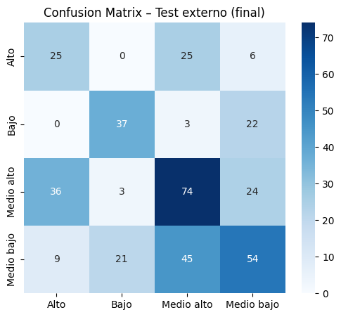
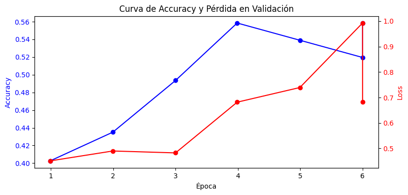
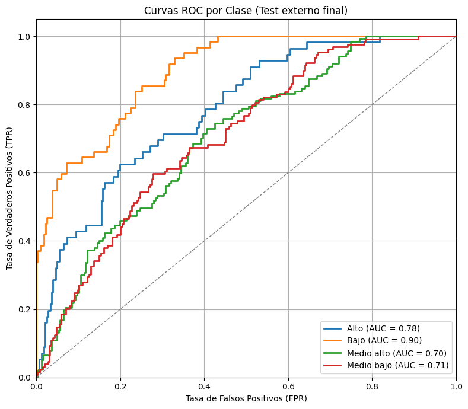

Modelo Transformers#
# Librerías
import os, gc
from pathlib import Path
import numpy as np
import pandas as pd
import torch, torch.nn as nn
import matplotlib.pyplot as plt, seaborn as sns
from sklearn.model_selection import train_test_split
from sklearn.utils.class_weight import compute_class_weight
from sklearn.metrics import classification_report, confusion_matrix
from sklearn.preprocessing import LabelEncoder
from datasets import Dataset
from transformers import (
AutoTokenizer, AutoModelForSequenceClassification,
TrainingArguments, Trainer, EarlyStoppingCallback, TrainerCallback
)
import evaluate
c:\Users\Sistemas\anaconda3\envs\entorno_actualizado\Lib\site-packages\tqdm\auto.py:21: TqdmWarning: IProgress not found. Please update jupyter and ipywidgets. See https://ipywidgets.readthedocs.io/en/stable/user_install.html
from .autonotebook import tqdm as notebook_tqdm
WARNING:tensorflow:From c:\Users\Sistemas\anaconda3\envs\entorno_actualizado\Lib\site-packages\tf_keras\src\losses.py:2976: The name tf.losses.sparse_softmax_cross_entropy is deprecated. Please use tf.compat.v1.losses.sparse_softmax_cross_entropy instead.
# Carga y limpieza desde único dataset
DATA_PATH = Path(r"C:\Users\Sistemas\Desktop\beto solo grid\nuevo_df.csv")
df = pd.read_csv(DATA_PATH)
# Limpieza mínima
df['texto_completo'] = df['clean_text'].fillna('').str.strip()
df['Nivel_f'] = df['Nivel_f'].fillna('').str.strip()
# Codificación de etiquetas
label_encoder = LabelEncoder()
df['label'] = label_encoder.fit_transform(df['Nivel_f'])
print("Clases codificadas:", dict(enumerate(label_encoder.classes_)))
Clases codificadas: {0: 'Alto', 1: 'Bajo', 2: 'Medio alto', 3: 'Medio bajo'}
# División de train / val / test (desde un solo dataset)
train_df, test_df = train_test_split(
df, test_size=0.2, random_state=42, stratify=df['label']
)
# Validación
train_df, val_df = train_test_split(
train_df, test_size=0.1, random_state=42, stratify=train_df['label']
)
print(f"Train: {len(train_df)} | Val: {len(val_df)} | Test: {len(test_df)}")
Train: 1382 | Val: 154 | Test: 384
# Pesos de clase (para la pérdida)
class_weights = torch.tensor(
compute_class_weight(class_weight='balanced',
classes=np.unique(train_df['label']),
y=train_df['label']),
dtype=torch.float)
# Búsqueda de hiperparámetros
from itertools import product
from copy import deepcopy
from tqdm import tqdm
param_grid = {
"learning_rate": [1e-5, 3e-5], # Aprendizaje más lento estabiliza
"per_device_train_batch_size": [8, 16], # Más pequeño = más ruido = más generalización
"num_train_epochs": [10],
"weight_decay": [0.01, 0.1, 0.2],
"lr_scheduler_type": ["cosine"], # Cosine decae mejor con menos overfitting
"warmup_ratio": [0.05, 0.1],
"gradient_accumulation_steps": [2, 3], # Simula batch más grande
"fp16": [True], # Usa media precisión para estabilidad con GPU
}
# Generar combinaciones de hiperparámetros
keys = list(param_grid.keys())
combinations = list(product(*param_grid.values()))
print(f"Total combinaciones a evaluar: {len(combinations)}")
Total combinaciones a evaluar: 48
# Tokenizador y modelo base
model_name = "dccuchile/bert-base-spanish-wwm-cased"
# model_name = "PlanTL-GOB-ES/roberta-base-bne"
tokenizer = AutoTokenizer.from_pretrained(model_name)
model_base = AutoModelForSequenceClassification.from_pretrained(
model_name, num_labels=len(label_encoder.classes_)
)
# Conversión a datasets
def to_hfds(df):
return Dataset.from_pandas(df[['texto_completo', 'label']])
train_ds = to_hfds(train_df)
val_ds = to_hfds(val_df)
test_ds = to_hfds(test_df)
# Tokenización
def tok(batch):
return tokenizer(
batch["texto_completo"],
truncation=True,
padding="max_length",
max_length=512
)
def tok2(batch):
return tokenizer(batch["texto_completo"],
truncation=True,
padding="max_length",
max_length=512,
# Estos para SLIDING WINDOW -----------------------
stride=128,
return_overflowing_tokens=True,
return_special_tokens_mask=True)
train_ds = train_ds.map(tok, batched=True).remove_columns("texto_completo")
val_ds = val_ds.map(tok, batched=True).remove_columns("texto_completo")
#test_ds = test_ds.map(tok, batched=True).remove_columns("texto_completo")
# Para SLIDING WIENDOW ---------------------------
from collections import defaultdict
# Crear dataset de test manualmente (sin modificar el original)
test_ds_windowed = Dataset.from_pandas(test_df[['texto_completo', 'label']])
# Tokenizar con sliding window
tokenized_test = tokenizer(
test_ds_windowed["texto_completo"],
truncation=True,
padding="max_length",
max_length=512,
stride=128,
return_overflowing_tokens=True,
return_special_tokens_mask=True,
return_tensors=None
)
# Guardar mapeo de fragmentos a textos originales
test_ds_windowed = test_ds_windowed.map(tok2, batched=True)
sample_mapping = test_ds_windowed["overflow_to_sample_mapping"]
test_ds_windowed = test_ds_windowed.remove_columns("texto_completo")
test_ds_windowed.set_format("torch")
# Formato PyTorch
for ds in (train_ds, val_ds, test_ds):
ds.set_format("torch")
# Métricas
accuracy = evaluate.load("accuracy")
f1 = evaluate.load("f1")
precision = evaluate.load("precision")
recall = evaluate.load("recall")
def compute_metrics(eval_pred):
logits, labels = eval_pred
preds = np.argmax(logits, axis=-1)
return {
"accuracy" : accuracy.compute(predictions=preds, references=labels)["accuracy"],
"f1_macro" : f1.compute(predictions=preds, references=labels, average="macro")["f1"],
"precision_macro" : precision.compute(predictions=preds, references=labels, average="macro")["precision"],
"recall_macro" : recall.compute(predictions=preds, references=labels, average="macro")["recall"],
}
class MetricPrinter(TrainerCallback):
def on_evaluate(self, args, state, control, metrics=None, **kwargs):
if metrics is None: return
print(f"Época {int(state.epoch):>2} | "
f"Acc={metrics.get('eval_accuracy', 0):.4f} "
f"F1={metrics.get('eval_f1_macro', 0):.4f} "
f"Prec={metrics.get('eval_precision_macro', 0):.4f} "
f"Rec={metrics.get('eval_recall_macro', 0):.4f}")
# Trainer personalizado con pérdida focalizada
class FocalLossTrainer(Trainer):
def compute_loss(self, model, inputs, return_outputs=False, **kwargs):
labels = inputs.pop("labels")
outputs = model(**inputs)
logits = outputs.logits
ce_loss = nn.functional.cross_entropy(logits, labels, weight=class_weights.to(model.device), reduction='none')
pt = torch.exp(-ce_loss)
focal_loss = ((1 - pt) ** 2 * ce_loss).mean()
return (focal_loss, outputs) if return_outputs else focal_loss
Some weights of RobertaForSequenceClassification were not initialized from the model checkpoint at PlanTL-GOB-ES/roberta-base-bne and are newly initialized: ['classifier.dense.bias', 'classifier.dense.weight', 'classifier.out_proj.bias', 'classifier.out_proj.weight']
You should probably TRAIN this model on a down-stream task to be able to use it for predictions and inference.
Map: 100%|██████████| 1382/1382 [00:00<00:00, 4999.61 examples/s]
Map: 100%|██████████| 154/154 [00:00<00:00, 4983.28 examples/s]
Map: 100%|██████████| 384/384 [00:00<00:00, 3991.78 examples/s]
# Parámetros de entrenamiento
out_root = r"C:\Users\Sistemas\Desktop\beto solo grid\out beto grid 1"
os.makedirs(out_root, exist_ok=True)
resultados_grid = []
for i, valores in enumerate(tqdm(combinations, desc="🔁 Ejecutando combinaciones")):
params = dict(zip(keys, valores))
print(f"\nCombinación {i+1}/{len(combinations)}: {params}")
output_dir_i = os.path.join(out_root, f"beto_grid_run_{i}")
os.makedirs(output_dir_i, exist_ok=True)
training_args = TrainingArguments(
output_dir=output_dir_i,
evaluation_strategy="epoch",
save_strategy="no",
logging_strategy="no",
learning_rate=params["learning_rate"],
per_device_train_batch_size=params["per_device_train_batch_size"],
per_device_eval_batch_size=8,
num_train_epochs=params["num_train_epochs"],
weight_decay=params["weight_decay"],
lr_scheduler_type=params["lr_scheduler_type"],
load_best_model_at_end=False,
seed=42,
warmup_ratio=params["warmup_ratio"],
gradient_accumulation_steps=params["gradient_accumulation_steps"],
fp16=params["fp16"],
disable_tqdm=True
)
trainer = FocalLossTrainer(
model=deepcopy(model_base),
args=training_args,
train_dataset=train_ds,
eval_dataset=val_ds,
tokenizer=tokenizer,
compute_metrics=compute_metrics
)
trainer.train()
metrics = trainer.evaluate()
resultados_grid.append({**params, **metrics})
# Liberar memoria
del trainer
torch.cuda.empty_cache()
gc.collect()
🔁 Ejecutando combinaciones: 0%| | 0/48 [00:00<?, ?it/s]c:\Users\Sistemas\anaconda3\envs\entorno_actualizado\Lib\site-packages\transformers\training_args.py:1559: FutureWarning: `evaluation_strategy` is deprecated and will be removed in version 4.46 of 🤗 Transformers. Use `eval_strategy` instead
warnings.warn(
C:\Users\Sistemas\AppData\Local\Temp\ipykernel_26392\2194212552.py:32: FutureWarning: `tokenizer` is deprecated and will be removed in version 5.0.0 for `FocalLossTrainer.__init__`. Use `processing_class` instead.
trainer = FocalLossTrainer(
Combinación 1/48: {'learning_rate': 1e-05, 'per_device_train_batch_size': 8, 'num_train_epochs': 10, 'weight_decay': 0.01, 'lr_scheduler_type': 'cosine', 'warmup_ratio': 0.05, 'gradient_accumulation_steps': 2, 'fp16': True}
{'eval_loss': 0.5277063250541687, 'eval_accuracy': 0.34415584415584416, 'eval_f1_macro': 0.32311926320409884, 'eval_precision_macro': 0.38922332035539586, 'eval_recall_macro': 0.490979020979021, 'eval_runtime': 0.7629, 'eval_samples_per_second': 201.865, 'eval_steps_per_second': 26.216, 'epoch': 0.9942196531791907}
{'eval_loss': 0.5103223919868469, 'eval_accuracy': 0.42207792207792205, 'eval_f1_macro': 0.4160423301513186, 'eval_precision_macro': 0.49364468625587704, 'eval_recall_macro': 0.5237587412587412, 'eval_runtime': 0.816, 'eval_samples_per_second': 188.727, 'eval_steps_per_second': 24.51, 'epoch': 2.0}
{'eval_loss': 0.6864924430847168, 'eval_accuracy': 0.4025974025974026, 'eval_f1_macro': 0.40859262080550024, 'eval_precision_macro': 0.4323568645914109, 'eval_recall_macro': 0.48725524475524473, 'eval_runtime': 0.773, 'eval_samples_per_second': 199.223, 'eval_steps_per_second': 25.873, 'epoch': 2.994219653179191}
{'eval_loss': 0.7310623526573181, 'eval_accuracy': 0.3961038961038961, 'eval_f1_macro': 0.411949469061538, 'eval_precision_macro': 0.43592375366568914, 'eval_recall_macro': 0.46776223776223774, 'eval_runtime': 0.805, 'eval_samples_per_second': 191.296, 'eval_steps_per_second': 24.844, 'epoch': 4.0}
{'eval_loss': 0.7325552701950073, 'eval_accuracy': 0.474025974025974, 'eval_f1_macro': 0.49302942415904416, 'eval_precision_macro': 0.49710096581522434, 'eval_recall_macro': 0.5331118881118881, 'eval_runtime': 0.7718, 'eval_samples_per_second': 199.536, 'eval_steps_per_second': 25.914, 'epoch': 4.994219653179191}
{'eval_loss': 0.7810750007629395, 'eval_accuracy': 0.474025974025974, 'eval_f1_macro': 0.49692666831882326, 'eval_precision_macro': 0.5260326430712537, 'eval_recall_macro': 0.501486013986014, 'eval_runtime': 0.8014, 'eval_samples_per_second': 192.166, 'eval_steps_per_second': 24.957, 'epoch': 6.0}
{'eval_loss': 0.882248044013977, 'eval_accuracy': 0.45454545454545453, 'eval_f1_macro': 0.47120334620334614, 'eval_precision_macro': 0.47708065896448437, 'eval_recall_macro': 0.49330419580419577, 'eval_runtime': 0.786, 'eval_samples_per_second': 195.92, 'eval_steps_per_second': 25.444, 'epoch': 6.994219653179191}
{'eval_loss': 0.91485595703125, 'eval_accuracy': 0.42207792207792205, 'eval_f1_macro': 0.4390495066904966, 'eval_precision_macro': 0.42958179471337365, 'eval_recall_macro': 0.4643356643356643, 'eval_runtime': 0.8006, 'eval_samples_per_second': 192.363, 'eval_steps_per_second': 24.982, 'epoch': 8.0}
{'eval_loss': 0.9665279388427734, 'eval_accuracy': 0.42857142857142855, 'eval_f1_macro': 0.44256542909312235, 'eval_precision_macro': 0.43763763763763763, 'eval_recall_macro': 0.4634265734265734, 'eval_runtime': 0.7876, 'eval_samples_per_second': 195.543, 'eval_steps_per_second': 25.395, 'epoch': 8.99421965317919}
{'eval_loss': 0.9770123362541199, 'eval_accuracy': 0.43506493506493504, 'eval_f1_macro': 0.4489682539682539, 'eval_precision_macro': 0.4425852366765971, 'eval_recall_macro': 0.4734265734265734, 'eval_runtime': 0.8126, 'eval_samples_per_second': 189.52, 'eval_steps_per_second': 24.613, 'epoch': 9.942196531791907}
{'train_runtime': 240.772, 'train_samples_per_second': 57.399, 'train_steps_per_second': 3.572, 'train_loss': 0.4761164465615916, 'epoch': 9.942196531791907}
{'eval_loss': 0.9770123362541199, 'eval_accuracy': 0.43506493506493504, 'eval_f1_macro': 0.4489682539682539, 'eval_precision_macro': 0.4425852366765971, 'eval_recall_macro': 0.4734265734265734, 'eval_runtime': 0.7637, 'eval_samples_per_second': 201.65, 'eval_steps_per_second': 26.188, 'epoch': 9.942196531791907}
🔁 Ejecutando combinaciones: 2%|▏ | 1/48 [04:02<3:09:58, 242.51s/it]c:\Users\Sistemas\anaconda3\envs\entorno_actualizado\Lib\site-packages\transformers\training_args.py:1559: FutureWarning: `evaluation_strategy` is deprecated and will be removed in version 4.46 of 🤗 Transformers. Use `eval_strategy` instead
warnings.warn(
C:\Users\Sistemas\AppData\Local\Temp\ipykernel_26392\2194212552.py:32: FutureWarning: `tokenizer` is deprecated and will be removed in version 5.0.0 for `FocalLossTrainer.__init__`. Use `processing_class` instead.
trainer = FocalLossTrainer(
Combinación 2/48: {'learning_rate': 1e-05, 'per_device_train_batch_size': 8, 'num_train_epochs': 10, 'weight_decay': 0.01, 'lr_scheduler_type': 'cosine', 'warmup_ratio': 0.05, 'gradient_accumulation_steps': 3, 'fp16': True}
c:\Users\Sistemas\anaconda3\envs\entorno_actualizado\Lib\site-packages\sklearn\metrics\_classification.py:1531: UndefinedMetricWarning: Precision is ill-defined and being set to 0.0 in labels with no predicted samples. Use `zero_division` parameter to control this behavior.
_warn_prf(average, modifier, f"{metric.capitalize()} is", len(result))
{'eval_loss': 0.6040812134742737, 'eval_accuracy': 0.2727272727272727, 'eval_f1_macro': 0.2171966088098417, 'eval_precision_macro': 0.18709823040808954, 'eval_recall_macro': 0.43935314685314686, 'eval_runtime': 0.7792, 'eval_samples_per_second': 197.645, 'eval_steps_per_second': 25.668, 'epoch': 0.9884393063583815}
{'eval_loss': 0.49561721086502075, 'eval_accuracy': 0.461038961038961, 'eval_f1_macro': 0.4699744550269732, 'eval_precision_macro': 0.4748376623376623, 'eval_recall_macro': 0.555437062937063, 'eval_runtime': 0.7965, 'eval_samples_per_second': 193.348, 'eval_steps_per_second': 25.11, 'epoch': 1.9942196531791907}
{'eval_loss': 0.6225122809410095, 'eval_accuracy': 0.42207792207792205, 'eval_f1_macro': 0.43612026707234613, 'eval_precision_macro': 0.45276199494949493, 'eval_recall_macro': 0.4930244755244755, 'eval_runtime': 0.8087, 'eval_samples_per_second': 190.439, 'eval_steps_per_second': 24.732, 'epoch': 3.0}
{'eval_loss': 0.5352659225463867, 'eval_accuracy': 0.44155844155844154, 'eval_f1_macro': 0.4462285911966989, 'eval_precision_macro': 0.45473871366728513, 'eval_recall_macro': 0.5336713286713287, 'eval_runtime': 0.7915, 'eval_samples_per_second': 194.572, 'eval_steps_per_second': 25.269, 'epoch': 3.9884393063583814}
{'eval_loss': 0.6008415818214417, 'eval_accuracy': 0.44155844155844154, 'eval_f1_macro': 0.4492055558942141, 'eval_precision_macro': 0.44881794982907214, 'eval_recall_macro': 0.5232342657342658, 'eval_runtime': 0.7919, 'eval_samples_per_second': 194.472, 'eval_steps_per_second': 25.256, 'epoch': 4.994219653179191}
{'eval_loss': 0.6495743989944458, 'eval_accuracy': 0.5064935064935064, 'eval_f1_macro': 0.5255620563645507, 'eval_precision_macro': 0.5097467555420896, 'eval_recall_macro': 0.5684265734265734, 'eval_runtime': 0.8127, 'eval_samples_per_second': 189.499, 'eval_steps_per_second': 24.61, 'epoch': 6.0}
{'eval_loss': 0.7248732447624207, 'eval_accuracy': 0.4675324675324675, 'eval_f1_macro': 0.4881805028034002, 'eval_precision_macro': 0.4926580999913578, 'eval_recall_macro': 0.5089510489510489, 'eval_runtime': 0.7737, 'eval_samples_per_second': 199.034, 'eval_steps_per_second': 25.849, 'epoch': 6.988439306358382}
{'eval_loss': 0.7312018871307373, 'eval_accuracy': 0.474025974025974, 'eval_f1_macro': 0.4932415420928402, 'eval_precision_macro': 0.4879929084993634, 'eval_recall_macro': 0.5145979020979021, 'eval_runtime': 0.7699, 'eval_samples_per_second': 200.036, 'eval_steps_per_second': 25.979, 'epoch': 7.994219653179191}
{'eval_loss': 0.7592957019805908, 'eval_accuracy': 0.461038961038961, 'eval_f1_macro': 0.4797785547785548, 'eval_precision_macro': 0.4822129949158347, 'eval_recall_macro': 0.49349650349650354, 'eval_runtime': 0.7929, 'eval_samples_per_second': 194.223, 'eval_steps_per_second': 25.224, 'epoch': 9.0}
{'eval_loss': 0.7765375375747681, 'eval_accuracy': 0.45454545454545453, 'eval_f1_macro': 0.4772067369933002, 'eval_precision_macro': 0.4825564462818873, 'eval_recall_macro': 0.4941433566433566, 'eval_runtime': 0.7951, 'eval_samples_per_second': 193.688, 'eval_steps_per_second': 25.154, 'epoch': 9.884393063583815}
{'train_runtime': 232.0272, 'train_samples_per_second': 59.562, 'train_steps_per_second': 2.457, 'train_loss': 0.8370421292489035, 'epoch': 9.884393063583815}
{'eval_loss': 0.7765375375747681, 'eval_accuracy': 0.45454545454545453, 'eval_f1_macro': 0.4772067369933002, 'eval_precision_macro': 0.4825564462818873, 'eval_recall_macro': 0.4941433566433566, 'eval_runtime': 0.769, 'eval_samples_per_second': 200.27, 'eval_steps_per_second': 26.009, 'epoch': 9.884393063583815}
🔁 Ejecutando combinaciones: 4%|▍ | 2/48 [07:56<3:01:54, 237.26s/it]c:\Users\Sistemas\anaconda3\envs\entorno_actualizado\Lib\site-packages\transformers\training_args.py:1559: FutureWarning: `evaluation_strategy` is deprecated and will be removed in version 4.46 of 🤗 Transformers. Use `eval_strategy` instead
warnings.warn(
C:\Users\Sistemas\AppData\Local\Temp\ipykernel_26392\2194212552.py:32: FutureWarning: `tokenizer` is deprecated and will be removed in version 5.0.0 for `FocalLossTrainer.__init__`. Use `processing_class` instead.
trainer = FocalLossTrainer(
Combinación 3/48: {'learning_rate': 1e-05, 'per_device_train_batch_size': 8, 'num_train_epochs': 10, 'weight_decay': 0.01, 'lr_scheduler_type': 'cosine', 'warmup_ratio': 0.1, 'gradient_accumulation_steps': 2, 'fp16': True}
{'eval_loss': 0.5878493785858154, 'eval_accuracy': 0.34415584415584416, 'eval_f1_macro': 0.3136305256451854, 'eval_precision_macro': 0.5273721382510492, 'eval_recall_macro': 0.5043531468531468, 'eval_runtime': 0.7713, 'eval_samples_per_second': 199.664, 'eval_steps_per_second': 25.93, 'epoch': 0.9942196531791907}
{'eval_loss': 0.48789969086647034, 'eval_accuracy': 0.42857142857142855, 'eval_f1_macro': 0.42660236124634854, 'eval_precision_macro': 0.45599274628879893, 'eval_recall_macro': 0.5351223776223777, 'eval_runtime': 0.7958, 'eval_samples_per_second': 193.525, 'eval_steps_per_second': 25.133, 'epoch': 2.0}
{'eval_loss': 0.7744743824005127, 'eval_accuracy': 0.37012987012987014, 'eval_f1_macro': 0.38769478042933414, 'eval_precision_macro': 0.46905906593406593, 'eval_recall_macro': 0.44931818181818184, 'eval_runtime': 0.8368, 'eval_samples_per_second': 184.039, 'eval_steps_per_second': 23.901, 'epoch': 2.994219653179191}
{'eval_loss': 0.7110622525215149, 'eval_accuracy': 0.42207792207792205, 'eval_f1_macro': 0.44362678306832637, 'eval_precision_macro': 0.45940860215053764, 'eval_recall_macro': 0.5063986013986014, 'eval_runtime': 0.7981, 'eval_samples_per_second': 192.952, 'eval_steps_per_second': 25.059, 'epoch': 4.0}
{'eval_loss': 0.6852708458900452, 'eval_accuracy': 0.44155844155844154, 'eval_f1_macro': 0.4499104723190089, 'eval_precision_macro': 0.43698616198616197, 'eval_recall_macro': 0.5103846153846153, 'eval_runtime': 0.7773, 'eval_samples_per_second': 198.124, 'eval_steps_per_second': 25.73, 'epoch': 4.994219653179191}
{'eval_loss': 0.8598634004592896, 'eval_accuracy': 0.4805194805194805, 'eval_f1_macro': 0.487942202987575, 'eval_precision_macro': 0.5707821300563236, 'eval_recall_macro': 0.5035664335664336, 'eval_runtime': 0.809, 'eval_samples_per_second': 190.356, 'eval_steps_per_second': 24.722, 'epoch': 6.0}
{'eval_loss': 0.8553794622421265, 'eval_accuracy': 0.5194805194805194, 'eval_f1_macro': 0.5308881796169932, 'eval_precision_macro': 0.5486696004661812, 'eval_recall_macro': 0.5392832167832168, 'eval_runtime': 0.7852, 'eval_samples_per_second': 196.14, 'eval_steps_per_second': 25.473, 'epoch': 6.994219653179191}
{'eval_loss': 0.9222337603569031, 'eval_accuracy': 0.487012987012987, 'eval_f1_macro': 0.5087278841377202, 'eval_precision_macro': 0.5449280809502485, 'eval_recall_macro': 0.5157692307692308, 'eval_runtime': 0.7897, 'eval_samples_per_second': 195.006, 'eval_steps_per_second': 25.326, 'epoch': 8.0}
{'eval_loss': 0.9585942029953003, 'eval_accuracy': 0.4935064935064935, 'eval_f1_macro': 0.5131736294831913, 'eval_precision_macro': 0.5505639559899195, 'eval_recall_macro': 0.5151223776223777, 'eval_runtime': 0.7728, 'eval_samples_per_second': 199.281, 'eval_steps_per_second': 25.881, 'epoch': 8.99421965317919}
{'eval_loss': 0.9626017212867737, 'eval_accuracy': 0.4935064935064935, 'eval_f1_macro': 0.5107316578403318, 'eval_precision_macro': 0.5378634212305612, 'eval_recall_macro': 0.5151223776223777, 'eval_runtime': 0.7922, 'eval_samples_per_second': 194.405, 'eval_steps_per_second': 25.247, 'epoch': 9.942196531791907}
{'train_runtime': 241.4618, 'train_samples_per_second': 57.235, 'train_steps_per_second': 3.562, 'train_loss': 0.4996583805527798, 'epoch': 9.942196531791907}
{'eval_loss': 0.9626017212867737, 'eval_accuracy': 0.4935064935064935, 'eval_f1_macro': 0.5107316578403318, 'eval_precision_macro': 0.5378634212305612, 'eval_recall_macro': 0.5151223776223777, 'eval_runtime': 0.7514, 'eval_samples_per_second': 204.953, 'eval_steps_per_second': 26.617, 'epoch': 9.942196531791907}
🔁 Ejecutando combinaciones: 6%|▋ | 3/48 [11:59<2:59:54, 239.87s/it]c:\Users\Sistemas\anaconda3\envs\entorno_actualizado\Lib\site-packages\transformers\training_args.py:1559: FutureWarning: `evaluation_strategy` is deprecated and will be removed in version 4.46 of 🤗 Transformers. Use `eval_strategy` instead
warnings.warn(
C:\Users\Sistemas\AppData\Local\Temp\ipykernel_26392\2194212552.py:32: FutureWarning: `tokenizer` is deprecated and will be removed in version 5.0.0 for `FocalLossTrainer.__init__`. Use `processing_class` instead.
trainer = FocalLossTrainer(
Combinación 4/48: {'learning_rate': 1e-05, 'per_device_train_batch_size': 8, 'num_train_epochs': 10, 'weight_decay': 0.01, 'lr_scheduler_type': 'cosine', 'warmup_ratio': 0.1, 'gradient_accumulation_steps': 3, 'fp16': True}
c:\Users\Sistemas\anaconda3\envs\entorno_actualizado\Lib\site-packages\sklearn\metrics\_classification.py:1531: UndefinedMetricWarning: Precision is ill-defined and being set to 0.0 in labels with no predicted samples. Use `zero_division` parameter to control this behavior.
_warn_prf(average, modifier, f"{metric.capitalize()} is", len(result))
{'eval_loss': 0.7207403182983398, 'eval_accuracy': 0.24025974025974026, 'eval_f1_macro': 0.1851457756969568, 'eval_precision_macro': 0.12368024132730016, 'eval_recall_macro': 0.3890909090909091, 'eval_runtime': 0.7684, 'eval_samples_per_second': 200.428, 'eval_steps_per_second': 26.03, 'epoch': 0.9884393063583815}
{'eval_loss': 0.47712886333465576, 'eval_accuracy': 0.38961038961038963, 'eval_f1_macro': 0.4022376543209876, 'eval_precision_macro': 0.40455284174279627, 'eval_recall_macro': 0.5052272727272727, 'eval_runtime': 0.7672, 'eval_samples_per_second': 200.722, 'eval_steps_per_second': 26.068, 'epoch': 1.9942196531791907}
{'eval_loss': 0.7094990015029907, 'eval_accuracy': 0.38961038961038963, 'eval_f1_macro': 0.40350683719678304, 'eval_precision_macro': 0.4780018171652222, 'eval_recall_macro': 0.4708216783216783, 'eval_runtime': 0.7881, 'eval_samples_per_second': 195.406, 'eval_steps_per_second': 25.377, 'epoch': 3.0}
{'eval_loss': 0.5659456253051758, 'eval_accuracy': 0.3961038961038961, 'eval_f1_macro': 0.4008260178518799, 'eval_precision_macro': 0.4034731444349484, 'eval_recall_macro': 0.49451048951048954, 'eval_runtime': 0.7809, 'eval_samples_per_second': 197.211, 'eval_steps_per_second': 25.612, 'epoch': 3.9884393063583814}
{'eval_loss': 0.621519923210144, 'eval_accuracy': 0.44155844155844154, 'eval_f1_macro': 0.4487670068027211, 'eval_precision_macro': 0.44644419018560894, 'eval_recall_macro': 0.522972027972028, 'eval_runtime': 0.769, 'eval_samples_per_second': 200.272, 'eval_steps_per_second': 26.009, 'epoch': 4.994219653179191}
{'eval_loss': 0.6840088367462158, 'eval_accuracy': 0.4805194805194805, 'eval_f1_macro': 0.4913995965934559, 'eval_precision_macro': 0.47821969696969696, 'eval_recall_macro': 0.5366083916083916, 'eval_runtime': 0.7908, 'eval_samples_per_second': 194.734, 'eval_steps_per_second': 25.29, 'epoch': 6.0}
{'eval_loss': 0.7132948040962219, 'eval_accuracy': 0.487012987012987, 'eval_f1_macro': 0.5051296108861898, 'eval_precision_macro': 0.4913600891861762, 'eval_recall_macro': 0.5416783216783216, 'eval_runtime': 0.7718, 'eval_samples_per_second': 199.54, 'eval_steps_per_second': 25.914, 'epoch': 6.988439306358382}
{'eval_loss': 0.778484582901001, 'eval_accuracy': 0.4805194805194805, 'eval_f1_macro': 0.49423002036903907, 'eval_precision_macro': 0.49454806312769006, 'eval_recall_macro': 0.5234965034965035, 'eval_runtime': 0.7734, 'eval_samples_per_second': 199.121, 'eval_steps_per_second': 25.86, 'epoch': 7.994219653179191}
{'eval_loss': 0.7903544306755066, 'eval_accuracy': 0.4805194805194805, 'eval_f1_macro': 0.4953240465623422, 'eval_precision_macro': 0.5044476527570789, 'eval_recall_macro': 0.502465034965035, 'eval_runtime': 0.8467, 'eval_samples_per_second': 181.878, 'eval_steps_per_second': 23.621, 'epoch': 9.0}
{'eval_loss': 0.8056621551513672, 'eval_accuracy': 0.474025974025974, 'eval_f1_macro': 0.49025194536270106, 'eval_precision_macro': 0.49641500855798026, 'eval_recall_macro': 0.5134965034965034, 'eval_runtime': 0.7981, 'eval_samples_per_second': 192.968, 'eval_steps_per_second': 25.061, 'epoch': 9.884393063583815}
{'train_runtime': 230.4878, 'train_samples_per_second': 59.96, 'train_steps_per_second': 2.473, 'train_loss': 0.8635444507264254, 'epoch': 9.884393063583815}
{'eval_loss': 0.8056621551513672, 'eval_accuracy': 0.474025974025974, 'eval_f1_macro': 0.49025194536270106, 'eval_precision_macro': 0.49641500855798026, 'eval_recall_macro': 0.5134965034965034, 'eval_runtime': 0.7515, 'eval_samples_per_second': 204.928, 'eval_steps_per_second': 26.614, 'epoch': 9.884393063583815}
🔁 Ejecutando combinaciones: 8%|▊ | 4/48 [15:51<2:53:37, 236.76s/it]c:\Users\Sistemas\anaconda3\envs\entorno_actualizado\Lib\site-packages\transformers\training_args.py:1559: FutureWarning: `evaluation_strategy` is deprecated and will be removed in version 4.46 of 🤗 Transformers. Use `eval_strategy` instead
warnings.warn(
C:\Users\Sistemas\AppData\Local\Temp\ipykernel_26392\2194212552.py:32: FutureWarning: `tokenizer` is deprecated and will be removed in version 5.0.0 for `FocalLossTrainer.__init__`. Use `processing_class` instead.
trainer = FocalLossTrainer(
Combinación 5/48: {'learning_rate': 1e-05, 'per_device_train_batch_size': 8, 'num_train_epochs': 10, 'weight_decay': 0.1, 'lr_scheduler_type': 'cosine', 'warmup_ratio': 0.05, 'gradient_accumulation_steps': 2, 'fp16': True}
{'eval_loss': 0.521379828453064, 'eval_accuracy': 0.33766233766233766, 'eval_f1_macro': 0.31853586353012786, 'eval_precision_macro': 0.3821486928104575, 'eval_recall_macro': 0.48643356643356644, 'eval_runtime': 0.778, 'eval_samples_per_second': 197.946, 'eval_steps_per_second': 25.707, 'epoch': 0.9942196531791907}
{'eval_loss': 0.49981555342674255, 'eval_accuracy': 0.4090909090909091, 'eval_f1_macro': 0.4077699829931973, 'eval_precision_macro': 0.45069639976759585, 'eval_recall_macro': 0.5206993006993007, 'eval_runtime': 0.7929, 'eval_samples_per_second': 194.218, 'eval_steps_per_second': 25.223, 'epoch': 2.0}
{'eval_loss': 0.6822749376296997, 'eval_accuracy': 0.3961038961038961, 'eval_f1_macro': 0.4046300238131922, 'eval_precision_macro': 0.4291486999071176, 'eval_recall_macro': 0.48218531468531467, 'eval_runtime': 0.7801, 'eval_samples_per_second': 197.419, 'eval_steps_per_second': 25.639, 'epoch': 2.994219653179191}
{'eval_loss': 0.6820718050003052, 'eval_accuracy': 0.4090909090909091, 'eval_f1_macro': 0.43136750084701764, 'eval_precision_macro': 0.43302310330912025, 'eval_recall_macro': 0.49730769230769223, 'eval_runtime': 0.7904, 'eval_samples_per_second': 194.839, 'eval_steps_per_second': 25.304, 'epoch': 4.0}
{'eval_loss': 0.7111631035804749, 'eval_accuracy': 0.474025974025974, 'eval_f1_macro': 0.4961547773784948, 'eval_precision_macro': 0.49779585745668065, 'eval_recall_macro': 0.5401923076923076, 'eval_runtime': 0.7903, 'eval_samples_per_second': 194.855, 'eval_steps_per_second': 25.306, 'epoch': 4.994219653179191}
{'eval_loss': 0.7607323527336121, 'eval_accuracy': 0.5, 'eval_f1_macro': 0.5191182917247524, 'eval_precision_macro': 0.5471606015287471, 'eval_recall_macro': 0.51993006993007, 'eval_runtime': 0.7954, 'eval_samples_per_second': 193.618, 'eval_steps_per_second': 25.145, 'epoch': 6.0}
{'eval_loss': 0.892338216304779, 'eval_accuracy': 0.43506493506493504, 'eval_f1_macro': 0.4602905112242973, 'eval_precision_macro': 0.47101968777814573, 'eval_recall_macro': 0.47940559440559444, 'eval_runtime': 0.7814, 'eval_samples_per_second': 197.085, 'eval_steps_per_second': 25.595, 'epoch': 6.994219653179191}
{'eval_loss': 0.9206743836402893, 'eval_accuracy': 0.45454545454545453, 'eval_f1_macro': 0.47075702075702075, 'eval_precision_macro': 0.48058993637941005, 'eval_recall_macro': 0.487062937062937, 'eval_runtime': 0.7958, 'eval_samples_per_second': 193.513, 'eval_steps_per_second': 25.132, 'epoch': 8.0}
{'eval_loss': 0.966213583946228, 'eval_accuracy': 0.4675324675324675, 'eval_f1_macro': 0.48176282701541373, 'eval_precision_macro': 0.4917931829696536, 'eval_recall_macro': 0.4961538461538461, 'eval_runtime': 0.7731, 'eval_samples_per_second': 199.19, 'eval_steps_per_second': 25.869, 'epoch': 8.99421965317919}
{'eval_loss': 0.9776198267936707, 'eval_accuracy': 0.474025974025974, 'eval_f1_macro': 0.4917248732782713, 'eval_precision_macro': 0.49961816305469553, 'eval_recall_macro': 0.5075174825174825, 'eval_runtime': 0.793, 'eval_samples_per_second': 194.201, 'eval_steps_per_second': 25.221, 'epoch': 9.942196531791907}
{'train_runtime': 241.0591, 'train_samples_per_second': 57.33, 'train_steps_per_second': 3.568, 'train_loss': 0.4757418255473292, 'epoch': 9.942196531791907}
{'eval_loss': 0.9776198267936707, 'eval_accuracy': 0.474025974025974, 'eval_f1_macro': 0.4917248732782713, 'eval_precision_macro': 0.49961816305469553, 'eval_recall_macro': 0.5075174825174825, 'eval_runtime': 0.7552, 'eval_samples_per_second': 203.924, 'eval_steps_per_second': 26.484, 'epoch': 9.942196531791907}
🔁 Ejecutando combinaciones: 10%|█ | 5/48 [19:53<2:51:09, 238.84s/it]c:\Users\Sistemas\anaconda3\envs\entorno_actualizado\Lib\site-packages\transformers\training_args.py:1559: FutureWarning: `evaluation_strategy` is deprecated and will be removed in version 4.46 of 🤗 Transformers. Use `eval_strategy` instead
warnings.warn(
C:\Users\Sistemas\AppData\Local\Temp\ipykernel_26392\2194212552.py:32: FutureWarning: `tokenizer` is deprecated and will be removed in version 5.0.0 for `FocalLossTrainer.__init__`. Use `processing_class` instead.
trainer = FocalLossTrainer(
Combinación 6/48: {'learning_rate': 1e-05, 'per_device_train_batch_size': 8, 'num_train_epochs': 10, 'weight_decay': 0.1, 'lr_scheduler_type': 'cosine', 'warmup_ratio': 0.05, 'gradient_accumulation_steps': 3, 'fp16': True}
c:\Users\Sistemas\anaconda3\envs\entorno_actualizado\Lib\site-packages\sklearn\metrics\_classification.py:1531: UndefinedMetricWarning: Precision is ill-defined and being set to 0.0 in labels with no predicted samples. Use `zero_division` parameter to control this behavior.
_warn_prf(average, modifier, f"{metric.capitalize()} is", len(result))
{'eval_loss': 0.6215689778327942, 'eval_accuracy': 0.2987012987012987, 'eval_f1_macro': 0.25830294877694787, 'eval_precision_macro': 0.25720560303893636, 'eval_recall_macro': 0.45202797202797207, 'eval_runtime': 0.778, 'eval_samples_per_second': 197.932, 'eval_steps_per_second': 25.705, 'epoch': 0.9884393063583815}
{'eval_loss': 0.5010548830032349, 'eval_accuracy': 0.4805194805194805, 'eval_f1_macro': 0.4862435982227649, 'eval_precision_macro': 0.4968825500740395, 'eval_recall_macro': 0.5690734265734265, 'eval_runtime': 0.7721, 'eval_samples_per_second': 199.456, 'eval_steps_per_second': 25.903, 'epoch': 1.9942196531791907}
{'eval_loss': 0.7500025629997253, 'eval_accuracy': 0.38961038961038963, 'eval_f1_macro': 0.39336323763955344, 'eval_precision_macro': 0.45977543290043293, 'eval_recall_macro': 0.45036713286713287, 'eval_runtime': 0.8049, 'eval_samples_per_second': 191.323, 'eval_steps_per_second': 24.847, 'epoch': 3.0}
{'eval_loss': 0.5893951654434204, 'eval_accuracy': 0.42207792207792205, 'eval_f1_macro': 0.4269361826430532, 'eval_precision_macro': 0.4259208384208384, 'eval_recall_macro': 0.5069230769230768, 'eval_runtime': 0.7722, 'eval_samples_per_second': 199.421, 'eval_steps_per_second': 25.899, 'epoch': 3.9884393063583814}
{'eval_loss': 0.632042646408081, 'eval_accuracy': 0.44805194805194803, 'eval_f1_macro': 0.4586053652230123, 'eval_precision_macro': 0.44926444280753447, 'eval_recall_macro': 0.5280419580419581, 'eval_runtime': 0.7737, 'eval_samples_per_second': 199.044, 'eval_steps_per_second': 25.85, 'epoch': 4.994219653179191}
{'eval_loss': 0.6613960862159729, 'eval_accuracy': 0.461038961038961, 'eval_f1_macro': 0.48063197456869433, 'eval_precision_macro': 0.46154853833425263, 'eval_recall_macro': 0.5297902097902097, 'eval_runtime': 0.7999, 'eval_samples_per_second': 192.527, 'eval_steps_per_second': 25.003, 'epoch': 6.0}
{'eval_loss': 0.7363903522491455, 'eval_accuracy': 0.42207792207792205, 'eval_f1_macro': 0.43231839737623545, 'eval_precision_macro': 0.4179824561403509, 'eval_recall_macro': 0.4703146853146853, 'eval_runtime': 0.8061, 'eval_samples_per_second': 191.044, 'eval_steps_per_second': 24.811, 'epoch': 6.988439306358382}
{'eval_loss': 0.7680336236953735, 'eval_accuracy': 0.45454545454545453, 'eval_f1_macro': 0.4709135822039048, 'eval_precision_macro': 0.47830389166596066, 'eval_recall_macro': 0.4873251748251748, 'eval_runtime': 0.7833, 'eval_samples_per_second': 196.6, 'eval_steps_per_second': 25.532, 'epoch': 7.994219653179191}
{'eval_loss': 0.7768732309341431, 'eval_accuracy': 0.45454545454545453, 'eval_f1_macro': 0.46338499762221336, 'eval_precision_macro': 0.4641544526334511, 'eval_recall_macro': 0.47557692307692306, 'eval_runtime': 0.799, 'eval_samples_per_second': 192.744, 'eval_steps_per_second': 25.032, 'epoch': 9.0}
{'eval_loss': 0.7961671352386475, 'eval_accuracy': 0.44805194805194803, 'eval_f1_macro': 0.45867594349567786, 'eval_precision_macro': 0.46558726279470963, 'eval_recall_macro': 0.47596153846153844, 'eval_runtime': 0.833, 'eval_samples_per_second': 184.867, 'eval_steps_per_second': 24.009, 'epoch': 9.884393063583815}
{'train_runtime': 231.1133, 'train_samples_per_second': 59.798, 'train_steps_per_second': 2.466, 'train_loss': 0.8407645242256031, 'epoch': 9.884393063583815}
{'eval_loss': 0.7961671352386475, 'eval_accuracy': 0.44805194805194803, 'eval_f1_macro': 0.45867594349567786, 'eval_precision_macro': 0.46558726279470963, 'eval_recall_macro': 0.47596153846153844, 'eval_runtime': 0.7677, 'eval_samples_per_second': 200.603, 'eval_steps_per_second': 26.052, 'epoch': 9.884393063583815}
🔁 Ejecutando combinaciones: 12%|█▎ | 6/48 [23:46<2:45:42, 236.73s/it]c:\Users\Sistemas\anaconda3\envs\entorno_actualizado\Lib\site-packages\transformers\training_args.py:1559: FutureWarning: `evaluation_strategy` is deprecated and will be removed in version 4.46 of 🤗 Transformers. Use `eval_strategy` instead
warnings.warn(
C:\Users\Sistemas\AppData\Local\Temp\ipykernel_26392\2194212552.py:32: FutureWarning: `tokenizer` is deprecated and will be removed in version 5.0.0 for `FocalLossTrainer.__init__`. Use `processing_class` instead.
trainer = FocalLossTrainer(
Combinación 7/48: {'learning_rate': 1e-05, 'per_device_train_batch_size': 8, 'num_train_epochs': 10, 'weight_decay': 0.1, 'lr_scheduler_type': 'cosine', 'warmup_ratio': 0.1, 'gradient_accumulation_steps': 2, 'fp16': True}
{'eval_loss': 0.58796226978302, 'eval_accuracy': 0.34415584415584416, 'eval_f1_macro': 0.3136305256451854, 'eval_precision_macro': 0.5273721382510492, 'eval_recall_macro': 0.5043531468531468, 'eval_runtime': 0.7779, 'eval_samples_per_second': 197.957, 'eval_steps_per_second': 25.709, 'epoch': 0.9942196531791907}
{'eval_loss': 0.49993962049484253, 'eval_accuracy': 0.42857142857142855, 'eval_f1_macro': 0.42106614557953853, 'eval_precision_macro': 0.5296842650103519, 'eval_recall_macro': 0.5416783216783216, 'eval_runtime': 0.7924, 'eval_samples_per_second': 194.355, 'eval_steps_per_second': 25.241, 'epoch': 2.0}
{'eval_loss': 0.6829979419708252, 'eval_accuracy': 0.3961038961038961, 'eval_f1_macro': 0.40198296241949943, 'eval_precision_macro': 0.4348007590132828, 'eval_recall_macro': 0.48218531468531467, 'eval_runtime': 0.7737, 'eval_samples_per_second': 199.048, 'eval_steps_per_second': 25.85, 'epoch': 2.994219653179191}
{'eval_loss': 0.7190485596656799, 'eval_accuracy': 0.4025974025974026, 'eval_f1_macro': 0.4163990402362495, 'eval_precision_macro': 0.4320575975748389, 'eval_recall_macro': 0.48568181818181816, 'eval_runtime': 0.7951, 'eval_samples_per_second': 193.689, 'eval_steps_per_second': 25.154, 'epoch': 4.0}
{'eval_loss': 0.7058618664741516, 'eval_accuracy': 0.487012987012987, 'eval_f1_macro': 0.49556277056277054, 'eval_precision_macro': 0.49722222222222223, 'eval_recall_macro': 0.5427272727272727, 'eval_runtime': 0.778, 'eval_samples_per_second': 197.932, 'eval_steps_per_second': 25.705, 'epoch': 4.994219653179191}
{'eval_loss': 0.7828437685966492, 'eval_accuracy': 0.5194805194805194, 'eval_f1_macro': 0.5410751454908458, 'eval_precision_macro': 0.5675303862803863, 'eval_recall_macro': 0.5523426573426573, 'eval_runtime': 0.7979, 'eval_samples_per_second': 192.998, 'eval_steps_per_second': 25.065, 'epoch': 6.0}
{'eval_loss': 0.8502515554428101, 'eval_accuracy': 0.4935064935064935, 'eval_f1_macro': 0.5065073143812653, 'eval_precision_macro': 0.5192622307543707, 'eval_recall_macro': 0.5151223776223777, 'eval_runtime': 0.777, 'eval_samples_per_second': 198.19, 'eval_steps_per_second': 25.739, 'epoch': 6.994219653179191}
{'eval_loss': 0.9111121892929077, 'eval_accuracy': 0.461038961038961, 'eval_f1_macro': 0.48259061200237674, 'eval_precision_macro': 0.5011482607227288, 'eval_recall_macro': 0.4814860139860139, 'eval_runtime': 0.7984, 'eval_samples_per_second': 192.885, 'eval_steps_per_second': 25.05, 'epoch': 8.0}
{'eval_loss': 0.9609132409095764, 'eval_accuracy': 0.4805194805194805, 'eval_f1_macro': 0.4986210708982986, 'eval_precision_macro': 0.525, 'eval_recall_macro': 0.49564685314685314, 'eval_runtime': 0.7788, 'eval_samples_per_second': 197.736, 'eval_steps_per_second': 25.68, 'epoch': 8.99421965317919}
{'eval_loss': 0.9640342593193054, 'eval_accuracy': 0.474025974025974, 'eval_f1_macro': 0.4940126854300337, 'eval_precision_macro': 0.5108862619381553, 'eval_recall_macro': 0.4962937062937063, 'eval_runtime': 0.7986, 'eval_samples_per_second': 192.832, 'eval_steps_per_second': 25.043, 'epoch': 9.942196531791907}
{'train_runtime': 241.6846, 'train_samples_per_second': 57.182, 'train_steps_per_second': 3.558, 'train_loss': 0.49635921744413153, 'epoch': 9.942196531791907}
{'eval_loss': 0.9640342593193054, 'eval_accuracy': 0.474025974025974, 'eval_f1_macro': 0.4940126854300337, 'eval_precision_macro': 0.5108862619381553, 'eval_recall_macro': 0.4962937062937063, 'eval_runtime': 0.7582, 'eval_samples_per_second': 203.113, 'eval_steps_per_second': 26.378, 'epoch': 9.942196531791907}
🔁 Ejecutando combinaciones: 15%|█▍ | 7/48 [27:49<2:43:13, 238.86s/it]c:\Users\Sistemas\anaconda3\envs\entorno_actualizado\Lib\site-packages\transformers\training_args.py:1559: FutureWarning: `evaluation_strategy` is deprecated and will be removed in version 4.46 of 🤗 Transformers. Use `eval_strategy` instead
warnings.warn(
C:\Users\Sistemas\AppData\Local\Temp\ipykernel_26392\2194212552.py:32: FutureWarning: `tokenizer` is deprecated and will be removed in version 5.0.0 for `FocalLossTrainer.__init__`. Use `processing_class` instead.
trainer = FocalLossTrainer(
Combinación 8/48: {'learning_rate': 1e-05, 'per_device_train_batch_size': 8, 'num_train_epochs': 10, 'weight_decay': 0.1, 'lr_scheduler_type': 'cosine', 'warmup_ratio': 0.1, 'gradient_accumulation_steps': 3, 'fp16': True}
c:\Users\Sistemas\anaconda3\envs\entorno_actualizado\Lib\site-packages\sklearn\metrics\_classification.py:1531: UndefinedMetricWarning: Precision is ill-defined and being set to 0.0 in labels with no predicted samples. Use `zero_division` parameter to control this behavior.
_warn_prf(average, modifier, f"{metric.capitalize()} is", len(result))
{'eval_loss': 0.7261852025985718, 'eval_accuracy': 0.24025974025974026, 'eval_f1_macro': 0.18940734188412206, 'eval_precision_macro': 0.1293276972624799, 'eval_recall_macro': 0.3890909090909091, 'eval_runtime': 0.7753, 'eval_samples_per_second': 198.641, 'eval_steps_per_second': 25.797, 'epoch': 0.9884393063583815}
{'eval_loss': 0.4718618392944336, 'eval_accuracy': 0.38311688311688313, 'eval_f1_macro': 0.3948468137254902, 'eval_precision_macro': 0.4074824481074481, 'eval_recall_macro': 0.4954895104895105, 'eval_runtime': 0.7845, 'eval_samples_per_second': 196.295, 'eval_steps_per_second': 25.493, 'epoch': 1.9942196531791907}
{'eval_loss': 0.5507407188415527, 'eval_accuracy': 0.461038961038961, 'eval_f1_macro': 0.4649389778794813, 'eval_precision_macro': 0.46095938375350143, 'eval_recall_macro': 0.5273776223776223, 'eval_runtime': 0.7976, 'eval_samples_per_second': 193.068, 'eval_steps_per_second': 25.074, 'epoch': 3.0}
{'eval_loss': 0.5639321804046631, 'eval_accuracy': 0.3961038961038961, 'eval_f1_macro': 0.3981792163067759, 'eval_precision_macro': 0.4082521645021645, 'eval_recall_macro': 0.49451048951048954, 'eval_runtime': 0.7775, 'eval_samples_per_second': 198.076, 'eval_steps_per_second': 25.724, 'epoch': 3.9884393063583814}
{'eval_loss': 0.6717722415924072, 'eval_accuracy': 0.474025974025974, 'eval_f1_macro': 0.4845635741051816, 'eval_precision_macro': 0.48564777327935227, 'eval_recall_macro': 0.5453846153846154, 'eval_runtime': 0.778, 'eval_samples_per_second': 197.935, 'eval_steps_per_second': 25.706, 'epoch': 4.994219653179191}
{'eval_loss': 0.7107630372047424, 'eval_accuracy': 0.4805194805194805, 'eval_f1_macro': 0.4939930296240976, 'eval_precision_macro': 0.49166268133269564, 'eval_recall_macro': 0.5232342657342657, 'eval_runtime': 0.7975, 'eval_samples_per_second': 193.115, 'eval_steps_per_second': 25.08, 'epoch': 6.0}
{'eval_loss': 0.7277489304542542, 'eval_accuracy': 0.461038961038961, 'eval_f1_macro': 0.4805147872517014, 'eval_precision_macro': 0.467136204941083, 'eval_recall_macro': 0.5112237762237761, 'eval_runtime': 0.7788, 'eval_samples_per_second': 197.73, 'eval_steps_per_second': 25.679, 'epoch': 6.988439306358382}
{'eval_loss': 0.7516175508499146, 'eval_accuracy': 0.474025974025974, 'eval_f1_macro': 0.4982255465084283, 'eval_precision_macro': 0.49064558629776023, 'eval_recall_macro': 0.5148601398601399, 'eval_runtime': 0.7778, 'eval_samples_per_second': 197.993, 'eval_steps_per_second': 25.713, 'epoch': 7.994219653179191}
{'eval_loss': 0.790669322013855, 'eval_accuracy': 0.487012987012987, 'eval_f1_macro': 0.5097573851862338, 'eval_precision_macro': 0.5053378877034483, 'eval_recall_macro': 0.5242132867132867, 'eval_runtime': 0.7954, 'eval_samples_per_second': 193.604, 'eval_steps_per_second': 25.143, 'epoch': 9.0}
{'eval_loss': 0.8106849789619446, 'eval_accuracy': 0.5, 'eval_f1_macro': 0.5194428255749011, 'eval_precision_macro': 0.5268518518518518, 'eval_recall_macro': 0.5316783216783216, 'eval_runtime': 0.8247, 'eval_samples_per_second': 186.746, 'eval_steps_per_second': 24.253, 'epoch': 9.884393063583815}
{'train_runtime': 231.9665, 'train_samples_per_second': 59.578, 'train_steps_per_second': 2.457, 'train_loss': 0.839968764991091, 'epoch': 9.884393063583815}
{'eval_loss': 0.8106849789619446, 'eval_accuracy': 0.5, 'eval_f1_macro': 0.5194428255749011, 'eval_precision_macro': 0.5268518518518518, 'eval_recall_macro': 0.5316783216783216, 'eval_runtime': 0.7862, 'eval_samples_per_second': 195.878, 'eval_steps_per_second': 25.439, 'epoch': 9.884393063583815}
🔁 Ejecutando combinaciones: 17%|█▋ | 8/48 [31:43<2:38:07, 237.18s/it]c:\Users\Sistemas\anaconda3\envs\entorno_actualizado\Lib\site-packages\transformers\training_args.py:1559: FutureWarning: `evaluation_strategy` is deprecated and will be removed in version 4.46 of 🤗 Transformers. Use `eval_strategy` instead
warnings.warn(
C:\Users\Sistemas\AppData\Local\Temp\ipykernel_26392\2194212552.py:32: FutureWarning: `tokenizer` is deprecated and will be removed in version 5.0.0 for `FocalLossTrainer.__init__`. Use `processing_class` instead.
trainer = FocalLossTrainer(
Combinación 9/48: {'learning_rate': 1e-05, 'per_device_train_batch_size': 8, 'num_train_epochs': 10, 'weight_decay': 0.2, 'lr_scheduler_type': 'cosine', 'warmup_ratio': 0.05, 'gradient_accumulation_steps': 2, 'fp16': True}
{'eval_loss': 0.5148667097091675, 'eval_accuracy': 0.33766233766233766, 'eval_f1_macro': 0.3169808396066829, 'eval_precision_macro': 0.42174145299145294, 'eval_recall_macro': 0.48643356643356644, 'eval_runtime': 0.774, 'eval_samples_per_second': 198.964, 'eval_steps_per_second': 25.839, 'epoch': 0.9942196531791907}
{'eval_loss': 0.49597227573394775, 'eval_accuracy': 0.44155844155844154, 'eval_f1_macro': 0.44605277213972866, 'eval_precision_macro': 0.48348583176035176, 'eval_recall_macro': 0.5436888111888112, 'eval_runtime': 0.8159, 'eval_samples_per_second': 188.74, 'eval_steps_per_second': 24.512, 'epoch': 2.0}
{'eval_loss': 0.7113981246948242, 'eval_accuracy': 0.4090909090909091, 'eval_f1_macro': 0.42424711893889977, 'eval_precision_macro': 0.4697508466376391, 'eval_recall_macro': 0.4918006993006993, 'eval_runtime': 0.7755, 'eval_samples_per_second': 198.579, 'eval_steps_per_second': 25.79, 'epoch': 2.994219653179191}
{'eval_loss': 0.697238028049469, 'eval_accuracy': 0.42207792207792205, 'eval_f1_macro': 0.43489558405033224, 'eval_precision_macro': 0.45972222222222225, 'eval_recall_macro': 0.4864685314685315, 'eval_runtime': 0.8052, 'eval_samples_per_second': 191.248, 'eval_steps_per_second': 24.837, 'epoch': 4.0}
{'eval_loss': 0.6739861369132996, 'eval_accuracy': 0.487012987012987, 'eval_f1_macro': 0.5123716153127917, 'eval_precision_macro': 0.5087840226228348, 'eval_recall_macro': 0.5558391608391609, 'eval_runtime': 0.774, 'eval_samples_per_second': 198.973, 'eval_steps_per_second': 25.841, 'epoch': 4.994219653179191}
{'eval_loss': 0.7529326677322388, 'eval_accuracy': 0.5, 'eval_f1_macro': 0.5189038969104176, 'eval_precision_macro': 0.5256545992714026, 'eval_recall_macro': 0.5272727272727273, 'eval_runtime': 0.7998, 'eval_samples_per_second': 192.556, 'eval_steps_per_second': 25.007, 'epoch': 6.0}
{'eval_loss': 0.8540523648262024, 'eval_accuracy': 0.461038961038961, 'eval_f1_macro': 0.49052940003303197, 'eval_precision_macro': 0.4896331676804212, 'eval_recall_macro': 0.5057692307692307, 'eval_runtime': 0.7743, 'eval_samples_per_second': 198.888, 'eval_steps_per_second': 25.83, 'epoch': 6.994219653179191}
{'eval_loss': 0.8992443084716797, 'eval_accuracy': 0.474025974025974, 'eval_f1_macro': 0.4983039371306551, 'eval_precision_macro': 0.4907146198495437, 'eval_recall_macro': 0.5151223776223777, 'eval_runtime': 0.7958, 'eval_samples_per_second': 193.526, 'eval_steps_per_second': 25.133, 'epoch': 8.0}
{'eval_loss': 0.9653801918029785, 'eval_accuracy': 0.461038961038961, 'eval_f1_macro': 0.4912020701011526, 'eval_precision_macro': 0.49313234065556044, 'eval_recall_macro': 0.505506993006993, 'eval_runtime': 0.8124, 'eval_samples_per_second': 189.563, 'eval_steps_per_second': 24.619, 'epoch': 8.99421965317919}
{'eval_loss': 0.9705126881599426, 'eval_accuracy': 0.44805194805194803, 'eval_f1_macro': 0.4768559367880464, 'eval_precision_macro': 0.4720961887477314, 'eval_recall_macro': 0.49641608391608394, 'eval_runtime': 0.8057, 'eval_samples_per_second': 191.132, 'eval_steps_per_second': 24.822, 'epoch': 9.942196531791907}
{'train_runtime': 241.647, 'train_samples_per_second': 57.191, 'train_steps_per_second': 3.559, 'train_loss': 0.4802992354991824, 'epoch': 9.942196531791907}
{'eval_loss': 0.9705126881599426, 'eval_accuracy': 0.44805194805194803, 'eval_f1_macro': 0.4768559367880464, 'eval_precision_macro': 0.4720961887477314, 'eval_recall_macro': 0.49641608391608394, 'eval_runtime': 0.7595, 'eval_samples_per_second': 202.776, 'eval_steps_per_second': 26.335, 'epoch': 9.942196531791907}
🔁 Ejecutando combinaciones: 19%|█▉ | 9/48 [35:46<2:35:24, 239.09s/it]c:\Users\Sistemas\anaconda3\envs\entorno_actualizado\Lib\site-packages\transformers\training_args.py:1559: FutureWarning: `evaluation_strategy` is deprecated and will be removed in version 4.46 of 🤗 Transformers. Use `eval_strategy` instead
warnings.warn(
C:\Users\Sistemas\AppData\Local\Temp\ipykernel_26392\2194212552.py:32: FutureWarning: `tokenizer` is deprecated and will be removed in version 5.0.0 for `FocalLossTrainer.__init__`. Use `processing_class` instead.
trainer = FocalLossTrainer(
Combinación 10/48: {'learning_rate': 1e-05, 'per_device_train_batch_size': 8, 'num_train_epochs': 10, 'weight_decay': 0.2, 'lr_scheduler_type': 'cosine', 'warmup_ratio': 0.05, 'gradient_accumulation_steps': 3, 'fp16': True}
c:\Users\Sistemas\anaconda3\envs\entorno_actualizado\Lib\site-packages\sklearn\metrics\_classification.py:1531: UndefinedMetricWarning: Precision is ill-defined and being set to 0.0 in labels with no predicted samples. Use `zero_division` parameter to control this behavior.
_warn_prf(average, modifier, f"{metric.capitalize()} is", len(result))
{'eval_loss': 0.625546395778656, 'eval_accuracy': 0.2922077922077922, 'eval_f1_macro': 0.24982255774938703, 'eval_precision_macro': 0.2537468054034319, 'eval_recall_macro': 0.4472202797202798, 'eval_runtime': 0.7754, 'eval_samples_per_second': 198.596, 'eval_steps_per_second': 25.792, 'epoch': 0.9884393063583815}
{'eval_loss': 0.4930698871612549, 'eval_accuracy': 0.474025974025974, 'eval_f1_macro': 0.47905005682982726, 'eval_precision_macro': 0.4930958132045088, 'eval_recall_macro': 0.5590734265734265, 'eval_runtime': 0.7891, 'eval_samples_per_second': 195.16, 'eval_steps_per_second': 25.345, 'epoch': 1.9942196531791907}
{'eval_loss': 0.6466989517211914, 'eval_accuracy': 0.44805194805194803, 'eval_f1_macro': 0.4612287889549192, 'eval_precision_macro': 0.49128885425137797, 'eval_recall_macro': 0.5114685314685314, 'eval_runtime': 0.8, 'eval_samples_per_second': 192.503, 'eval_steps_per_second': 25.0, 'epoch': 3.0}
{'eval_loss': 0.5748166441917419, 'eval_accuracy': 0.42857142857142855, 'eval_f1_macro': 0.43298685782556756, 'eval_precision_macro': 0.44074392712550603, 'eval_recall_macro': 0.5128321678321679, 'eval_runtime': 0.7929, 'eval_samples_per_second': 194.215, 'eval_steps_per_second': 25.223, 'epoch': 3.9884393063583814}
{'eval_loss': 0.6245165467262268, 'eval_accuracy': 0.461038961038961, 'eval_f1_macro': 0.47085034852358987, 'eval_precision_macro': 0.4607297464440322, 'eval_recall_macro': 0.5371328671328671, 'eval_runtime': 0.7789, 'eval_samples_per_second': 197.718, 'eval_steps_per_second': 25.678, 'epoch': 4.994219653179191}
{'eval_loss': 0.6779578328132629, 'eval_accuracy': 0.474025974025974, 'eval_f1_macro': 0.4907705745341615, 'eval_precision_macro': 0.4754584078711986, 'eval_recall_macro': 0.5266083916083916, 'eval_runtime': 0.808, 'eval_samples_per_second': 190.593, 'eval_steps_per_second': 24.752, 'epoch': 6.0}
{'eval_loss': 0.7557358145713806, 'eval_accuracy': 0.461038961038961, 'eval_f1_macro': 0.4665002318494966, 'eval_precision_macro': 0.4673599316513809, 'eval_recall_macro': 0.49050699300699296, 'eval_runtime': 0.788, 'eval_samples_per_second': 195.427, 'eval_steps_per_second': 25.38, 'epoch': 6.988439306358382}
{'eval_loss': 0.7815852761268616, 'eval_accuracy': 0.474025974025974, 'eval_f1_macro': 0.48965460501140345, 'eval_precision_macro': 0.5173611111111112, 'eval_recall_macro': 0.49550699300699297, 'eval_runtime': 0.7761, 'eval_samples_per_second': 198.437, 'eval_steps_per_second': 25.771, 'epoch': 7.994219653179191}
{'eval_loss': 0.8070473670959473, 'eval_accuracy': 0.4675324675324675, 'eval_f1_macro': 0.4884042677163315, 'eval_precision_macro': 0.5168897903989182, 'eval_recall_macro': 0.49096153846153845, 'eval_runtime': 0.7925, 'eval_samples_per_second': 194.319, 'eval_steps_per_second': 25.236, 'epoch': 9.0}
{'eval_loss': 0.8201836943626404, 'eval_accuracy': 0.4675324675324675, 'eval_f1_macro': 0.48509965435553537, 'eval_precision_macro': 0.5131653538608425, 'eval_recall_macro': 0.49096153846153845, 'eval_runtime': 0.7962, 'eval_samples_per_second': 193.418, 'eval_steps_per_second': 25.119, 'epoch': 9.884393063583815}
{'train_runtime': 232.1498, 'train_samples_per_second': 59.531, 'train_steps_per_second': 2.455, 'train_loss': 0.8336970279091283, 'epoch': 9.884393063583815}
{'eval_loss': 0.8201836943626404, 'eval_accuracy': 0.4675324675324675, 'eval_f1_macro': 0.48509965435553537, 'eval_precision_macro': 0.5131653538608425, 'eval_recall_macro': 0.49096153846153845, 'eval_runtime': 0.7587, 'eval_samples_per_second': 202.981, 'eval_steps_per_second': 26.361, 'epoch': 9.884393063583815}
🔁 Ejecutando combinaciones: 21%|██ | 10/48 [39:39<2:30:21, 237.41s/it]c:\Users\Sistemas\anaconda3\envs\entorno_actualizado\Lib\site-packages\transformers\training_args.py:1559: FutureWarning: `evaluation_strategy` is deprecated and will be removed in version 4.46 of 🤗 Transformers. Use `eval_strategy` instead
warnings.warn(
C:\Users\Sistemas\AppData\Local\Temp\ipykernel_26392\2194212552.py:32: FutureWarning: `tokenizer` is deprecated and will be removed in version 5.0.0 for `FocalLossTrainer.__init__`. Use `processing_class` instead.
trainer = FocalLossTrainer(
Combinación 11/48: {'learning_rate': 1e-05, 'per_device_train_batch_size': 8, 'num_train_epochs': 10, 'weight_decay': 0.2, 'lr_scheduler_type': 'cosine', 'warmup_ratio': 0.1, 'gradient_accumulation_steps': 2, 'fp16': True}
{'eval_loss': 0.5950321555137634, 'eval_accuracy': 0.3116883116883117, 'eval_f1_macro': 0.2717642277840986, 'eval_precision_macro': 0.4111235119047619, 'eval_recall_macro': 0.4734440559440559, 'eval_runtime': 0.7865, 'eval_samples_per_second': 195.813, 'eval_steps_per_second': 25.43, 'epoch': 0.9942196531791907}
{'eval_loss': 0.4715386927127838, 'eval_accuracy': 0.4155844155844156, 'eval_f1_macro': 0.4105165846495444, 'eval_precision_macro': 0.4747736879512213, 'eval_recall_macro': 0.5375174825174825, 'eval_runtime': 0.7933, 'eval_samples_per_second': 194.136, 'eval_steps_per_second': 25.212, 'epoch': 2.0}
{'eval_loss': 0.7211605310440063, 'eval_accuracy': 0.36363636363636365, 'eval_f1_macro': 0.36723366213070296, 'eval_precision_macro': 0.41580586080586085, 'eval_recall_macro': 0.45237762237762236, 'eval_runtime': 0.7779, 'eval_samples_per_second': 197.972, 'eval_steps_per_second': 25.711, 'epoch': 2.994219653179191}
{'eval_loss': 0.6951430439949036, 'eval_accuracy': 0.42207792207792205, 'eval_f1_macro': 0.441479619671109, 'eval_precision_macro': 0.4813933530972071, 'eval_recall_macro': 0.49958041958041954, 'eval_runtime': 0.7915, 'eval_samples_per_second': 194.578, 'eval_steps_per_second': 25.27, 'epoch': 4.0}
{'eval_loss': 0.6448315978050232, 'eval_accuracy': 0.461038961038961, 'eval_f1_macro': 0.477038892480069, 'eval_precision_macro': 0.46373563218390806, 'eval_recall_macro': 0.5379195804195804, 'eval_runtime': 0.7736, 'eval_samples_per_second': 199.067, 'eval_steps_per_second': 25.853, 'epoch': 4.994219653179191}
{'eval_loss': 0.720420241355896, 'eval_accuracy': 0.4935064935064935, 'eval_f1_macro': 0.5216387654641802, 'eval_precision_macro': 0.523663471031892, 'eval_recall_macro': 0.5361013986013986, 'eval_runtime': 0.8037, 'eval_samples_per_second': 191.616, 'eval_steps_per_second': 24.885, 'epoch': 6.0}
{'eval_loss': 0.7923346757888794, 'eval_accuracy': 0.5, 'eval_f1_macro': 0.5124141999141999, 'eval_precision_macro': 0.5270151526985862, 'eval_recall_macro': 0.5147377622377622, 'eval_runtime': 0.7759, 'eval_samples_per_second': 198.469, 'eval_steps_per_second': 25.775, 'epoch': 6.994219653179191}
{'eval_loss': 0.8586139678955078, 'eval_accuracy': 0.487012987012987, 'eval_f1_macro': 0.5040501632099795, 'eval_precision_macro': 0.5103530953333778, 'eval_recall_macro': 0.5122027972027973, 'eval_runtime': 0.7916, 'eval_samples_per_second': 194.555, 'eval_steps_per_second': 25.267, 'epoch': 8.0}
{'eval_loss': 0.8936682343482971, 'eval_accuracy': 0.4805194805194805, 'eval_f1_macro': 0.4974274040280702, 'eval_precision_macro': 0.49950995363023554, 'eval_recall_macro': 0.5073951048951049, 'eval_runtime': 0.7719, 'eval_samples_per_second': 199.498, 'eval_steps_per_second': 25.909, 'epoch': 8.99421965317919}
{'eval_loss': 0.9051546454429626, 'eval_accuracy': 0.487012987012987, 'eval_f1_macro': 0.5042235976047501, 'eval_precision_macro': 0.51044158692185, 'eval_recall_macro': 0.5119405594405595, 'eval_runtime': 0.7939, 'eval_samples_per_second': 193.97, 'eval_steps_per_second': 25.191, 'epoch': 9.942196531791907}
{'train_runtime': 241.2109, 'train_samples_per_second': 57.294, 'train_steps_per_second': 3.565, 'train_loss': 0.5087416183116824, 'epoch': 9.942196531791907}
{'eval_loss': 0.9051546454429626, 'eval_accuracy': 0.487012987012987, 'eval_f1_macro': 0.5042235976047501, 'eval_precision_macro': 0.51044158692185, 'eval_recall_macro': 0.5119405594405595, 'eval_runtime': 0.7571, 'eval_samples_per_second': 203.41, 'eval_steps_per_second': 26.417, 'epoch': 9.942196531791907}
🔁 Ejecutando combinaciones: 23%|██▎ | 11/48 [43:42<2:27:24, 239.03s/it]c:\Users\Sistemas\anaconda3\envs\entorno_actualizado\Lib\site-packages\transformers\training_args.py:1559: FutureWarning: `evaluation_strategy` is deprecated and will be removed in version 4.46 of 🤗 Transformers. Use `eval_strategy` instead
warnings.warn(
C:\Users\Sistemas\AppData\Local\Temp\ipykernel_26392\2194212552.py:32: FutureWarning: `tokenizer` is deprecated and will be removed in version 5.0.0 for `FocalLossTrainer.__init__`. Use `processing_class` instead.
trainer = FocalLossTrainer(
Combinación 12/48: {'learning_rate': 1e-05, 'per_device_train_batch_size': 8, 'num_train_epochs': 10, 'weight_decay': 0.2, 'lr_scheduler_type': 'cosine', 'warmup_ratio': 0.1, 'gradient_accumulation_steps': 3, 'fp16': True}
c:\Users\Sistemas\anaconda3\envs\entorno_actualizado\Lib\site-packages\sklearn\metrics\_classification.py:1531: UndefinedMetricWarning: Precision is ill-defined and being set to 0.0 in labels with no predicted samples. Use `zero_division` parameter to control this behavior.
_warn_prf(average, modifier, f"{metric.capitalize()} is", len(result))
{'eval_loss': 0.7261113524436951, 'eval_accuracy': 0.24025974025974026, 'eval_f1_macro': 0.18940734188412206, 'eval_precision_macro': 0.1293276972624799, 'eval_recall_macro': 0.3890909090909091, 'eval_runtime': 0.775, 'eval_samples_per_second': 198.711, 'eval_steps_per_second': 25.807, 'epoch': 0.9884393063583815}
{'eval_loss': 0.4723232686519623, 'eval_accuracy': 0.38311688311688313, 'eval_f1_macro': 0.39332679132820875, 'eval_precision_macro': 0.4076452892985151, 'eval_recall_macro': 0.4954895104895105, 'eval_runtime': 0.7767, 'eval_samples_per_second': 198.286, 'eval_steps_per_second': 25.751, 'epoch': 1.9942196531791907}
{'eval_loss': 0.5718205571174622, 'eval_accuracy': 0.43506493506493504, 'eval_f1_macro': 0.4380305195689026, 'eval_precision_macro': 0.4365599396087201, 'eval_recall_macro': 0.5023776223776224, 'eval_runtime': 0.7954, 'eval_samples_per_second': 193.616, 'eval_steps_per_second': 25.145, 'epoch': 3.0}
{'eval_loss': 0.580216109752655, 'eval_accuracy': 0.4025974025974026, 'eval_f1_macro': 0.40637097360874486, 'eval_precision_macro': 0.41058862433862436, 'eval_recall_macro': 0.4993181818181818, 'eval_runtime': 0.7779, 'eval_samples_per_second': 197.959, 'eval_steps_per_second': 25.709, 'epoch': 3.9884393063583814}
{'eval_loss': 0.6552677154541016, 'eval_accuracy': 0.4675324675324675, 'eval_f1_macro': 0.4784022920592338, 'eval_precision_macro': 0.47878968253968257, 'eval_recall_macro': 0.5405769230769231, 'eval_runtime': 0.778, 'eval_samples_per_second': 197.943, 'eval_steps_per_second': 25.707, 'epoch': 4.994219653179191}
{'eval_loss': 0.702113687992096, 'eval_accuracy': 0.474025974025974, 'eval_f1_macro': 0.4871690203000883, 'eval_precision_macro': 0.4814056997521847, 'eval_recall_macro': 0.5186888111888112, 'eval_runtime': 0.7972, 'eval_samples_per_second': 193.165, 'eval_steps_per_second': 25.086, 'epoch': 6.0}
{'eval_loss': 0.7250696420669556, 'eval_accuracy': 0.5, 'eval_f1_macro': 0.5212028542303772, 'eval_precision_macro': 0.5191520467836257, 'eval_recall_macro': 0.539020979020979, 'eval_runtime': 0.7763, 'eval_samples_per_second': 198.365, 'eval_steps_per_second': 25.762, 'epoch': 6.988439306358382}
{'eval_loss': 0.7622750401496887, 'eval_accuracy': 0.4935064935064935, 'eval_f1_macro': 0.5166403726241454, 'eval_precision_macro': 0.5154230373645268, 'eval_recall_macro': 0.5287587412587413, 'eval_runtime': 0.7762, 'eval_samples_per_second': 198.407, 'eval_steps_per_second': 25.767, 'epoch': 7.994219653179191}
{'eval_loss': 0.7924598455429077, 'eval_accuracy': 0.5, 'eval_f1_macro': 0.52360525715899, 'eval_precision_macro': 0.5262525464731347, 'eval_recall_macro': 0.5333041958041957, 'eval_runtime': 0.7963, 'eval_samples_per_second': 193.405, 'eval_steps_per_second': 25.118, 'epoch': 9.0}
{'eval_loss': 0.8146613240242004, 'eval_accuracy': 0.4935064935064935, 'eval_f1_macro': 0.5145191212448689, 'eval_precision_macro': 0.5175070028011205, 'eval_recall_macro': 0.5273951048951049, 'eval_runtime': 0.8012, 'eval_samples_per_second': 192.207, 'eval_steps_per_second': 24.962, 'epoch': 9.884393063583815}
{'train_runtime': 231.7621, 'train_samples_per_second': 59.63, 'train_steps_per_second': 2.459, 'train_loss': 0.8466487951445998, 'epoch': 9.884393063583815}
{'eval_loss': 0.8146613240242004, 'eval_accuracy': 0.4935064935064935, 'eval_f1_macro': 0.5145191212448689, 'eval_precision_macro': 0.5175070028011205, 'eval_recall_macro': 0.5273951048951049, 'eval_runtime': 0.7576, 'eval_samples_per_second': 203.263, 'eval_steps_per_second': 26.398, 'epoch': 9.884393063583815}
🔁 Ejecutando combinaciones: 25%|██▌ | 12/48 [47:35<2:22:21, 237.27s/it]c:\Users\Sistemas\anaconda3\envs\entorno_actualizado\Lib\site-packages\transformers\training_args.py:1559: FutureWarning: `evaluation_strategy` is deprecated and will be removed in version 4.46 of 🤗 Transformers. Use `eval_strategy` instead
warnings.warn(
C:\Users\Sistemas\AppData\Local\Temp\ipykernel_26392\2194212552.py:32: FutureWarning: `tokenizer` is deprecated and will be removed in version 5.0.0 for `FocalLossTrainer.__init__`. Use `processing_class` instead.
trainer = FocalLossTrainer(
Combinación 13/48: {'learning_rate': 1e-05, 'per_device_train_batch_size': 16, 'num_train_epochs': 10, 'weight_decay': 0.01, 'lr_scheduler_type': 'cosine', 'warmup_ratio': 0.05, 'gradient_accumulation_steps': 2, 'fp16': True}
c:\Users\Sistemas\anaconda3\envs\entorno_actualizado\Lib\site-packages\sklearn\metrics\_classification.py:1531: UndefinedMetricWarning: Precision is ill-defined and being set to 0.0 in labels with no predicted samples. Use `zero_division` parameter to control this behavior.
_warn_prf(average, modifier, f"{metric.capitalize()} is", len(result))
{'eval_loss': 0.7045900225639343, 'eval_accuracy': 0.24675324675324675, 'eval_f1_macro': 0.18842592592592594, 'eval_precision_macro': 0.12408563782337198, 'eval_recall_macro': 0.40045454545454545, 'eval_runtime': 0.7941, 'eval_samples_per_second': 193.935, 'eval_steps_per_second': 25.186, 'epoch': 0.9885057471264368}
{'eval_loss': 0.5090690851211548, 'eval_accuracy': 0.45454545454545453, 'eval_f1_macro': 0.45159691178746686, 'eval_precision_macro': 0.4763953488372093, 'eval_recall_macro': 0.5453846153846154, 'eval_runtime': 0.7917, 'eval_samples_per_second': 194.514, 'eval_steps_per_second': 25.262, 'epoch': 2.0}
{'eval_loss': 0.6757927536964417, 'eval_accuracy': 0.3961038961038961, 'eval_f1_macro': 0.40766390386883744, 'eval_precision_macro': 0.4531965944272446, 'eval_recall_macro': 0.4756293706293706, 'eval_runtime': 0.7763, 'eval_samples_per_second': 198.365, 'eval_steps_per_second': 25.762, 'epoch': 2.9885057471264367}
{'eval_loss': 0.6482267379760742, 'eval_accuracy': 0.4090909090909091, 'eval_f1_macro': 0.41537074989946965, 'eval_precision_macro': 0.43500034125034126, 'eval_recall_macro': 0.49756993006993, 'eval_runtime': 0.802, 'eval_samples_per_second': 192.024, 'eval_steps_per_second': 24.938, 'epoch': 4.0}
{'eval_loss': 0.6037570834159851, 'eval_accuracy': 0.44805194805194803, 'eval_f1_macro': 0.4576195695669572, 'eval_precision_macro': 0.4498294970161978, 'eval_recall_macro': 0.5204370629370629, 'eval_runtime': 0.7755, 'eval_samples_per_second': 198.587, 'eval_steps_per_second': 25.79, 'epoch': 4.988505747126437}
{'eval_loss': 0.6160257458686829, 'eval_accuracy': 0.4675324675324675, 'eval_f1_macro': 0.47991258741258735, 'eval_precision_macro': 0.4665719696969697, 'eval_recall_macro': 0.534597902097902, 'eval_runtime': 0.7983, 'eval_samples_per_second': 192.912, 'eval_steps_per_second': 25.054, 'epoch': 6.0}
{'eval_loss': 0.6698631048202515, 'eval_accuracy': 0.4675324675324675, 'eval_f1_macro': 0.4842761752136752, 'eval_precision_macro': 0.46895604395604396, 'eval_recall_macro': 0.5294055944055943, 'eval_runtime': 0.822, 'eval_samples_per_second': 187.345, 'eval_steps_per_second': 24.331, 'epoch': 6.988505747126437}
{'eval_loss': 0.7518502473831177, 'eval_accuracy': 0.4675324675324675, 'eval_f1_macro': 0.481500598793082, 'eval_precision_macro': 0.4960415928157864, 'eval_recall_macro': 0.5026573426573426, 'eval_runtime': 0.809, 'eval_samples_per_second': 190.357, 'eval_steps_per_second': 24.722, 'epoch': 8.0}
{'eval_loss': 0.7325941920280457, 'eval_accuracy': 0.474025974025974, 'eval_f1_macro': 0.4931480076337633, 'eval_precision_macro': 0.4973671460628315, 'eval_recall_macro': 0.5134965034965034, 'eval_runtime': 0.7743, 'eval_samples_per_second': 198.881, 'eval_steps_per_second': 25.829, 'epoch': 8.988505747126437}
{'eval_loss': 0.7432389259338379, 'eval_accuracy': 0.461038961038961, 'eval_f1_macro': 0.4789176932034075, 'eval_precision_macro': 0.4905144463444776, 'eval_recall_macro': 0.4975874125874126, 'eval_runtime': 0.796, 'eval_samples_per_second': 193.478, 'eval_steps_per_second': 25.127, 'epoch': 9.885057471264368}
{'train_runtime': 215.6421, 'train_samples_per_second': 64.088, 'train_steps_per_second': 1.994, 'train_loss': 0.605725949309593, 'epoch': 9.885057471264368}
{'eval_loss': 0.7432389259338379, 'eval_accuracy': 0.461038961038961, 'eval_f1_macro': 0.4789176932034075, 'eval_precision_macro': 0.4905144463444776, 'eval_recall_macro': 0.4975874125874126, 'eval_runtime': 0.7686, 'eval_samples_per_second': 200.37, 'eval_steps_per_second': 26.022, 'epoch': 9.885057471264368}
🔁 Ejecutando combinaciones: 27%|██▋ | 13/48 [51:13<2:14:51, 231.19s/it]c:\Users\Sistemas\anaconda3\envs\entorno_actualizado\Lib\site-packages\transformers\training_args.py:1559: FutureWarning: `evaluation_strategy` is deprecated and will be removed in version 4.46 of 🤗 Transformers. Use `eval_strategy` instead
warnings.warn(
C:\Users\Sistemas\AppData\Local\Temp\ipykernel_26392\2194212552.py:32: FutureWarning: `tokenizer` is deprecated and will be removed in version 5.0.0 for `FocalLossTrainer.__init__`. Use `processing_class` instead.
trainer = FocalLossTrainer(
Combinación 14/48: {'learning_rate': 1e-05, 'per_device_train_batch_size': 16, 'num_train_epochs': 10, 'weight_decay': 0.01, 'lr_scheduler_type': 'cosine', 'warmup_ratio': 0.05, 'gradient_accumulation_steps': 3, 'fp16': True}
c:\Users\Sistemas\anaconda3\envs\entorno_actualizado\Lib\site-packages\sklearn\metrics\_classification.py:1531: UndefinedMetricWarning: Precision is ill-defined and being set to 0.0 in labels with no predicted samples. Use `zero_division` parameter to control this behavior.
_warn_prf(average, modifier, f"{metric.capitalize()} is", len(result))
{'eval_loss': 0.7676116228103638, 'eval_accuracy': 0.2792207792207792, 'eval_f1_macro': 0.22639149468417763, 'eval_precision_macro': 0.15575378292546235, 'eval_recall_macro': 0.4586363636363636, 'eval_runtime': 0.7947, 'eval_samples_per_second': 193.793, 'eval_steps_per_second': 25.168, 'epoch': 1.0}
{'eval_loss': 0.5243670344352722, 'eval_accuracy': 0.37012987012987014, 'eval_f1_macro': 0.3505245399595245, 'eval_precision_macro': 0.40057692307692305, 'eval_recall_macro': 0.4915384615384615, 'eval_runtime': 0.7916, 'eval_samples_per_second': 194.545, 'eval_steps_per_second': 25.266, 'epoch': 2.0}
{'eval_loss': 0.6687327027320862, 'eval_accuracy': 0.35714285714285715, 'eval_f1_macro': 0.35060412759350945, 'eval_precision_macro': 0.4085999366487171, 'eval_recall_macro': 0.44783216783216784, 'eval_runtime': 0.7953, 'eval_samples_per_second': 193.642, 'eval_steps_per_second': 25.148, 'epoch': 3.0}
{'eval_loss': 0.5736273527145386, 'eval_accuracy': 0.4090909090909091, 'eval_f1_macro': 0.4137004156978792, 'eval_precision_macro': 0.4254046848756073, 'eval_recall_macro': 0.5041258741258742, 'eval_runtime': 0.7944, 'eval_samples_per_second': 193.852, 'eval_steps_per_second': 25.176, 'epoch': 4.0}
{'eval_loss': 0.6148554682731628, 'eval_accuracy': 0.3961038961038961, 'eval_f1_macro': 0.4005732036203946, 'eval_precision_macro': 0.40982142857142856, 'eval_recall_macro': 0.49451048951048954, 'eval_runtime': 0.795, 'eval_samples_per_second': 193.709, 'eval_steps_per_second': 25.157, 'epoch': 5.0}
{'eval_loss': 0.6026110053062439, 'eval_accuracy': 0.4090909090909091, 'eval_f1_macro': 0.41293753014737383, 'eval_precision_macro': 0.4184948979591837, 'eval_recall_macro': 0.49972027972027977, 'eval_runtime': 0.7989, 'eval_samples_per_second': 192.755, 'eval_steps_per_second': 25.033, 'epoch': 6.0}
{'eval_loss': 0.6386630535125732, 'eval_accuracy': 0.43506493506493504, 'eval_f1_macro': 0.44532267434517947, 'eval_precision_macro': 0.4377538034774651, 'eval_recall_macro': 0.5113461538461538, 'eval_runtime': 0.7937, 'eval_samples_per_second': 194.023, 'eval_steps_per_second': 25.198, 'epoch': 7.0}
{'eval_loss': 0.6338294148445129, 'eval_accuracy': 0.461038961038961, 'eval_f1_macro': 0.47284579180815933, 'eval_precision_macro': 0.45776342894106375, 'eval_recall_macro': 0.5229720279720279, 'eval_runtime': 0.7924, 'eval_samples_per_second': 194.352, 'eval_steps_per_second': 25.241, 'epoch': 8.0}
{'eval_loss': 0.6598367094993591, 'eval_accuracy': 0.461038961038961, 'eval_f1_macro': 0.47481820812816605, 'eval_precision_macro': 0.4628693853427896, 'eval_recall_macro': 0.5227097902097901, 'eval_runtime': 0.8013, 'eval_samples_per_second': 192.195, 'eval_steps_per_second': 24.96, 'epoch': 9.0}
{'eval_loss': 0.6657254099845886, 'eval_accuracy': 0.461038961038961, 'eval_f1_macro': 0.47481820812816605, 'eval_precision_macro': 0.4628693853427896, 'eval_recall_macro': 0.5227097902097901, 'eval_runtime': 0.8042, 'eval_samples_per_second': 191.499, 'eval_steps_per_second': 24.87, 'epoch': 10.0}
{'train_runtime': 213.2546, 'train_samples_per_second': 64.805, 'train_steps_per_second': 1.36, 'train_loss': 1.076775912580819, 'epoch': 10.0}
{'eval_loss': 0.6657254099845886, 'eval_accuracy': 0.461038961038961, 'eval_f1_macro': 0.47481820812816605, 'eval_precision_macro': 0.4628693853427896, 'eval_recall_macro': 0.5227097902097901, 'eval_runtime': 0.7588, 'eval_samples_per_second': 202.944, 'eval_steps_per_second': 26.356, 'epoch': 10.0}
🔁 Ejecutando combinaciones: 29%|██▉ | 14/48 [54:47<2:08:11, 226.23s/it]c:\Users\Sistemas\anaconda3\envs\entorno_actualizado\Lib\site-packages\transformers\training_args.py:1559: FutureWarning: `evaluation_strategy` is deprecated and will be removed in version 4.46 of 🤗 Transformers. Use `eval_strategy` instead
warnings.warn(
C:\Users\Sistemas\AppData\Local\Temp\ipykernel_26392\2194212552.py:32: FutureWarning: `tokenizer` is deprecated and will be removed in version 5.0.0 for `FocalLossTrainer.__init__`. Use `processing_class` instead.
trainer = FocalLossTrainer(
Combinación 15/48: {'learning_rate': 1e-05, 'per_device_train_batch_size': 16, 'num_train_epochs': 10, 'weight_decay': 0.01, 'lr_scheduler_type': 'cosine', 'warmup_ratio': 0.1, 'gradient_accumulation_steps': 2, 'fp16': True}
c:\Users\Sistemas\anaconda3\envs\entorno_actualizado\Lib\site-packages\sklearn\metrics\_classification.py:1531: UndefinedMetricWarning: Precision is ill-defined and being set to 0.0 in labels with no predicted samples. Use `zero_division` parameter to control this behavior.
_warn_prf(average, modifier, f"{metric.capitalize()} is", len(result))
{'eval_loss': 0.7659356594085693, 'eval_accuracy': 0.2857142857142857, 'eval_f1_macro': 0.2201092353525323, 'eval_precision_macro': 0.14464285714285713, 'eval_recall_macro': 0.46863636363636363, 'eval_runtime': 0.7743, 'eval_samples_per_second': 198.888, 'eval_steps_per_second': 25.83, 'epoch': 0.9885057471264368}
{'eval_loss': 0.5422041416168213, 'eval_accuracy': 0.42857142857142855, 'eval_f1_macro': 0.4227936714192899, 'eval_precision_macro': 0.45720382558617856, 'eval_recall_macro': 0.5133041958041957, 'eval_runtime': 0.8108, 'eval_samples_per_second': 189.937, 'eval_steps_per_second': 24.667, 'epoch': 2.0}
{'eval_loss': 0.7447329163551331, 'eval_accuracy': 0.35714285714285715, 'eval_f1_macro': 0.37866983443061614, 'eval_precision_macro': 0.47756410256410253, 'eval_recall_macro': 0.4473076923076923, 'eval_runtime': 0.7736, 'eval_samples_per_second': 199.063, 'eval_steps_per_second': 25.852, 'epoch': 2.9885057471264367}
{'eval_loss': 0.5998557209968567, 'eval_accuracy': 0.4090909090909091, 'eval_f1_macro': 0.41777651907412816, 'eval_precision_macro': 0.42558793938250644, 'eval_recall_macro': 0.49730769230769223, 'eval_runtime': 0.7994, 'eval_samples_per_second': 192.654, 'eval_steps_per_second': 25.02, 'epoch': 4.0}
{'eval_loss': 0.5691626667976379, 'eval_accuracy': 0.4675324675324675, 'eval_f1_macro': 0.475706372480566, 'eval_precision_macro': 0.46415725196213, 'eval_recall_macro': 0.5392657342657342, 'eval_runtime': 0.7782, 'eval_samples_per_second': 197.891, 'eval_steps_per_second': 25.7, 'epoch': 4.988505747126437}
{'eval_loss': 0.6104823350906372, 'eval_accuracy': 0.461038961038961, 'eval_f1_macro': 0.47289746965043145, 'eval_precision_macro': 0.46065493646138805, 'eval_recall_macro': 0.5352447552447552, 'eval_runtime': 0.8018, 'eval_samples_per_second': 192.069, 'eval_steps_per_second': 24.944, 'epoch': 6.0}
{'eval_loss': 0.6318358182907104, 'eval_accuracy': 0.461038961038961, 'eval_f1_macro': 0.4745237264257349, 'eval_precision_macro': 0.4612521612521613, 'eval_recall_macro': 0.5183041958041958, 'eval_runtime': 0.7829, 'eval_samples_per_second': 196.697, 'eval_steps_per_second': 25.545, 'epoch': 6.988505747126437}
{'eval_loss': 0.7018048167228699, 'eval_accuracy': 0.4675324675324675, 'eval_f1_macro': 0.46812042955447614, 'eval_precision_macro': 0.47485521792118496, 'eval_recall_macro': 0.4890209790209791, 'eval_runtime': 0.795, 'eval_samples_per_second': 193.704, 'eval_steps_per_second': 25.156, 'epoch': 8.0}
{'eval_loss': 0.6973522901535034, 'eval_accuracy': 0.5, 'eval_f1_macro': 0.5207792207792208, 'eval_precision_macro': 0.518740532834358, 'eval_recall_macro': 0.5392832167832168, 'eval_runtime': 0.7953, 'eval_samples_per_second': 193.646, 'eval_steps_per_second': 25.149, 'epoch': 8.988505747126437}
{'eval_loss': 0.7064007520675659, 'eval_accuracy': 0.474025974025974, 'eval_f1_macro': 0.48081665122648726, 'eval_precision_macro': 0.4826149425287356, 'eval_recall_macro': 0.5003846153846154, 'eval_runtime': 0.7992, 'eval_samples_per_second': 192.682, 'eval_steps_per_second': 25.024, 'epoch': 9.885057471264368}
{'train_runtime': 216.0435, 'train_samples_per_second': 63.969, 'train_steps_per_second': 1.99, 'train_loss': 0.6400911552961482, 'epoch': 9.885057471264368}
{'eval_loss': 0.7064007520675659, 'eval_accuracy': 0.474025974025974, 'eval_f1_macro': 0.48081665122648726, 'eval_precision_macro': 0.4826149425287356, 'eval_recall_macro': 0.5003846153846154, 'eval_runtime': 0.7701, 'eval_samples_per_second': 199.98, 'eval_steps_per_second': 25.971, 'epoch': 9.885057471264368}
🔁 Ejecutando combinaciones: 31%|███▏ | 15/48 [58:25<2:02:59, 223.61s/it]c:\Users\Sistemas\anaconda3\envs\entorno_actualizado\Lib\site-packages\transformers\training_args.py:1559: FutureWarning: `evaluation_strategy` is deprecated and will be removed in version 4.46 of 🤗 Transformers. Use `eval_strategy` instead
warnings.warn(
C:\Users\Sistemas\AppData\Local\Temp\ipykernel_26392\2194212552.py:32: FutureWarning: `tokenizer` is deprecated and will be removed in version 5.0.0 for `FocalLossTrainer.__init__`. Use `processing_class` instead.
trainer = FocalLossTrainer(
Combinación 16/48: {'learning_rate': 1e-05, 'per_device_train_batch_size': 16, 'num_train_epochs': 10, 'weight_decay': 0.01, 'lr_scheduler_type': 'cosine', 'warmup_ratio': 0.1, 'gradient_accumulation_steps': 3, 'fp16': True}
c:\Users\Sistemas\anaconda3\envs\entorno_actualizado\Lib\site-packages\sklearn\metrics\_classification.py:1531: UndefinedMetricWarning: Precision is ill-defined and being set to 0.0 in labels with no predicted samples. Use `zero_division` parameter to control this behavior.
_warn_prf(average, modifier, f"{metric.capitalize()} is", len(result))
{'eval_loss': 0.7952025532722473, 'eval_accuracy': 0.2532467532467532, 'eval_f1_macro': 0.22347480106100795, 'eval_precision_macro': 0.17424242424242425, 'eval_recall_macro': 0.42000000000000004, 'eval_runtime': 0.7945, 'eval_samples_per_second': 193.828, 'eval_steps_per_second': 25.172, 'epoch': 1.0}
c:\Users\Sistemas\anaconda3\envs\entorno_actualizado\Lib\site-packages\sklearn\metrics\_classification.py:1531: UndefinedMetricWarning: Precision is ill-defined and being set to 0.0 in labels with no predicted samples. Use `zero_division` parameter to control this behavior.
_warn_prf(average, modifier, f"{metric.capitalize()} is", len(result))
{'eval_loss': 0.5274447202682495, 'eval_accuracy': 0.35064935064935066, 'eval_f1_macro': 0.3275609756097561, 'eval_precision_macro': 0.2675757575757576, 'eval_recall_macro': 0.4787412587412588, 'eval_runtime': 0.7922, 'eval_samples_per_second': 194.397, 'eval_steps_per_second': 25.246, 'epoch': 2.0}
{'eval_loss': 0.6325055360794067, 'eval_accuracy': 0.34415584415584416, 'eval_f1_macro': 0.33538033319886007, 'eval_precision_macro': 0.41042096663226696, 'eval_recall_macro': 0.45814685314685316, 'eval_runtime': 0.7928, 'eval_samples_per_second': 194.26, 'eval_steps_per_second': 25.229, 'epoch': 3.0}
{'eval_loss': 0.562995970249176, 'eval_accuracy': 0.3961038961038961, 'eval_f1_macro': 0.3980883627776283, 'eval_precision_macro': 0.4008127063357923, 'eval_recall_macro': 0.493986013986014, 'eval_runtime': 0.7953, 'eval_samples_per_second': 193.642, 'eval_steps_per_second': 25.148, 'epoch': 4.0}
{'eval_loss': 0.5824283957481384, 'eval_accuracy': 0.4090909090909091, 'eval_f1_macro': 0.40996436133554237, 'eval_precision_macro': 0.42313215576161245, 'eval_recall_macro': 0.5036013986013986, 'eval_runtime': 0.7924, 'eval_samples_per_second': 194.334, 'eval_steps_per_second': 25.238, 'epoch': 5.0}
{'eval_loss': 0.5737630724906921, 'eval_accuracy': 0.4090909090909091, 'eval_f1_macro': 0.4163077260903348, 'eval_precision_macro': 0.41613194853250357, 'eval_recall_macro': 0.5060139860139861, 'eval_runtime': 0.802, 'eval_samples_per_second': 192.016, 'eval_steps_per_second': 24.937, 'epoch': 6.0}
{'eval_loss': 0.6496487259864807, 'eval_accuracy': 0.44155844155844154, 'eval_f1_macro': 0.45426652652566274, 'eval_precision_macro': 0.4453875807930127, 'eval_recall_macro': 0.5158916083916083, 'eval_runtime': 0.7926, 'eval_samples_per_second': 194.298, 'eval_steps_per_second': 25.233, 'epoch': 7.0}
{'eval_loss': 0.6348905563354492, 'eval_accuracy': 0.44805194805194803, 'eval_f1_macro': 0.4576339141120354, 'eval_precision_macro': 0.4449275362318841, 'eval_recall_macro': 0.5136188811188811, 'eval_runtime': 0.7913, 'eval_samples_per_second': 194.614, 'eval_steps_per_second': 25.274, 'epoch': 8.0}
{'eval_loss': 0.6601593494415283, 'eval_accuracy': 0.45454545454545453, 'eval_f1_macro': 0.46819365003253754, 'eval_precision_macro': 0.45780730897009964, 'eval_recall_macro': 0.5108216783216784, 'eval_runtime': 0.8159, 'eval_samples_per_second': 188.74, 'eval_steps_per_second': 24.512, 'epoch': 9.0}
{'eval_loss': 0.6666678190231323, 'eval_accuracy': 0.4675324675324675, 'eval_f1_macro': 0.48027210884353744, 'eval_precision_macro': 0.47295528592293, 'eval_recall_macro': 0.5201748251748252, 'eval_runtime': 0.7914, 'eval_samples_per_second': 194.591, 'eval_steps_per_second': 25.272, 'epoch': 10.0}
{'train_runtime': 213.2227, 'train_samples_per_second': 64.815, 'train_steps_per_second': 1.36, 'train_loss': 1.1161978886045258, 'epoch': 10.0}
{'eval_loss': 0.6666678190231323, 'eval_accuracy': 0.4675324675324675, 'eval_f1_macro': 0.48027210884353744, 'eval_precision_macro': 0.47295528592293, 'eval_recall_macro': 0.5201748251748252, 'eval_runtime': 0.7587, 'eval_samples_per_second': 202.988, 'eval_steps_per_second': 26.362, 'epoch': 10.0}
🔁 Ejecutando combinaciones: 33%|███▎ | 16/48 [1:02:00<1:57:49, 220.93s/it]c:\Users\Sistemas\anaconda3\envs\entorno_actualizado\Lib\site-packages\transformers\training_args.py:1559: FutureWarning: `evaluation_strategy` is deprecated and will be removed in version 4.46 of 🤗 Transformers. Use `eval_strategy` instead
warnings.warn(
C:\Users\Sistemas\AppData\Local\Temp\ipykernel_26392\2194212552.py:32: FutureWarning: `tokenizer` is deprecated and will be removed in version 5.0.0 for `FocalLossTrainer.__init__`. Use `processing_class` instead.
trainer = FocalLossTrainer(
Combinación 17/48: {'learning_rate': 1e-05, 'per_device_train_batch_size': 16, 'num_train_epochs': 10, 'weight_decay': 0.1, 'lr_scheduler_type': 'cosine', 'warmup_ratio': 0.05, 'gradient_accumulation_steps': 2, 'fp16': True}
c:\Users\Sistemas\anaconda3\envs\entorno_actualizado\Lib\site-packages\sklearn\metrics\_classification.py:1531: UndefinedMetricWarning: Precision is ill-defined and being set to 0.0 in labels with no predicted samples. Use `zero_division` parameter to control this behavior.
_warn_prf(average, modifier, f"{metric.capitalize()} is", len(result))
{'eval_loss': 0.7046031951904297, 'eval_accuracy': 0.24675324675324675, 'eval_f1_macro': 0.18842592592592594, 'eval_precision_macro': 0.12408563782337198, 'eval_recall_macro': 0.40045454545454545, 'eval_runtime': 0.7622, 'eval_samples_per_second': 202.035, 'eval_steps_per_second': 26.238, 'epoch': 0.9885057471264368}
{'eval_loss': 0.5575634837150574, 'eval_accuracy': 0.43506493506493504, 'eval_f1_macro': 0.4285296056553968, 'eval_precision_macro': 0.4735297344744349, 'eval_recall_macro': 0.5115559440559441, 'eval_runtime': 0.7944, 'eval_samples_per_second': 193.849, 'eval_steps_per_second': 25.175, 'epoch': 2.0}
{'eval_loss': 0.7276694178581238, 'eval_accuracy': 0.4090909090909091, 'eval_f1_macro': 0.4219010299061669, 'eval_precision_macro': 0.5120756590827014, 'eval_recall_macro': 0.4781643356643357, 'eval_runtime': 0.7719, 'eval_samples_per_second': 199.496, 'eval_steps_per_second': 25.909, 'epoch': 2.9885057471264367}
{'eval_loss': 0.6688137054443359, 'eval_accuracy': 0.4090909090909091, 'eval_f1_macro': 0.413560606060606, 'eval_precision_macro': 0.43843476715799884, 'eval_recall_macro': 0.49756993006993, 'eval_runtime': 0.7957, 'eval_samples_per_second': 193.53, 'eval_steps_per_second': 25.134, 'epoch': 4.0}
{'eval_loss': 0.5959212779998779, 'eval_accuracy': 0.4675324675324675, 'eval_f1_macro': 0.47706487369840167, 'eval_precision_macro': 0.47097297863426896, 'eval_recall_macro': 0.5408916083916084, 'eval_runtime': 0.7764, 'eval_samples_per_second': 198.357, 'eval_steps_per_second': 25.761, 'epoch': 4.988505747126437}
{'eval_loss': 0.5982483625411987, 'eval_accuracy': 0.4805194805194805, 'eval_f1_macro': 0.4920532514080901, 'eval_precision_macro': 0.48042480505715796, 'eval_recall_macro': 0.5384965034965035, 'eval_runtime': 0.7941, 'eval_samples_per_second': 193.92, 'eval_steps_per_second': 25.184, 'epoch': 6.0}
{'eval_loss': 0.680850625038147, 'eval_accuracy': 0.4675324675324675, 'eval_f1_macro': 0.477072279295552, 'eval_precision_macro': 0.4649859943977591, 'eval_recall_macro': 0.5144055944055944, 'eval_runtime': 0.7973, 'eval_samples_per_second': 193.158, 'eval_steps_per_second': 25.085, 'epoch': 6.988505747126437}
{'eval_loss': 0.7322949767112732, 'eval_accuracy': 0.4805194805194805, 'eval_f1_macro': 0.4896442825743689, 'eval_precision_macro': 0.5022577996715928, 'eval_recall_macro': 0.5172027972027973, 'eval_runtime': 0.8027, 'eval_samples_per_second': 191.841, 'eval_steps_per_second': 24.914, 'epoch': 8.0}
{'eval_loss': 0.7210699319839478, 'eval_accuracy': 0.474025974025974, 'eval_f1_macro': 0.4846143005561727, 'eval_precision_macro': 0.48457496397999833, 'eval_recall_macro': 0.5066783216783216, 'eval_runtime': 0.7729, 'eval_samples_per_second': 199.256, 'eval_steps_per_second': 25.877, 'epoch': 8.988505747126437}
{'eval_loss': 0.7296789884567261, 'eval_accuracy': 0.4805194805194805, 'eval_f1_macro': 0.4896472436221268, 'eval_precision_macro': 0.4947163947163947, 'eval_recall_macro': 0.511486013986014, 'eval_runtime': 0.8036, 'eval_samples_per_second': 191.641, 'eval_steps_per_second': 24.888, 'epoch': 9.885057471264368}
{'train_runtime': 215.6559, 'train_samples_per_second': 64.084, 'train_steps_per_second': 1.994, 'train_loss': 0.6118036314498546, 'epoch': 9.885057471264368}
{'eval_loss': 0.7296789884567261, 'eval_accuracy': 0.4805194805194805, 'eval_f1_macro': 0.4896472436221268, 'eval_precision_macro': 0.4947163947163947, 'eval_recall_macro': 0.511486013986014, 'eval_runtime': 0.7769, 'eval_samples_per_second': 198.234, 'eval_steps_per_second': 25.745, 'epoch': 9.885057471264368}
🔁 Ejecutando combinaciones: 35%|███▌ | 17/48 [1:05:37<1:53:34, 219.81s/it]c:\Users\Sistemas\anaconda3\envs\entorno_actualizado\Lib\site-packages\transformers\training_args.py:1559: FutureWarning: `evaluation_strategy` is deprecated and will be removed in version 4.46 of 🤗 Transformers. Use `eval_strategy` instead
warnings.warn(
C:\Users\Sistemas\AppData\Local\Temp\ipykernel_26392\2194212552.py:32: FutureWarning: `tokenizer` is deprecated and will be removed in version 5.0.0 for `FocalLossTrainer.__init__`. Use `processing_class` instead.
trainer = FocalLossTrainer(
Combinación 18/48: {'learning_rate': 1e-05, 'per_device_train_batch_size': 16, 'num_train_epochs': 10, 'weight_decay': 0.1, 'lr_scheduler_type': 'cosine', 'warmup_ratio': 0.05, 'gradient_accumulation_steps': 3, 'fp16': True}
c:\Users\Sistemas\anaconda3\envs\entorno_actualizado\Lib\site-packages\sklearn\metrics\_classification.py:1531: UndefinedMetricWarning: Precision is ill-defined and being set to 0.0 in labels with no predicted samples. Use `zero_division` parameter to control this behavior.
_warn_prf(average, modifier, f"{metric.capitalize()} is", len(result))
{'eval_loss': 0.7675043344497681, 'eval_accuracy': 0.2792207792207792, 'eval_f1_macro': 0.22639149468417763, 'eval_precision_macro': 0.15575378292546235, 'eval_recall_macro': 0.4586363636363636, 'eval_runtime': 0.7864, 'eval_samples_per_second': 195.836, 'eval_steps_per_second': 25.433, 'epoch': 1.0}
{'eval_loss': 0.5241762399673462, 'eval_accuracy': 0.37662337662337664, 'eval_f1_macro': 0.35467889715462536, 'eval_precision_macro': 0.5287141779788839, 'eval_recall_macro': 0.4963461538461538, 'eval_runtime': 0.7953, 'eval_samples_per_second': 193.633, 'eval_steps_per_second': 25.147, 'epoch': 2.0}
{'eval_loss': 0.6560752391815186, 'eval_accuracy': 0.35064935064935066, 'eval_f1_macro': 0.3511913488206892, 'eval_precision_macro': 0.3834721366543449, 'eval_recall_macro': 0.4427622377622377, 'eval_runtime': 0.7979, 'eval_samples_per_second': 192.997, 'eval_steps_per_second': 25.064, 'epoch': 3.0}
{'eval_loss': 0.5492278337478638, 'eval_accuracy': 0.43506493506493504, 'eval_f1_macro': 0.44092737302733426, 'eval_precision_macro': 0.44013708668881085, 'eval_recall_macro': 0.52256993006993, 'eval_runtime': 0.7932, 'eval_samples_per_second': 194.144, 'eval_steps_per_second': 25.214, 'epoch': 4.0}
{'eval_loss': 0.5654966235160828, 'eval_accuracy': 0.4090909090909091, 'eval_f1_macro': 0.4112785827230956, 'eval_precision_macro': 0.4290015260759941, 'eval_recall_macro': 0.5130944055944056, 'eval_runtime': 0.7927, 'eval_samples_per_second': 194.267, 'eval_steps_per_second': 25.229, 'epoch': 5.0}
{'eval_loss': 0.6095325350761414, 'eval_accuracy': 0.3961038961038961, 'eval_f1_macro': 0.4049311283913788, 'eval_precision_macro': 0.399702380952381, 'eval_recall_macro': 0.4898426573426573, 'eval_runtime': 0.7923, 'eval_samples_per_second': 194.373, 'eval_steps_per_second': 25.243, 'epoch': 6.0}
{'eval_loss': 0.679638147354126, 'eval_accuracy': 0.461038961038961, 'eval_f1_macro': 0.4772756636128729, 'eval_precision_macro': 0.47581814010958934, 'eval_recall_macro': 0.5232342657342657, 'eval_runtime': 0.7923, 'eval_samples_per_second': 194.381, 'eval_steps_per_second': 25.244, 'epoch': 7.0}
{'eval_loss': 0.6830546259880066, 'eval_accuracy': 0.45454545454545453, 'eval_f1_macro': 0.4708145115753811, 'eval_precision_macro': 0.46271083476272157, 'eval_recall_macro': 0.5184265734265734, 'eval_runtime': 0.8132, 'eval_samples_per_second': 189.379, 'eval_steps_per_second': 24.595, 'epoch': 8.0}
{'eval_loss': 0.6961379647254944, 'eval_accuracy': 0.487012987012987, 'eval_f1_macro': 0.5035709308807135, 'eval_precision_macro': 0.5084565721222823, 'eval_recall_macro': 0.5343356643356644, 'eval_runtime': 0.7925, 'eval_samples_per_second': 194.326, 'eval_steps_per_second': 25.237, 'epoch': 9.0}
{'eval_loss': 0.6893249154090881, 'eval_accuracy': 0.4805194805194805, 'eval_f1_macro': 0.4963009226619256, 'eval_precision_macro': 0.48619779307071664, 'eval_recall_macro': 0.5366083916083916, 'eval_runtime': 0.7937, 'eval_samples_per_second': 194.038, 'eval_steps_per_second': 25.2, 'epoch': 10.0}
{'train_runtime': 213.466, 'train_samples_per_second': 64.741, 'train_steps_per_second': 1.359, 'train_loss': 1.0492320093615302, 'epoch': 10.0}
{'eval_loss': 0.6893249154090881, 'eval_accuracy': 0.4805194805194805, 'eval_f1_macro': 0.4963009226619256, 'eval_precision_macro': 0.48619779307071664, 'eval_recall_macro': 0.5366083916083916, 'eval_runtime': 0.7597, 'eval_samples_per_second': 202.712, 'eval_steps_per_second': 26.326, 'epoch': 10.0}
🔁 Ejecutando combinaciones: 38%|███▊ | 18/48 [1:09:12<1:49:10, 218.36s/it]c:\Users\Sistemas\anaconda3\envs\entorno_actualizado\Lib\site-packages\transformers\training_args.py:1559: FutureWarning: `evaluation_strategy` is deprecated and will be removed in version 4.46 of 🤗 Transformers. Use `eval_strategy` instead
warnings.warn(
C:\Users\Sistemas\AppData\Local\Temp\ipykernel_26392\2194212552.py:32: FutureWarning: `tokenizer` is deprecated and will be removed in version 5.0.0 for `FocalLossTrainer.__init__`. Use `processing_class` instead.
trainer = FocalLossTrainer(
Combinación 19/48: {'learning_rate': 1e-05, 'per_device_train_batch_size': 16, 'num_train_epochs': 10, 'weight_decay': 0.1, 'lr_scheduler_type': 'cosine', 'warmup_ratio': 0.1, 'gradient_accumulation_steps': 2, 'fp16': True}
c:\Users\Sistemas\anaconda3\envs\entorno_actualizado\Lib\site-packages\sklearn\metrics\_classification.py:1531: UndefinedMetricWarning: Precision is ill-defined and being set to 0.0 in labels with no predicted samples. Use `zero_division` parameter to control this behavior.
_warn_prf(average, modifier, f"{metric.capitalize()} is", len(result))
{'eval_loss': 0.7652122378349304, 'eval_accuracy': 0.2857142857142857, 'eval_f1_macro': 0.21928868634832574, 'eval_precision_macro': 0.14358193810248604, 'eval_recall_macro': 0.46863636363636363, 'eval_runtime': 0.7715, 'eval_samples_per_second': 199.615, 'eval_steps_per_second': 25.924, 'epoch': 0.9885057471264368}
{'eval_loss': 0.5414386987686157, 'eval_accuracy': 0.44805194805194803, 'eval_f1_macro': 0.44762698647642724, 'eval_precision_macro': 0.4694078947368421, 'eval_recall_macro': 0.51493006993007, 'eval_runtime': 0.7921, 'eval_samples_per_second': 194.417, 'eval_steps_per_second': 25.249, 'epoch': 2.0}
{'eval_loss': 0.6741940975189209, 'eval_accuracy': 0.4090909090909091, 'eval_f1_macro': 0.41958058249643376, 'eval_precision_macro': 0.49031870044027137, 'eval_recall_macro': 0.48472027972027976, 'eval_runtime': 0.7701, 'eval_samples_per_second': 199.971, 'eval_steps_per_second': 25.97, 'epoch': 2.9885057471264367}
{'eval_loss': 0.5345264077186584, 'eval_accuracy': 0.42857142857142855, 'eval_f1_macro': 0.43157774114237535, 'eval_precision_macro': 0.4350932656494052, 'eval_recall_macro': 0.5049125874125874, 'eval_runtime': 0.7893, 'eval_samples_per_second': 195.1, 'eval_steps_per_second': 25.338, 'epoch': 4.0}
{'eval_loss': 0.5386347770690918, 'eval_accuracy': 0.474025974025974, 'eval_f1_macro': 0.4818699917104173, 'eval_precision_macro': 0.47101558572146807, 'eval_recall_macro': 0.5451748251748252, 'eval_runtime': 0.7674, 'eval_samples_per_second': 200.68, 'eval_steps_per_second': 26.062, 'epoch': 4.988505747126437}
{'eval_loss': 0.5708690285682678, 'eval_accuracy': 0.4675324675324675, 'eval_f1_macro': 0.4790649027589326, 'eval_precision_macro': 0.4656926406926407, 'eval_recall_macro': 0.5356993006993007, 'eval_runtime': 0.7917, 'eval_samples_per_second': 194.511, 'eval_steps_per_second': 25.261, 'epoch': 6.0}
{'eval_loss': 0.6453912854194641, 'eval_accuracy': 0.45454545454545453, 'eval_f1_macro': 0.4624339208543746, 'eval_precision_macro': 0.44775113590444604, 'eval_recall_macro': 0.5066783216783216, 'eval_runtime': 0.7831, 'eval_samples_per_second': 196.663, 'eval_steps_per_second': 25.541, 'epoch': 6.988505747126437}
{'eval_loss': 0.6862094402313232, 'eval_accuracy': 0.4805194805194805, 'eval_f1_macro': 0.492647135117508, 'eval_precision_macro': 0.49314839572192515, 'eval_recall_macro': 0.5183041958041958, 'eval_runtime': 0.7913, 'eval_samples_per_second': 194.623, 'eval_steps_per_second': 25.276, 'epoch': 8.0}
{'eval_loss': 0.6932875514030457, 'eval_accuracy': 0.4935064935064935, 'eval_f1_macro': 0.5022479256854258, 'eval_precision_macro': 0.4987877688349386, 'eval_recall_macro': 0.5273951048951049, 'eval_runtime': 0.7728, 'eval_samples_per_second': 199.281, 'eval_steps_per_second': 25.881, 'epoch': 8.988505747126437}
{'eval_loss': 0.7013671398162842, 'eval_accuracy': 0.5, 'eval_f1_macro': 0.5089709249084249, 'eval_precision_macro': 0.5087922251629244, 'eval_recall_macro': 0.5319405594405594, 'eval_runtime': 0.797, 'eval_samples_per_second': 193.233, 'eval_steps_per_second': 25.095, 'epoch': 9.885057471264368}
{'train_runtime': 214.6271, 'train_samples_per_second': 64.391, 'train_steps_per_second': 2.003, 'train_loss': 0.6440358006676962, 'epoch': 9.885057471264368}
{'eval_loss': 0.7013671398162842, 'eval_accuracy': 0.5, 'eval_f1_macro': 0.5089709249084249, 'eval_precision_macro': 0.5087922251629244, 'eval_recall_macro': 0.5319405594405594, 'eval_runtime': 0.7809, 'eval_samples_per_second': 197.208, 'eval_steps_per_second': 25.611, 'epoch': 9.885057471264368}
🔁 Ejecutando combinaciones: 40%|███▉ | 19/48 [1:12:48<1:45:13, 217.71s/it]c:\Users\Sistemas\anaconda3\envs\entorno_actualizado\Lib\site-packages\transformers\training_args.py:1559: FutureWarning: `evaluation_strategy` is deprecated and will be removed in version 4.46 of 🤗 Transformers. Use `eval_strategy` instead
warnings.warn(
C:\Users\Sistemas\AppData\Local\Temp\ipykernel_26392\2194212552.py:32: FutureWarning: `tokenizer` is deprecated and will be removed in version 5.0.0 for `FocalLossTrainer.__init__`. Use `processing_class` instead.
trainer = FocalLossTrainer(
Combinación 20/48: {'learning_rate': 1e-05, 'per_device_train_batch_size': 16, 'num_train_epochs': 10, 'weight_decay': 0.1, 'lr_scheduler_type': 'cosine', 'warmup_ratio': 0.1, 'gradient_accumulation_steps': 3, 'fp16': True}
c:\Users\Sistemas\anaconda3\envs\entorno_actualizado\Lib\site-packages\sklearn\metrics\_classification.py:1531: UndefinedMetricWarning: Precision is ill-defined and being set to 0.0 in labels with no predicted samples. Use `zero_division` parameter to control this behavior.
_warn_prf(average, modifier, f"{metric.capitalize()} is", len(result))
{'eval_loss': 0.7952169179916382, 'eval_accuracy': 0.2532467532467532, 'eval_f1_macro': 0.22551169590643275, 'eval_precision_macro': 0.17789446721311475, 'eval_recall_macro': 0.42000000000000004, 'eval_runtime': 0.7931, 'eval_samples_per_second': 194.186, 'eval_steps_per_second': 25.219, 'epoch': 1.0}
{'eval_loss': 0.5309009552001953, 'eval_accuracy': 0.35714285714285715, 'eval_f1_macro': 0.3396353521165551, 'eval_precision_macro': 0.39338509316770187, 'eval_recall_macro': 0.4832867132867133, 'eval_runtime': 0.804, 'eval_samples_per_second': 191.533, 'eval_steps_per_second': 24.874, 'epoch': 2.0}
{'eval_loss': 0.5888517498970032, 'eval_accuracy': 0.37012987012987014, 'eval_f1_macro': 0.3695871374845092, 'eval_precision_macro': 0.39673046251993627, 'eval_recall_macro': 0.4695104895104895, 'eval_runtime': 0.8119, 'eval_samples_per_second': 189.67, 'eval_steps_per_second': 24.633, 'epoch': 3.0}
{'eval_loss': 0.5427610874176025, 'eval_accuracy': 0.45454545454545453, 'eval_f1_macro': 0.454746053587626, 'eval_precision_macro': 0.4665768407703892, 'eval_recall_macro': 0.5362062937062937, 'eval_runtime': 0.7958, 'eval_samples_per_second': 193.528, 'eval_steps_per_second': 25.133, 'epoch': 4.0}
{'eval_loss': 0.5536772608757019, 'eval_accuracy': 0.42857142857142855, 'eval_f1_macro': 0.4338566863918977, 'eval_precision_macro': 0.4652917131178001, 'eval_recall_macro': 0.5264685314685315, 'eval_runtime': 0.794, 'eval_samples_per_second': 193.949, 'eval_steps_per_second': 25.188, 'epoch': 5.0}
{'eval_loss': 0.5780545473098755, 'eval_accuracy': 0.42857142857142855, 'eval_f1_macro': 0.4363807504053233, 'eval_precision_macro': 0.44345539024507674, 'eval_recall_macro': 0.5199125874125874, 'eval_runtime': 0.8042, 'eval_samples_per_second': 191.483, 'eval_steps_per_second': 24.868, 'epoch': 6.0}
{'eval_loss': 0.6566069722175598, 'eval_accuracy': 0.461038961038961, 'eval_f1_macro': 0.47505050505050506, 'eval_precision_macro': 0.46772786167732977, 'eval_recall_macro': 0.529527972027972, 'eval_runtime': 0.7943, 'eval_samples_per_second': 193.877, 'eval_steps_per_second': 25.179, 'epoch': 7.0}
{'eval_loss': 0.6654132008552551, 'eval_accuracy': 0.474025974025974, 'eval_f1_macro': 0.4784836155115412, 'eval_precision_macro': 0.4694782168186424, 'eval_recall_macro': 0.5184265734265734, 'eval_runtime': 0.7933, 'eval_samples_per_second': 194.133, 'eval_steps_per_second': 25.212, 'epoch': 8.0}
{'eval_loss': 0.6784679293632507, 'eval_accuracy': 0.487012987012987, 'eval_f1_macro': 0.48859061900299017, 'eval_precision_macro': 0.4821969696969697, 'eval_recall_macro': 0.5275174825174825, 'eval_runtime': 0.7989, 'eval_samples_per_second': 192.766, 'eval_steps_per_second': 25.035, 'epoch': 9.0}
{'eval_loss': 0.6779407262802124, 'eval_accuracy': 0.4935064935064935, 'eval_f1_macro': 0.49896369000729035, 'eval_precision_macro': 0.49191583610188255, 'eval_recall_macro': 0.5388811188811189, 'eval_runtime': 0.7957, 'eval_samples_per_second': 193.547, 'eval_steps_per_second': 25.136, 'epoch': 10.0}
{'train_runtime': 213.7193, 'train_samples_per_second': 64.664, 'train_steps_per_second': 1.357, 'train_loss': 1.1023800553946659, 'epoch': 10.0}
{'eval_loss': 0.6779407262802124, 'eval_accuracy': 0.4935064935064935, 'eval_f1_macro': 0.49896369000729035, 'eval_precision_macro': 0.49191583610188255, 'eval_recall_macro': 0.5388811188811189, 'eval_runtime': 0.7562, 'eval_samples_per_second': 203.658, 'eval_steps_per_second': 26.449, 'epoch': 10.0}
🔁 Ejecutando combinaciones: 42%|████▏ | 20/48 [1:16:23<1:41:15, 216.98s/it]c:\Users\Sistemas\anaconda3\envs\entorno_actualizado\Lib\site-packages\transformers\training_args.py:1559: FutureWarning: `evaluation_strategy` is deprecated and will be removed in version 4.46 of 🤗 Transformers. Use `eval_strategy` instead
warnings.warn(
C:\Users\Sistemas\AppData\Local\Temp\ipykernel_26392\2194212552.py:32: FutureWarning: `tokenizer` is deprecated and will be removed in version 5.0.0 for `FocalLossTrainer.__init__`. Use `processing_class` instead.
trainer = FocalLossTrainer(
Combinación 21/48: {'learning_rate': 1e-05, 'per_device_train_batch_size': 16, 'num_train_epochs': 10, 'weight_decay': 0.2, 'lr_scheduler_type': 'cosine', 'warmup_ratio': 0.05, 'gradient_accumulation_steps': 2, 'fp16': True}
c:\Users\Sistemas\anaconda3\envs\entorno_actualizado\Lib\site-packages\sklearn\metrics\_classification.py:1531: UndefinedMetricWarning: Precision is ill-defined and being set to 0.0 in labels with no predicted samples. Use `zero_division` parameter to control this behavior.
_warn_prf(average, modifier, f"{metric.capitalize()} is", len(result))
{'eval_loss': 0.7053862810134888, 'eval_accuracy': 0.24675324675324675, 'eval_f1_macro': 0.18842592592592594, 'eval_precision_macro': 0.12408563782337198, 'eval_recall_macro': 0.40045454545454545, 'eval_runtime': 0.7652, 'eval_samples_per_second': 201.258, 'eval_steps_per_second': 26.137, 'epoch': 0.9885057471264368}
{'eval_loss': 0.5509453415870667, 'eval_accuracy': 0.42857142857142855, 'eval_f1_macro': 0.42237490031897923, 'eval_precision_macro': 0.49712772890192247, 'eval_recall_macro': 0.5135664335664335, 'eval_runtime': 0.792, 'eval_samples_per_second': 194.452, 'eval_steps_per_second': 25.253, 'epoch': 2.0}
{'eval_loss': 0.707615077495575, 'eval_accuracy': 0.4090909090909091, 'eval_f1_macro': 0.42301616049038726, 'eval_precision_macro': 0.49022295321637427, 'eval_recall_macro': 0.4849825174825175, 'eval_runtime': 0.7694, 'eval_samples_per_second': 200.161, 'eval_steps_per_second': 25.995, 'epoch': 2.9885057471264367}
{'eval_loss': 0.6538935899734497, 'eval_accuracy': 0.4155844155844156, 'eval_f1_macro': 0.4208638600548651, 'eval_precision_macro': 0.44323805894308943, 'eval_recall_macro': 0.4955594405594405, 'eval_runtime': 0.7899, 'eval_samples_per_second': 194.969, 'eval_steps_per_second': 25.321, 'epoch': 4.0}
{'eval_loss': 0.573617160320282, 'eval_accuracy': 0.44805194805194803, 'eval_f1_macro': 0.4576174475182271, 'eval_precision_macro': 0.4592839331211424, 'eval_recall_macro': 0.5335489510489511, 'eval_runtime': 0.7751, 'eval_samples_per_second': 198.682, 'eval_steps_per_second': 25.803, 'epoch': 4.988505747126437}
{'eval_loss': 0.58359295129776, 'eval_accuracy': 0.461038961038961, 'eval_f1_macro': 0.47437180150652636, 'eval_precision_macro': 0.46817735288479967, 'eval_recall_macro': 0.5314160839160839, 'eval_runtime': 0.7899, 'eval_samples_per_second': 194.965, 'eval_steps_per_second': 25.32, 'epoch': 6.0}
{'eval_loss': 0.672465443611145, 'eval_accuracy': 0.487012987012987, 'eval_f1_macro': 0.49810503823661717, 'eval_precision_macro': 0.49464285714285716, 'eval_recall_macro': 0.5285664335664336, 'eval_runtime': 0.7754, 'eval_samples_per_second': 198.596, 'eval_steps_per_second': 25.792, 'epoch': 6.988505747126437}
{'eval_loss': 0.7248365879058838, 'eval_accuracy': 0.487012987012987, 'eval_f1_macro': 0.49734432809183327, 'eval_precision_macro': 0.5110212874557136, 'eval_recall_macro': 0.5220104895104896, 'eval_runtime': 0.7915, 'eval_samples_per_second': 194.563, 'eval_steps_per_second': 25.268, 'epoch': 8.0}
{'eval_loss': 0.7128443121910095, 'eval_accuracy': 0.4805194805194805, 'eval_f1_macro': 0.4927866780063108, 'eval_precision_macro': 0.4930771221532091, 'eval_recall_macro': 0.511486013986014, 'eval_runtime': 0.7736, 'eval_samples_per_second': 199.081, 'eval_steps_per_second': 25.855, 'epoch': 8.988505747126437}
{'eval_loss': 0.7201287746429443, 'eval_accuracy': 0.474025974025974, 'eval_f1_macro': 0.4846143005561727, 'eval_precision_macro': 0.48457496397999833, 'eval_recall_macro': 0.5066783216783216, 'eval_runtime': 0.7916, 'eval_samples_per_second': 194.535, 'eval_steps_per_second': 25.264, 'epoch': 9.885057471264368}
{'train_runtime': 214.6738, 'train_samples_per_second': 64.377, 'train_steps_per_second': 2.003, 'train_loss': 0.6211336357648982, 'epoch': 9.885057471264368}
{'eval_loss': 0.7201287746429443, 'eval_accuracy': 0.474025974025974, 'eval_f1_macro': 0.4846143005561727, 'eval_precision_macro': 0.48457496397999833, 'eval_recall_macro': 0.5066783216783216, 'eval_runtime': 0.7561, 'eval_samples_per_second': 203.667, 'eval_steps_per_second': 26.45, 'epoch': 9.885057471264368}
🔁 Ejecutando combinaciones: 44%|████▍ | 21/48 [1:20:00<1:37:32, 216.74s/it]c:\Users\Sistemas\anaconda3\envs\entorno_actualizado\Lib\site-packages\transformers\training_args.py:1559: FutureWarning: `evaluation_strategy` is deprecated and will be removed in version 4.46 of 🤗 Transformers. Use `eval_strategy` instead
warnings.warn(
C:\Users\Sistemas\AppData\Local\Temp\ipykernel_26392\2194212552.py:32: FutureWarning: `tokenizer` is deprecated and will be removed in version 5.0.0 for `FocalLossTrainer.__init__`. Use `processing_class` instead.
trainer = FocalLossTrainer(
Combinación 22/48: {'learning_rate': 1e-05, 'per_device_train_batch_size': 16, 'num_train_epochs': 10, 'weight_decay': 0.2, 'lr_scheduler_type': 'cosine', 'warmup_ratio': 0.05, 'gradient_accumulation_steps': 3, 'fp16': True}
c:\Users\Sistemas\anaconda3\envs\entorno_actualizado\Lib\site-packages\sklearn\metrics\_classification.py:1531: UndefinedMetricWarning: Precision is ill-defined and being set to 0.0 in labels with no predicted samples. Use `zero_division` parameter to control this behavior.
_warn_prf(average, modifier, f"{metric.capitalize()} is", len(result))
{'eval_loss': 0.7674823999404907, 'eval_accuracy': 0.2792207792207792, 'eval_f1_macro': 0.22639149468417763, 'eval_precision_macro': 0.15575378292546235, 'eval_recall_macro': 0.4586363636363636, 'eval_runtime': 0.7815, 'eval_samples_per_second': 197.065, 'eval_steps_per_second': 25.593, 'epoch': 1.0}
{'eval_loss': 0.5176845788955688, 'eval_accuracy': 0.37662337662337664, 'eval_f1_macro': 0.35359901536372124, 'eval_precision_macro': 0.28557692307692306, 'eval_recall_macro': 0.5031643356643357, 'eval_runtime': 0.7899, 'eval_samples_per_second': 194.964, 'eval_steps_per_second': 25.32, 'epoch': 2.0}
{'eval_loss': 0.6421882510185242, 'eval_accuracy': 0.35714285714285715, 'eval_f1_macro': 0.3452874544810029, 'eval_precision_macro': 0.3848584748584748, 'eval_recall_macro': 0.4682867132867133, 'eval_runtime': 0.801, 'eval_samples_per_second': 192.269, 'eval_steps_per_second': 24.97, 'epoch': 3.0}
{'eval_loss': 0.5575714707374573, 'eval_accuracy': 0.3961038961038961, 'eval_f1_macro': 0.4000993628613642, 'eval_precision_macro': 0.40568412284513977, 'eval_recall_macro': 0.49424825174825177, 'eval_runtime': 0.7903, 'eval_samples_per_second': 194.867, 'eval_steps_per_second': 25.307, 'epoch': 4.0}
{'eval_loss': 0.6312733888626099, 'eval_accuracy': 0.4025974025974026, 'eval_f1_macro': 0.40610200902979043, 'eval_precision_macro': 0.4209011776753712, 'eval_recall_macro': 0.49249999999999994, 'eval_runtime': 0.7959, 'eval_samples_per_second': 193.485, 'eval_steps_per_second': 25.128, 'epoch': 5.0}
{'eval_loss': 0.6768415570259094, 'eval_accuracy': 0.4155844155844156, 'eval_f1_macro': 0.4296269658611431, 'eval_precision_macro': 0.4480303814542945, 'eval_recall_macro': 0.5023776223776224, 'eval_runtime': 0.81, 'eval_samples_per_second': 190.118, 'eval_steps_per_second': 24.691, 'epoch': 6.0}
{'eval_loss': 0.6483239531517029, 'eval_accuracy': 0.474025974025974, 'eval_f1_macro': 0.492447166056374, 'eval_precision_macro': 0.4979435093875607, 'eval_recall_macro': 0.5375174825174825, 'eval_runtime': 0.7916, 'eval_samples_per_second': 194.534, 'eval_steps_per_second': 25.264, 'epoch': 7.0}
{'eval_loss': 0.5923088788986206, 'eval_accuracy': 0.4675324675324675, 'eval_f1_macro': 0.4771702284595557, 'eval_precision_macro': 0.4676436289808383, 'eval_recall_macro': 0.5408916083916084, 'eval_runtime': 0.7971, 'eval_samples_per_second': 193.193, 'eval_steps_per_second': 25.09, 'epoch': 8.0}
{'eval_loss': 0.6178343892097473, 'eval_accuracy': 0.4805194805194805, 'eval_f1_macro': 0.493853957463661, 'eval_precision_macro': 0.47918902802623736, 'eval_recall_macro': 0.5431643356643356, 'eval_runtime': 0.8022, 'eval_samples_per_second': 191.974, 'eval_steps_per_second': 24.932, 'epoch': 9.0}
{'eval_loss': 0.6294268369674683, 'eval_accuracy': 0.45454545454545453, 'eval_f1_macro': 0.4702694722879662, 'eval_precision_macro': 0.459726867335563, 'eval_recall_macro': 0.5176398601398602, 'eval_runtime': 0.7938, 'eval_samples_per_second': 194.005, 'eval_steps_per_second': 25.195, 'epoch': 10.0}
{'train_runtime': 213.2439, 'train_samples_per_second': 64.808, 'train_steps_per_second': 1.36, 'train_loss': 1.1026468211206897, 'epoch': 10.0}
{'eval_loss': 0.6294268369674683, 'eval_accuracy': 0.45454545454545453, 'eval_f1_macro': 0.4702694722879662, 'eval_precision_macro': 0.459726867335563, 'eval_recall_macro': 0.5176398601398602, 'eval_runtime': 0.7613, 'eval_samples_per_second': 202.294, 'eval_steps_per_second': 26.272, 'epoch': 10.0}
🔁 Ejecutando combinaciones: 46%|████▌ | 22/48 [1:23:34<1:33:39, 216.15s/it]c:\Users\Sistemas\anaconda3\envs\entorno_actualizado\Lib\site-packages\transformers\training_args.py:1559: FutureWarning: `evaluation_strategy` is deprecated and will be removed in version 4.46 of 🤗 Transformers. Use `eval_strategy` instead
warnings.warn(
C:\Users\Sistemas\AppData\Local\Temp\ipykernel_26392\2194212552.py:32: FutureWarning: `tokenizer` is deprecated and will be removed in version 5.0.0 for `FocalLossTrainer.__init__`. Use `processing_class` instead.
trainer = FocalLossTrainer(
Combinación 23/48: {'learning_rate': 1e-05, 'per_device_train_batch_size': 16, 'num_train_epochs': 10, 'weight_decay': 0.2, 'lr_scheduler_type': 'cosine', 'warmup_ratio': 0.1, 'gradient_accumulation_steps': 2, 'fp16': True}
c:\Users\Sistemas\anaconda3\envs\entorno_actualizado\Lib\site-packages\sklearn\metrics\_classification.py:1531: UndefinedMetricWarning: Precision is ill-defined and being set to 0.0 in labels with no predicted samples. Use `zero_division` parameter to control this behavior.
_warn_prf(average, modifier, f"{metric.capitalize()} is", len(result))
{'eval_loss': 0.7666586637496948, 'eval_accuracy': 0.2857142857142857, 'eval_f1_macro': 0.2213302752293578, 'eval_precision_macro': 0.14616572310859496, 'eval_recall_macro': 0.46863636363636363, 'eval_runtime': 0.7728, 'eval_samples_per_second': 199.266, 'eval_steps_per_second': 25.879, 'epoch': 0.9885057471264368}
{'eval_loss': 0.5798313021659851, 'eval_accuracy': 0.42207792207792205, 'eval_f1_macro': 0.4281273520999548, 'eval_precision_macro': 0.44976040730757716, 'eval_recall_macro': 0.4951223776223776, 'eval_runtime': 0.7717, 'eval_samples_per_second': 199.558, 'eval_steps_per_second': 25.917, 'epoch': 2.0}
{'eval_loss': 0.7693032622337341, 'eval_accuracy': 0.37012987012987014, 'eval_f1_macro': 0.3903705478242142, 'eval_precision_macro': 0.5065534475724194, 'eval_recall_macro': 0.44931818181818184, 'eval_runtime': 0.7762, 'eval_samples_per_second': 198.393, 'eval_steps_per_second': 25.765, 'epoch': 2.9885057471264367}
{'eval_loss': 0.528651773929596, 'eval_accuracy': 0.42207792207792205, 'eval_f1_macro': 0.43182650682650686, 'eval_precision_macro': 0.42602934909376033, 'eval_recall_macro': 0.5132167832167832, 'eval_runtime': 0.825, 'eval_samples_per_second': 186.667, 'eval_steps_per_second': 24.242, 'epoch': 4.0}
{'eval_loss': 0.5852152705192566, 'eval_accuracy': 0.461038961038961, 'eval_f1_macro': 0.4665972222222222, 'eval_precision_macro': 0.45512644806099317, 'eval_recall_macro': 0.5221853146853147, 'eval_runtime': 0.7737, 'eval_samples_per_second': 199.049, 'eval_steps_per_second': 25.85, 'epoch': 4.988505747126437}
{'eval_loss': 0.6118674278259277, 'eval_accuracy': 0.487012987012987, 'eval_f1_macro': 0.49760046770198385, 'eval_precision_macro': 0.4826462708495377, 'eval_recall_macro': 0.5482342657342657, 'eval_runtime': 0.7973, 'eval_samples_per_second': 193.164, 'eval_steps_per_second': 25.086, 'epoch': 6.0}
{'eval_loss': 0.6332822442054749, 'eval_accuracy': 0.512987012987013, 'eval_f1_macro': 0.5241009488394294, 'eval_precision_macro': 0.5113658087796019, 'eval_recall_macro': 0.5620104895104895, 'eval_runtime': 0.7702, 'eval_samples_per_second': 199.956, 'eval_steps_per_second': 25.968, 'epoch': 6.988505747126437}
{'eval_loss': 0.7015991806983948, 'eval_accuracy': 0.5064935064935064, 'eval_f1_macro': 0.5160436433345268, 'eval_precision_macro': 0.5219181254791719, 'eval_recall_macro': 0.5367482517482517, 'eval_runtime': 0.7918, 'eval_samples_per_second': 194.487, 'eval_steps_per_second': 25.258, 'epoch': 8.0}
{'eval_loss': 0.7045539617538452, 'eval_accuracy': 0.512987012987013, 'eval_f1_macro': 0.5168840862206066, 'eval_precision_macro': 0.5217530030030029, 'eval_recall_macro': 0.5344755244755245, 'eval_runtime': 0.7723, 'eval_samples_per_second': 199.395, 'eval_steps_per_second': 25.895, 'epoch': 8.988505747126437}
{'eval_loss': 0.709423303604126, 'eval_accuracy': 0.5064935064935064, 'eval_f1_macro': 0.512161499135909, 'eval_precision_macro': 0.5172948577203896, 'eval_recall_macro': 0.52993006993007, 'eval_runtime': 0.792, 'eval_samples_per_second': 194.454, 'eval_steps_per_second': 25.254, 'epoch': 9.885057471264368}
{'train_runtime': 215.2082, 'train_samples_per_second': 64.217, 'train_steps_per_second': 1.998, 'train_loss': 0.6399098950763081, 'epoch': 9.885057471264368}
{'eval_loss': 0.709423303604126, 'eval_accuracy': 0.5064935064935064, 'eval_f1_macro': 0.512161499135909, 'eval_precision_macro': 0.5172948577203896, 'eval_recall_macro': 0.52993006993007, 'eval_runtime': 0.7543, 'eval_samples_per_second': 204.157, 'eval_steps_per_second': 26.514, 'epoch': 9.885057471264368}
🔁 Ejecutando combinaciones: 48%|████▊ | 23/48 [1:27:11<1:30:08, 216.33s/it]c:\Users\Sistemas\anaconda3\envs\entorno_actualizado\Lib\site-packages\transformers\training_args.py:1559: FutureWarning: `evaluation_strategy` is deprecated and will be removed in version 4.46 of 🤗 Transformers. Use `eval_strategy` instead
warnings.warn(
C:\Users\Sistemas\AppData\Local\Temp\ipykernel_26392\2194212552.py:32: FutureWarning: `tokenizer` is deprecated and will be removed in version 5.0.0 for `FocalLossTrainer.__init__`. Use `processing_class` instead.
trainer = FocalLossTrainer(
Combinación 24/48: {'learning_rate': 1e-05, 'per_device_train_batch_size': 16, 'num_train_epochs': 10, 'weight_decay': 0.2, 'lr_scheduler_type': 'cosine', 'warmup_ratio': 0.1, 'gradient_accumulation_steps': 3, 'fp16': True}
c:\Users\Sistemas\anaconda3\envs\entorno_actualizado\Lib\site-packages\sklearn\metrics\_classification.py:1531: UndefinedMetricWarning: Precision is ill-defined and being set to 0.0 in labels with no predicted samples. Use `zero_division` parameter to control this behavior.
_warn_prf(average, modifier, f"{metric.capitalize()} is", len(result))
{'eval_loss': 0.7951999306678772, 'eval_accuracy': 0.2532467532467532, 'eval_f1_macro': 0.22551169590643275, 'eval_precision_macro': 0.17789446721311475, 'eval_recall_macro': 0.42000000000000004, 'eval_runtime': 0.7838, 'eval_samples_per_second': 196.473, 'eval_steps_per_second': 25.516, 'epoch': 1.0}
c:\Users\Sistemas\anaconda3\envs\entorno_actualizado\Lib\site-packages\sklearn\metrics\_classification.py:1531: UndefinedMetricWarning: Precision is ill-defined and being set to 0.0 in labels with no predicted samples. Use `zero_division` parameter to control this behavior.
_warn_prf(average, modifier, f"{metric.capitalize()} is", len(result))
{'eval_loss': 0.5321331024169922, 'eval_accuracy': 0.35064935064935066, 'eval_f1_macro': 0.32402744380422344, 'eval_precision_macro': 0.2672094376310995, 'eval_recall_macro': 0.4787412587412588, 'eval_runtime': 0.7894, 'eval_samples_per_second': 195.084, 'eval_steps_per_second': 25.336, 'epoch': 2.0}
{'eval_loss': 0.5545920729637146, 'eval_accuracy': 0.33116883116883117, 'eval_f1_macro': 0.3183473389355742, 'eval_precision_macro': 0.36213578088578086, 'eval_recall_macro': 0.45534965034965036, 'eval_runtime': 0.79, 'eval_samples_per_second': 194.929, 'eval_steps_per_second': 25.315, 'epoch': 3.0}
{'eval_loss': 0.55583655834198, 'eval_accuracy': 0.4090909090909091, 'eval_f1_macro': 0.41029016534522167, 'eval_precision_macro': 0.42622126436781604, 'eval_recall_macro': 0.5036013986013986, 'eval_runtime': 0.7894, 'eval_samples_per_second': 195.097, 'eval_steps_per_second': 25.337, 'epoch': 4.0}
{'eval_loss': 0.5628786683082581, 'eval_accuracy': 0.42857142857142855, 'eval_f1_macro': 0.4304448641333946, 'eval_precision_macro': 0.45375106564364875, 'eval_recall_macro': 0.5196503496503497, 'eval_runtime': 0.7872, 'eval_samples_per_second': 195.628, 'eval_steps_per_second': 25.406, 'epoch': 5.0}
{'eval_loss': 0.5835353136062622, 'eval_accuracy': 0.42857142857142855, 'eval_f1_macro': 0.4354340900039825, 'eval_precision_macro': 0.43654519779649514, 'eval_recall_macro': 0.5130944055944057, 'eval_runtime': 0.7921, 'eval_samples_per_second': 194.423, 'eval_steps_per_second': 25.25, 'epoch': 6.0}
{'eval_loss': 0.6523646712303162, 'eval_accuracy': 0.474025974025974, 'eval_f1_macro': 0.491001221001221, 'eval_precision_macro': 0.4853032814266625, 'eval_recall_macro': 0.5386188811188811, 'eval_runtime': 0.7904, 'eval_samples_per_second': 194.839, 'eval_steps_per_second': 25.304, 'epoch': 7.0}
{'eval_loss': 0.6603832840919495, 'eval_accuracy': 0.474025974025974, 'eval_f1_macro': 0.4772296259941609, 'eval_precision_macro': 0.46911598751245864, 'eval_recall_macro': 0.5186888111888112, 'eval_runtime': 0.793, 'eval_samples_per_second': 194.204, 'eval_steps_per_second': 25.221, 'epoch': 8.0}
{'eval_loss': 0.678423285484314, 'eval_accuracy': 0.4805194805194805, 'eval_f1_macro': 0.4835341205620463, 'eval_precision_macro': 0.4747973657548126, 'eval_recall_macro': 0.5232342657342657, 'eval_runtime': 0.7929, 'eval_samples_per_second': 194.218, 'eval_steps_per_second': 25.223, 'epoch': 9.0}
{'eval_loss': 0.6752951145172119, 'eval_accuracy': 0.4805194805194805, 'eval_f1_macro': 0.4821327394084646, 'eval_precision_macro': 0.47210476861639655, 'eval_recall_macro': 0.522972027972028, 'eval_runtime': 0.7934, 'eval_samples_per_second': 194.106, 'eval_steps_per_second': 25.209, 'epoch': 10.0}
{'train_runtime': 212.3857, 'train_samples_per_second': 65.07, 'train_steps_per_second': 1.365, 'train_loss': 1.1068436195110452, 'epoch': 10.0}
{'eval_loss': 0.6752951145172119, 'eval_accuracy': 0.4805194805194805, 'eval_f1_macro': 0.4821327394084646, 'eval_precision_macro': 0.47210476861639655, 'eval_recall_macro': 0.522972027972028, 'eval_runtime': 0.7715, 'eval_samples_per_second': 199.61, 'eval_steps_per_second': 25.923, 'epoch': 10.0}
🔁 Ejecutando combinaciones: 50%|█████ | 24/48 [1:30:45<1:26:14, 215.60s/it]c:\Users\Sistemas\anaconda3\envs\entorno_actualizado\Lib\site-packages\transformers\training_args.py:1559: FutureWarning: `evaluation_strategy` is deprecated and will be removed in version 4.46 of 🤗 Transformers. Use `eval_strategy` instead
warnings.warn(
C:\Users\Sistemas\AppData\Local\Temp\ipykernel_26392\2194212552.py:32: FutureWarning: `tokenizer` is deprecated and will be removed in version 5.0.0 for `FocalLossTrainer.__init__`. Use `processing_class` instead.
trainer = FocalLossTrainer(
Combinación 25/48: {'learning_rate': 3e-05, 'per_device_train_batch_size': 8, 'num_train_epochs': 10, 'weight_decay': 0.01, 'lr_scheduler_type': 'cosine', 'warmup_ratio': 0.05, 'gradient_accumulation_steps': 2, 'fp16': True}
{'eval_loss': 0.5401427745819092, 'eval_accuracy': 0.34415584415584416, 'eval_f1_macro': 0.329093062816832, 'eval_precision_macro': 0.38790351806422835, 'eval_recall_macro': 0.47755244755244763, 'eval_runtime': 0.7724, 'eval_samples_per_second': 199.374, 'eval_steps_per_second': 25.893, 'epoch': 0.9942196531791907}
{'eval_loss': 0.5106969475746155, 'eval_accuracy': 0.38961038961038963, 'eval_f1_macro': 0.39293301491943255, 'eval_precision_macro': 0.44379952241398024, 'eval_recall_macro': 0.5278321678321678, 'eval_runtime': 0.7957, 'eval_samples_per_second': 193.529, 'eval_steps_per_second': 25.134, 'epoch': 2.0}
{'eval_loss': 0.45659777522087097, 'eval_accuracy': 0.512987012987013, 'eval_f1_macro': 0.5274631664213513, 'eval_precision_macro': 0.546143291832947, 'eval_recall_macro': 0.5920629370629371, 'eval_runtime': 0.7714, 'eval_samples_per_second': 199.645, 'eval_steps_per_second': 25.928, 'epoch': 2.994219653179191}
{'eval_loss': 0.7280005812644958, 'eval_accuracy': 0.5064935064935064, 'eval_f1_macro': 0.5208552304755929, 'eval_precision_macro': 0.5262702455590387, 'eval_recall_macro': 0.5367482517482517, 'eval_runtime': 0.7972, 'eval_samples_per_second': 193.172, 'eval_steps_per_second': 25.087, 'epoch': 4.0}
{'eval_loss': 0.9399198293685913, 'eval_accuracy': 0.5064935064935064, 'eval_f1_macro': 0.5111659352505308, 'eval_precision_macro': 0.5679166666666666, 'eval_recall_macro': 0.5126748251748252, 'eval_runtime': 0.7782, 'eval_samples_per_second': 197.889, 'eval_steps_per_second': 25.7, 'epoch': 4.994219653179191}
{'eval_loss': 1.1340129375457764, 'eval_accuracy': 0.5, 'eval_f1_macro': 0.48509174311926606, 'eval_precision_macro': 0.5300182273866485, 'eval_recall_macro': 0.4981118881118881, 'eval_runtime': 0.7928, 'eval_samples_per_second': 194.256, 'eval_steps_per_second': 25.228, 'epoch': 6.0}
{'eval_loss': 1.3287444114685059, 'eval_accuracy': 0.4935064935064935, 'eval_f1_macro': 0.470824864790382, 'eval_precision_macro': 0.5724408907624633, 'eval_recall_macro': 0.4820804195804196, 'eval_runtime': 0.7743, 'eval_samples_per_second': 198.889, 'eval_steps_per_second': 25.83, 'epoch': 6.994219653179191}
{'eval_loss': 1.2594809532165527, 'eval_accuracy': 0.5194805194805194, 'eval_f1_macro': 0.5288491160050793, 'eval_precision_macro': 0.5609270672829995, 'eval_recall_macro': 0.5272727272727273, 'eval_runtime': 0.7993, 'eval_samples_per_second': 192.664, 'eval_steps_per_second': 25.021, 'epoch': 8.0}
{'eval_loss': 1.2956364154815674, 'eval_accuracy': 0.5, 'eval_f1_macro': 0.5042000962299128, 'eval_precision_macro': 0.5375928963408461, 'eval_recall_macro': 0.5065559440559441, 'eval_runtime': 0.778, 'eval_samples_per_second': 197.947, 'eval_steps_per_second': 25.707, 'epoch': 8.99421965317919}
{'eval_loss': 1.3045564889907837, 'eval_accuracy': 0.5064935064935064, 'eval_f1_macro': 0.5087632275132276, 'eval_precision_macro': 0.5422651653479407, 'eval_recall_macro': 0.5113636363636364, 'eval_runtime': 0.7947, 'eval_samples_per_second': 193.795, 'eval_steps_per_second': 25.168, 'epoch': 9.942196531791907}
{'train_runtime': 240.9273, 'train_samples_per_second': 57.362, 'train_steps_per_second': 3.57, 'train_loss': 0.3922172368958939, 'epoch': 9.942196531791907}
{'eval_loss': 1.3045564889907837, 'eval_accuracy': 0.5064935064935064, 'eval_f1_macro': 0.5087632275132276, 'eval_precision_macro': 0.5422651653479407, 'eval_recall_macro': 0.5113636363636364, 'eval_runtime': 0.7578, 'eval_samples_per_second': 203.233, 'eval_steps_per_second': 26.394, 'epoch': 9.942196531791907}
🔁 Ejecutando combinaciones: 52%|█████▏ | 25/48 [1:34:47<1:25:43, 223.65s/it]c:\Users\Sistemas\anaconda3\envs\entorno_actualizado\Lib\site-packages\transformers\training_args.py:1559: FutureWarning: `evaluation_strategy` is deprecated and will be removed in version 4.46 of 🤗 Transformers. Use `eval_strategy` instead
warnings.warn(
C:\Users\Sistemas\AppData\Local\Temp\ipykernel_26392\2194212552.py:32: FutureWarning: `tokenizer` is deprecated and will be removed in version 5.0.0 for `FocalLossTrainer.__init__`. Use `processing_class` instead.
trainer = FocalLossTrainer(
Combinación 26/48: {'learning_rate': 3e-05, 'per_device_train_batch_size': 8, 'num_train_epochs': 10, 'weight_decay': 0.01, 'lr_scheduler_type': 'cosine', 'warmup_ratio': 0.05, 'gradient_accumulation_steps': 3, 'fp16': True}
{'eval_loss': 0.449604868888855, 'eval_accuracy': 0.3961038961038961, 'eval_f1_macro': 0.3980804650627374, 'eval_precision_macro': 0.44217261904761906, 'eval_recall_macro': 0.5144405594405596, 'eval_runtime': 0.7713, 'eval_samples_per_second': 199.667, 'eval_steps_per_second': 25.931, 'epoch': 0.9884393063583815}
{'eval_loss': 0.4545728862285614, 'eval_accuracy': 0.461038961038961, 'eval_f1_macro': 0.47186998327525354, 'eval_precision_macro': 0.4898885260137431, 'eval_recall_macro': 0.5447902097902098, 'eval_runtime': 0.7774, 'eval_samples_per_second': 198.093, 'eval_steps_per_second': 25.726, 'epoch': 1.9942196531791907}
{'eval_loss': 0.4714404046535492, 'eval_accuracy': 0.4805194805194805, 'eval_f1_macro': 0.49717365160991656, 'eval_precision_macro': 0.5157888001638001, 'eval_recall_macro': 0.548041958041958, 'eval_runtime': 0.7883, 'eval_samples_per_second': 195.35, 'eval_steps_per_second': 25.37, 'epoch': 3.0}
{'eval_loss': 0.6821194887161255, 'eval_accuracy': 0.44155844155844154, 'eval_f1_macro': 0.45386386019634883, 'eval_precision_macro': 0.4453830066645069, 'eval_recall_macro': 0.5162062937062937, 'eval_runtime': 0.7703, 'eval_samples_per_second': 199.921, 'eval_steps_per_second': 25.964, 'epoch': 3.9884393063583814}
{'eval_loss': 0.8781062364578247, 'eval_accuracy': 0.5324675324675324, 'eval_f1_macro': 0.5304201555023924, 'eval_precision_macro': 0.6035087719298246, 'eval_recall_macro': 0.5316433566433566, 'eval_runtime': 0.7695, 'eval_samples_per_second': 200.119, 'eval_steps_per_second': 25.99, 'epoch': 4.994219653179191}
{'eval_loss': 0.9349210858345032, 'eval_accuracy': 0.5584415584415584, 'eval_f1_macro': 0.5585987647410061, 'eval_precision_macro': 0.6038541666666667, 'eval_recall_macro': 0.5555944055944055, 'eval_runtime': 0.7906, 'eval_samples_per_second': 194.796, 'eval_steps_per_second': 25.298, 'epoch': 6.0}
{'eval_loss': 1.152671456336975, 'eval_accuracy': 0.551948051948052, 'eval_f1_macro': 0.53400600010304, 'eval_precision_macro': 0.599623301077558, 'eval_recall_macro': 0.5371503496503496, 'eval_runtime': 0.7751, 'eval_samples_per_second': 198.679, 'eval_steps_per_second': 25.802, 'epoch': 6.988439306358382}
{'eval_loss': 1.0894837379455566, 'eval_accuracy': 0.5844155844155844, 'eval_f1_macro': 0.6008950153227777, 'eval_precision_macro': 0.5998882008943929, 'eval_recall_macro': 0.606555944055944, 'eval_runtime': 0.7699, 'eval_samples_per_second': 200.028, 'eval_steps_per_second': 25.978, 'epoch': 7.994219653179191}
{'eval_loss': 1.1749217510223389, 'eval_accuracy': 0.564935064935065, 'eval_f1_macro': 0.5760290816365583, 'eval_precision_macro': 0.6007825507825508, 'eval_recall_macro': 0.5727272727272728, 'eval_runtime': 0.7881, 'eval_samples_per_second': 195.414, 'eval_steps_per_second': 25.379, 'epoch': 9.0}
{'eval_loss': 1.1827501058578491, 'eval_accuracy': 0.5714285714285714, 'eval_f1_macro': 0.5788195409755043, 'eval_precision_macro': 0.5967454012389465, 'eval_recall_macro': 0.577534965034965, 'eval_runtime': 0.7993, 'eval_samples_per_second': 192.67, 'eval_steps_per_second': 25.022, 'epoch': 9.884393063583815}
{'train_runtime': 229.6009, 'train_samples_per_second': 60.191, 'train_steps_per_second': 2.483, 'train_loss': 0.5972368206894189, 'epoch': 9.884393063583815}
{'eval_loss': 1.1827501058578491, 'eval_accuracy': 0.5714285714285714, 'eval_f1_macro': 0.5788195409755043, 'eval_precision_macro': 0.5967454012389465, 'eval_recall_macro': 0.577534965034965, 'eval_runtime': 0.7545, 'eval_samples_per_second': 204.118, 'eval_steps_per_second': 26.509, 'epoch': 9.884393063583815}
🔁 Ejecutando combinaciones: 54%|█████▍ | 26/48 [1:38:38<1:22:49, 225.90s/it]c:\Users\Sistemas\anaconda3\envs\entorno_actualizado\Lib\site-packages\transformers\training_args.py:1559: FutureWarning: `evaluation_strategy` is deprecated and will be removed in version 4.46 of 🤗 Transformers. Use `eval_strategy` instead
warnings.warn(
C:\Users\Sistemas\AppData\Local\Temp\ipykernel_26392\2194212552.py:32: FutureWarning: `tokenizer` is deprecated and will be removed in version 5.0.0 for `FocalLossTrainer.__init__`. Use `processing_class` instead.
trainer = FocalLossTrainer(
Combinación 27/48: {'learning_rate': 3e-05, 'per_device_train_batch_size': 8, 'num_train_epochs': 10, 'weight_decay': 0.01, 'lr_scheduler_type': 'cosine', 'warmup_ratio': 0.1, 'gradient_accumulation_steps': 2, 'fp16': True}
{'eval_loss': 0.4693727493286133, 'eval_accuracy': 0.38961038961038963, 'eval_f1_macro': 0.3887086366387343, 'eval_precision_macro': 0.46177956030897205, 'eval_recall_macro': 0.5156643356643357, 'eval_runtime': 0.7703, 'eval_samples_per_second': 199.921, 'eval_steps_per_second': 25.964, 'epoch': 0.9942196531791907}
{'eval_loss': 0.487460732460022, 'eval_accuracy': 0.42857142857142855, 'eval_f1_macro': 0.42378464026059864, 'eval_precision_macro': 0.5017036031961405, 'eval_recall_macro': 0.5597202797202797, 'eval_runtime': 0.7884, 'eval_samples_per_second': 195.322, 'eval_steps_per_second': 25.367, 'epoch': 2.0}
{'eval_loss': 0.6337759494781494, 'eval_accuracy': 0.5064935064935064, 'eval_f1_macro': 0.527570098097621, 'eval_precision_macro': 0.5298843700159489, 'eval_recall_macro': 0.5681118881118881, 'eval_runtime': 0.7743, 'eval_samples_per_second': 198.893, 'eval_steps_per_second': 25.83, 'epoch': 2.994219653179191}
{'eval_loss': 0.7336677312850952, 'eval_accuracy': 0.5454545454545454, 'eval_f1_macro': 0.5478157808426123, 'eval_precision_macro': 0.5635337635337636, 'eval_recall_macro': 0.5631818181818182, 'eval_runtime': 0.7911, 'eval_samples_per_second': 194.66, 'eval_steps_per_second': 25.281, 'epoch': 4.0}
{'eval_loss': 0.8378921151161194, 'eval_accuracy': 0.538961038961039, 'eval_f1_macro': 0.5580863891898702, 'eval_precision_macro': 0.557638679956391, 'eval_recall_macro': 0.5619405594405594, 'eval_runtime': 0.7804, 'eval_samples_per_second': 197.346, 'eval_steps_per_second': 25.629, 'epoch': 4.994219653179191}
{'eval_loss': 1.152296781539917, 'eval_accuracy': 0.5454545454545454, 'eval_f1_macro': 0.5295859864783756, 'eval_precision_macro': 0.5956861239119303, 'eval_recall_macro': 0.5326048951048952, 'eval_runtime': 0.8, 'eval_samples_per_second': 192.51, 'eval_steps_per_second': 25.001, 'epoch': 6.0}
{'eval_loss': 1.2047232389450073, 'eval_accuracy': 0.5454545454545454, 'eval_f1_macro': 0.5468058998438089, 'eval_precision_macro': 0.5538829151732377, 'eval_recall_macro': 0.5520104895104895, 'eval_runtime': 0.7737, 'eval_samples_per_second': 199.043, 'eval_steps_per_second': 25.85, 'epoch': 6.994219653179191}
{'eval_loss': 1.3185862302780151, 'eval_accuracy': 0.551948051948052, 'eval_f1_macro': 0.5535978522808946, 'eval_precision_macro': 0.6101207319373703, 'eval_recall_macro': 0.55, 'eval_runtime': 0.8051, 'eval_samples_per_second': 191.27, 'eval_steps_per_second': 24.84, 'epoch': 8.0}
{'eval_loss': 1.3492140769958496, 'eval_accuracy': 0.551948051948052, 'eval_f1_macro': 0.5535978522808946, 'eval_precision_macro': 0.6101207319373703, 'eval_recall_macro': 0.55, 'eval_runtime': 0.7639, 'eval_samples_per_second': 201.603, 'eval_steps_per_second': 26.182, 'epoch': 8.99421965317919}
{'eval_loss': 1.3566243648529053, 'eval_accuracy': 0.551948051948052, 'eval_f1_macro': 0.5535978522808946, 'eval_precision_macro': 0.6101207319373703, 'eval_recall_macro': 0.55, 'eval_runtime': 0.783, 'eval_samples_per_second': 196.679, 'eval_steps_per_second': 25.543, 'epoch': 9.942196531791907}
{'train_runtime': 240.2371, 'train_samples_per_second': 57.526, 'train_steps_per_second': 3.58, 'train_loss': 0.4170859048532885, 'epoch': 9.942196531791907}
{'eval_loss': 1.3566243648529053, 'eval_accuracy': 0.551948051948052, 'eval_f1_macro': 0.5535978522808946, 'eval_precision_macro': 0.6101207319373703, 'eval_recall_macro': 0.55, 'eval_runtime': 0.7721, 'eval_samples_per_second': 199.462, 'eval_steps_per_second': 25.904, 'epoch': 9.942196531791907}
🔁 Ejecutando combinaciones: 56%|█████▋ | 27/48 [1:42:40<1:20:44, 230.67s/it]c:\Users\Sistemas\anaconda3\envs\entorno_actualizado\Lib\site-packages\transformers\training_args.py:1559: FutureWarning: `evaluation_strategy` is deprecated and will be removed in version 4.46 of 🤗 Transformers. Use `eval_strategy` instead
warnings.warn(
C:\Users\Sistemas\AppData\Local\Temp\ipykernel_26392\2194212552.py:32: FutureWarning: `tokenizer` is deprecated and will be removed in version 5.0.0 for `FocalLossTrainer.__init__`. Use `processing_class` instead.
trainer = FocalLossTrainer(
Combinación 28/48: {'learning_rate': 3e-05, 'per_device_train_batch_size': 8, 'num_train_epochs': 10, 'weight_decay': 0.01, 'lr_scheduler_type': 'cosine', 'warmup_ratio': 0.1, 'gradient_accumulation_steps': 3, 'fp16': True}
{'eval_loss': 0.529066801071167, 'eval_accuracy': 0.33116883116883117, 'eval_f1_macro': 0.3201173890608875, 'eval_precision_macro': 0.3608108108108108, 'eval_recall_macro': 0.46961538461538466, 'eval_runtime': 0.7737, 'eval_samples_per_second': 199.038, 'eval_steps_per_second': 25.849, 'epoch': 0.9884393063583815}
{'eval_loss': 0.43084418773651123, 'eval_accuracy': 0.4805194805194805, 'eval_f1_macro': 0.4722895554728709, 'eval_precision_macro': 0.5495112414467253, 'eval_recall_macro': 0.5817657342657343, 'eval_runtime': 0.7749, 'eval_samples_per_second': 198.725, 'eval_steps_per_second': 25.808, 'epoch': 1.9942196531791907}
{'eval_loss': 0.5649290084838867, 'eval_accuracy': 0.42207792207792205, 'eval_f1_macro': 0.4302717345018311, 'eval_precision_macro': 0.42261747041158804, 'eval_recall_macro': 0.5132167832167832, 'eval_runtime': 0.8106, 'eval_samples_per_second': 189.972, 'eval_steps_per_second': 24.672, 'epoch': 3.0}
{'eval_loss': 0.8158599734306335, 'eval_accuracy': 0.461038961038961, 'eval_f1_macro': 0.43755662462854245, 'eval_precision_macro': 0.5326854066985646, 'eval_recall_macro': 0.47419580419580415, 'eval_runtime': 0.7705, 'eval_samples_per_second': 199.858, 'eval_steps_per_second': 25.956, 'epoch': 3.9884393063583814}
{'eval_loss': 0.8536577820777893, 'eval_accuracy': 0.525974025974026, 'eval_f1_macro': 0.5525963933202381, 'eval_precision_macro': 0.5780547398004294, 'eval_recall_macro': 0.5489685314685315, 'eval_runtime': 0.7792, 'eval_samples_per_second': 197.641, 'eval_steps_per_second': 25.668, 'epoch': 4.994219653179191}
{'eval_loss': 1.0623061656951904, 'eval_accuracy': 0.5324675324675324, 'eval_f1_macro': 0.5437955921905536, 'eval_precision_macro': 0.6226380026783253, 'eval_recall_macro': 0.5363636363636364, 'eval_runtime': 0.7938, 'eval_samples_per_second': 193.997, 'eval_steps_per_second': 25.194, 'epoch': 6.0}
{'eval_loss': 1.159617304801941, 'eval_accuracy': 0.538961038961039, 'eval_f1_macro': 0.5410714285714285, 'eval_precision_macro': 0.5606303846605605, 'eval_recall_macro': 0.5417482517482517, 'eval_runtime': 0.7708, 'eval_samples_per_second': 199.783, 'eval_steps_per_second': 25.946, 'epoch': 6.988439306358382}
{'eval_loss': 1.2343976497650146, 'eval_accuracy': 0.538961038961039, 'eval_f1_macro': 0.5360119047619047, 'eval_precision_macro': 0.5497951477786184, 'eval_recall_macro': 0.5406468531468531, 'eval_runtime': 0.7726, 'eval_samples_per_second': 199.318, 'eval_steps_per_second': 25.885, 'epoch': 7.994219653179191}
{'eval_loss': 1.302891731262207, 'eval_accuracy': 0.5194805194805194, 'eval_f1_macro': 0.5267087652408753, 'eval_precision_macro': 0.557769481990839, 'eval_recall_macro': 0.5270104895104895, 'eval_runtime': 0.7882, 'eval_samples_per_second': 195.374, 'eval_steps_per_second': 25.373, 'epoch': 9.0}
{'eval_loss': 1.2999953031539917, 'eval_accuracy': 0.5324675324675324, 'eval_f1_macro': 0.5330996068645026, 'eval_precision_macro': 0.562416932482722, 'eval_recall_macro': 0.5358391608391608, 'eval_runtime': 0.8001, 'eval_samples_per_second': 192.487, 'eval_steps_per_second': 24.998, 'epoch': 9.884393063583815}
{'train_runtime': 230.2382, 'train_samples_per_second': 60.025, 'train_steps_per_second': 2.476, 'train_loss': 0.6391244453296326, 'epoch': 9.884393063583815}
{'eval_loss': 1.2999953031539917, 'eval_accuracy': 0.5324675324675324, 'eval_f1_macro': 0.5330996068645026, 'eval_precision_macro': 0.562416932482722, 'eval_recall_macro': 0.5358391608391608, 'eval_runtime': 0.7746, 'eval_samples_per_second': 198.802, 'eval_steps_per_second': 25.818, 'epoch': 9.884393063583815}
🔁 Ejecutando combinaciones: 58%|█████▊ | 28/48 [1:46:32<1:17:00, 231.03s/it]c:\Users\Sistemas\anaconda3\envs\entorno_actualizado\Lib\site-packages\transformers\training_args.py:1559: FutureWarning: `evaluation_strategy` is deprecated and will be removed in version 4.46 of 🤗 Transformers. Use `eval_strategy` instead
warnings.warn(
C:\Users\Sistemas\AppData\Local\Temp\ipykernel_26392\2194212552.py:32: FutureWarning: `tokenizer` is deprecated and will be removed in version 5.0.0 for `FocalLossTrainer.__init__`. Use `processing_class` instead.
trainer = FocalLossTrainer(
Combinación 29/48: {'learning_rate': 3e-05, 'per_device_train_batch_size': 8, 'num_train_epochs': 10, 'weight_decay': 0.1, 'lr_scheduler_type': 'cosine', 'warmup_ratio': 0.05, 'gradient_accumulation_steps': 2, 'fp16': True}
{'eval_loss': 0.5557757616043091, 'eval_accuracy': 0.45454545454545453, 'eval_f1_macro': 0.4547082044525909, 'eval_precision_macro': 0.47996973897906625, 'eval_recall_macro': 0.5425, 'eval_runtime': 0.7811, 'eval_samples_per_second': 197.164, 'eval_steps_per_second': 25.606, 'epoch': 0.9942196531791907}
{'eval_loss': 0.49338412284851074, 'eval_accuracy': 0.38311688311688313, 'eval_f1_macro': 0.39795673209995464, 'eval_precision_macro': 0.4348214285714286, 'eval_recall_macro': 0.5148426573426573, 'eval_runtime': 0.79, 'eval_samples_per_second': 194.926, 'eval_steps_per_second': 25.315, 'epoch': 2.0}
{'eval_loss': 0.47243520617485046, 'eval_accuracy': 0.5, 'eval_f1_macro': 0.5168158408884471, 'eval_precision_macro': 0.5296762033915072, 'eval_recall_macro': 0.5733741258741258, 'eval_runtime': 0.7955, 'eval_samples_per_second': 193.595, 'eval_steps_per_second': 25.142, 'epoch': 2.994219653179191}
{'eval_loss': 0.8365879058837891, 'eval_accuracy': 0.5194805194805194, 'eval_f1_macro': 0.5315769283824102, 'eval_precision_macro': 0.5667087542087542, 'eval_recall_macro': 0.5510314685314686, 'eval_runtime': 0.7895, 'eval_samples_per_second': 195.068, 'eval_steps_per_second': 25.333, 'epoch': 4.0}
{'eval_loss': 0.8727010488510132, 'eval_accuracy': 0.5, 'eval_f1_macro': 0.5123310437804354, 'eval_precision_macro': 0.5119952541827542, 'eval_recall_macro': 0.5291608391608391, 'eval_runtime': 0.7971, 'eval_samples_per_second': 193.202, 'eval_steps_per_second': 25.091, 'epoch': 4.994219653179191}
{'eval_loss': 1.1990903615951538, 'eval_accuracy': 0.5, 'eval_f1_macro': 0.4829783671992245, 'eval_precision_macro': 0.534702062643239, 'eval_recall_macro': 0.4882517482517482, 'eval_runtime': 0.7916, 'eval_samples_per_second': 194.548, 'eval_steps_per_second': 25.266, 'epoch': 6.0}
{'eval_loss': 1.347459077835083, 'eval_accuracy': 0.5064935064935064, 'eval_f1_macro': 0.48970373526298083, 'eval_precision_macro': 0.5425185446737171, 'eval_recall_macro': 0.49279720279720285, 'eval_runtime': 0.815, 'eval_samples_per_second': 188.956, 'eval_steps_per_second': 24.54, 'epoch': 6.994219653179191}
{'eval_loss': 1.316568374633789, 'eval_accuracy': 0.5194805194805194, 'eval_f1_macro': 0.5263710951210951, 'eval_precision_macro': 0.5368197278911565, 'eval_recall_macro': 0.5288986013986013, 'eval_runtime': 0.7954, 'eval_samples_per_second': 193.603, 'eval_steps_per_second': 25.143, 'epoch': 8.0}
{'eval_loss': 1.3530375957489014, 'eval_accuracy': 0.5, 'eval_f1_macro': 0.4970549187654451, 'eval_precision_macro': 0.5101399368680475, 'eval_recall_macro': 0.5016258741258741, 'eval_runtime': 0.7782, 'eval_samples_per_second': 197.888, 'eval_steps_per_second': 25.7, 'epoch': 8.99421965317919}
{'eval_loss': 1.3577611446380615, 'eval_accuracy': 0.5, 'eval_f1_macro': 0.4970549187654451, 'eval_precision_macro': 0.5101399368680475, 'eval_recall_macro': 0.5016258741258741, 'eval_runtime': 0.7859, 'eval_samples_per_second': 195.954, 'eval_steps_per_second': 25.449, 'epoch': 9.942196531791907}
{'train_runtime': 240.3317, 'train_samples_per_second': 57.504, 'train_steps_per_second': 3.578, 'train_loss': 0.39705945391987646, 'epoch': 9.942196531791907}
{'eval_loss': 1.3577611446380615, 'eval_accuracy': 0.5, 'eval_f1_macro': 0.4970549187654451, 'eval_precision_macro': 0.5101399368680475, 'eval_recall_macro': 0.5016258741258741, 'eval_runtime': 0.7597, 'eval_samples_per_second': 202.715, 'eval_steps_per_second': 26.327, 'epoch': 9.942196531791907}
🔁 Ejecutando combinaciones: 60%|██████ | 29/48 [1:50:34<1:14:11, 234.29s/it]c:\Users\Sistemas\anaconda3\envs\entorno_actualizado\Lib\site-packages\transformers\training_args.py:1559: FutureWarning: `evaluation_strategy` is deprecated and will be removed in version 4.46 of 🤗 Transformers. Use `eval_strategy` instead
warnings.warn(
C:\Users\Sistemas\AppData\Local\Temp\ipykernel_26392\2194212552.py:32: FutureWarning: `tokenizer` is deprecated and will be removed in version 5.0.0 for `FocalLossTrainer.__init__`. Use `processing_class` instead.
trainer = FocalLossTrainer(
Combinación 30/48: {'learning_rate': 3e-05, 'per_device_train_batch_size': 8, 'num_train_epochs': 10, 'weight_decay': 0.1, 'lr_scheduler_type': 'cosine', 'warmup_ratio': 0.05, 'gradient_accumulation_steps': 3, 'fp16': True}
{'eval_loss': 0.46839994192123413, 'eval_accuracy': 0.35714285714285715, 'eval_f1_macro': 0.34893463072061925, 'eval_precision_macro': 0.39836309523809527, 'eval_recall_macro': 0.49923076923076926, 'eval_runtime': 0.7841, 'eval_samples_per_second': 196.395, 'eval_steps_per_second': 25.506, 'epoch': 0.9884393063583815}
{'eval_loss': 0.48657673597335815, 'eval_accuracy': 0.461038961038961, 'eval_f1_macro': 0.4708739842748121, 'eval_precision_macro': 0.48180570473803563, 'eval_recall_macro': 0.5512937062937063, 'eval_runtime': 0.7754, 'eval_samples_per_second': 198.604, 'eval_steps_per_second': 25.793, 'epoch': 1.9942196531791907}
{'eval_loss': 0.7065712213516235, 'eval_accuracy': 0.4025974025974026, 'eval_f1_macro': 0.41853042383443306, 'eval_precision_macro': 0.42083333333333334, 'eval_recall_macro': 0.4990559440559441, 'eval_runtime': 0.8101, 'eval_samples_per_second': 190.107, 'eval_steps_per_second': 24.689, 'epoch': 3.0}
{'eval_loss': 0.9142414331436157, 'eval_accuracy': 0.43506493506493504, 'eval_f1_macro': 0.43080927166928656, 'eval_precision_macro': 0.5622660559495666, 'eval_recall_macro': 0.46802447552447546, 'eval_runtime': 0.774, 'eval_samples_per_second': 198.967, 'eval_steps_per_second': 25.84, 'epoch': 3.9884393063583814}
{'eval_loss': 0.8594633936882019, 'eval_accuracy': 0.512987012987013, 'eval_f1_macro': 0.5341940093263373, 'eval_precision_macro': 0.5459443302065524, 'eval_recall_macro': 0.5437062937062938, 'eval_runtime': 0.788, 'eval_samples_per_second': 195.441, 'eval_steps_per_second': 25.382, 'epoch': 4.994219653179191}
{'eval_loss': 0.934096097946167, 'eval_accuracy': 0.551948051948052, 'eval_f1_macro': 0.560804119627649, 'eval_precision_macro': 0.5531256284379251, 'eval_recall_macro': 0.5707167832167832, 'eval_runtime': 0.7964, 'eval_samples_per_second': 193.382, 'eval_steps_per_second': 25.115, 'epoch': 6.0}
{'eval_loss': 1.1676905155181885, 'eval_accuracy': 0.5714285714285714, 'eval_f1_macro': 0.5727158806106175, 'eval_precision_macro': 0.6098178104429588, 'eval_recall_macro': 0.5704545454545454, 'eval_runtime': 0.773, 'eval_samples_per_second': 199.213, 'eval_steps_per_second': 25.872, 'epoch': 6.988439306358382}
{'eval_loss': 1.2298625707626343, 'eval_accuracy': 0.551948051948052, 'eval_f1_macro': 0.5674930332825069, 'eval_precision_macro': 0.5767767757826155, 'eval_recall_macro': 0.5707167832167832, 'eval_runtime': 0.7751, 'eval_samples_per_second': 198.673, 'eval_steps_per_second': 25.802, 'epoch': 7.994219653179191}
{'eval_loss': 1.3058552742004395, 'eval_accuracy': 0.525974025974026, 'eval_f1_macro': 0.5355963438006781, 'eval_precision_macro': 0.5572649939285149, 'eval_recall_macro': 0.5388986013986014, 'eval_runtime': 0.7956, 'eval_samples_per_second': 193.563, 'eval_steps_per_second': 25.138, 'epoch': 9.0}
{'eval_loss': 1.2977321147918701, 'eval_accuracy': 0.538961038961039, 'eval_f1_macro': 0.5497498008995199, 'eval_precision_macro': 0.561281779661017, 'eval_recall_macro': 0.5548076923076923, 'eval_runtime': 0.7992, 'eval_samples_per_second': 192.688, 'eval_steps_per_second': 25.024, 'epoch': 9.884393063583815}
{'train_runtime': 231.0014, 'train_samples_per_second': 59.826, 'train_steps_per_second': 2.468, 'train_loss': 0.5933005885074013, 'epoch': 9.884393063583815}
{'eval_loss': 1.2977321147918701, 'eval_accuracy': 0.538961038961039, 'eval_f1_macro': 0.5497498008995199, 'eval_precision_macro': 0.561281779661017, 'eval_recall_macro': 0.5548076923076923, 'eval_runtime': 0.7566, 'eval_samples_per_second': 203.534, 'eval_steps_per_second': 26.433, 'epoch': 9.884393063583815}
🔁 Ejecutando combinaciones: 62%|██████▎ | 30/48 [1:54:27<1:10:07, 233.75s/it]c:\Users\Sistemas\anaconda3\envs\entorno_actualizado\Lib\site-packages\transformers\training_args.py:1559: FutureWarning: `evaluation_strategy` is deprecated and will be removed in version 4.46 of 🤗 Transformers. Use `eval_strategy` instead
warnings.warn(
C:\Users\Sistemas\AppData\Local\Temp\ipykernel_26392\2194212552.py:32: FutureWarning: `tokenizer` is deprecated and will be removed in version 5.0.0 for `FocalLossTrainer.__init__`. Use `processing_class` instead.
trainer = FocalLossTrainer(
Combinación 31/48: {'learning_rate': 3e-05, 'per_device_train_batch_size': 8, 'num_train_epochs': 10, 'weight_decay': 0.1, 'lr_scheduler_type': 'cosine', 'warmup_ratio': 0.1, 'gradient_accumulation_steps': 2, 'fp16': True}
{'eval_loss': 0.45916202664375305, 'eval_accuracy': 0.4025974025974026, 'eval_f1_macro': 0.4020351254212897, 'eval_precision_macro': 0.45382910789172703, 'eval_recall_macro': 0.5193006993006993, 'eval_runtime': 0.7739, 'eval_samples_per_second': 198.985, 'eval_steps_per_second': 25.842, 'epoch': 0.9942196531791907}
{'eval_loss': 0.47642675042152405, 'eval_accuracy': 0.38961038961038963, 'eval_f1_macro': 0.3786356645328778, 'eval_precision_macro': 0.4635138146167558, 'eval_recall_macro': 0.5262062937062937, 'eval_runtime': 0.7928, 'eval_samples_per_second': 194.256, 'eval_steps_per_second': 25.228, 'epoch': 2.0}
{'eval_loss': 0.538875162601471, 'eval_accuracy': 0.45454545454545453, 'eval_f1_macro': 0.46095046095046094, 'eval_precision_macro': 0.4899788984247878, 'eval_recall_macro': 0.5334265734265734, 'eval_runtime': 0.7722, 'eval_samples_per_second': 199.435, 'eval_steps_per_second': 25.901, 'epoch': 2.994219653179191}
{'eval_loss': 0.6667356491088867, 'eval_accuracy': 0.564935064935065, 'eval_f1_macro': 0.5631743974473531, 'eval_precision_macro': 0.5777513227513228, 'eval_recall_macro': 0.5727272727272728, 'eval_runtime': 0.7907, 'eval_samples_per_second': 194.776, 'eval_steps_per_second': 25.296, 'epoch': 4.0}
{'eval_loss': 0.8994325995445251, 'eval_accuracy': 0.5064935064935064, 'eval_f1_macro': 0.5095090678764692, 'eval_precision_macro': 0.6031936314194378, 'eval_recall_macro': 0.5072202797202797, 'eval_runtime': 0.7733, 'eval_samples_per_second': 199.155, 'eval_steps_per_second': 25.864, 'epoch': 4.994219653179191}
{'eval_loss': 1.197828769683838, 'eval_accuracy': 0.5324675324675324, 'eval_f1_macro': 0.5286044973544973, 'eval_precision_macro': 0.6421495956873315, 'eval_recall_macro': 0.5298076923076923, 'eval_runtime': 0.7933, 'eval_samples_per_second': 194.123, 'eval_steps_per_second': 25.211, 'epoch': 6.0}
{'eval_loss': 1.2745271921157837, 'eval_accuracy': 0.5194805194805194, 'eval_f1_macro': 0.5158925350760077, 'eval_precision_macro': 0.5485576923076924, 'eval_recall_macro': 0.5207167832167833, 'eval_runtime': 0.7693, 'eval_samples_per_second': 200.183, 'eval_steps_per_second': 25.998, 'epoch': 6.994219653179191}
{'eval_loss': 1.3214657306671143, 'eval_accuracy': 0.525974025974026, 'eval_f1_macro': 0.5105264187486048, 'eval_precision_macro': 0.5765702338282983, 'eval_recall_macro': 0.5124650349650349, 'eval_runtime': 0.7914, 'eval_samples_per_second': 194.58, 'eval_steps_per_second': 25.27, 'epoch': 8.0}
{'eval_loss': 1.3570231199264526, 'eval_accuracy': 0.5324675324675324, 'eval_f1_macro': 0.5173250612570517, 'eval_precision_macro': 0.6089275608375778, 'eval_recall_macro': 0.5172727272727273, 'eval_runtime': 0.7771, 'eval_samples_per_second': 198.185, 'eval_steps_per_second': 25.738, 'epoch': 8.99421965317919}
{'eval_loss': 1.34779953956604, 'eval_accuracy': 0.538961038961039, 'eval_f1_macro': 0.5376813258385812, 'eval_precision_macro': 0.5800283142886035, 'eval_recall_macro': 0.5354545454545454, 'eval_runtime': 0.7945, 'eval_samples_per_second': 193.836, 'eval_steps_per_second': 25.173, 'epoch': 9.942196531791907}
{'train_runtime': 240.3567, 'train_samples_per_second': 57.498, 'train_steps_per_second': 3.578, 'train_loss': 0.4037219380223474, 'epoch': 9.942196531791907}
🔁 Ejecutando combinaciones: 65%|██████▍ | 31/48 [1:58:28<1:06:55, 236.18s/it]
{'eval_loss': 1.34779953956604, 'eval_accuracy': 0.538961038961039, 'eval_f1_macro': 0.5376813258385812, 'eval_precision_macro': 0.5800283142886035, 'eval_recall_macro': 0.5354545454545454, 'eval_runtime': 0.7588, 'eval_samples_per_second': 202.95, 'eval_steps_per_second': 26.357, 'epoch': 9.942196531791907}
c:\Users\Sistemas\anaconda3\envs\entorno_actualizado\Lib\site-packages\transformers\training_args.py:1559: FutureWarning: `evaluation_strategy` is deprecated and will be removed in version 4.46 of 🤗 Transformers. Use `eval_strategy` instead
warnings.warn(
C:\Users\Sistemas\AppData\Local\Temp\ipykernel_26392\2194212552.py:32: FutureWarning: `tokenizer` is deprecated and will be removed in version 5.0.0 for `FocalLossTrainer.__init__`. Use `processing_class` instead.
trainer = FocalLossTrainer(
Combinación 32/48: {'learning_rate': 3e-05, 'per_device_train_batch_size': 8, 'num_train_epochs': 10, 'weight_decay': 0.1, 'lr_scheduler_type': 'cosine', 'warmup_ratio': 0.1, 'gradient_accumulation_steps': 3, 'fp16': True}
{'eval_loss': 0.4981876611709595, 'eval_accuracy': 0.38961038961038963, 'eval_f1_macro': 0.37764098393380763, 'eval_precision_macro': 0.4391480190511668, 'eval_recall_macro': 0.5015034965034966, 'eval_runtime': 0.7848, 'eval_samples_per_second': 196.234, 'eval_steps_per_second': 25.485, 'epoch': 0.9884393063583815}
{'eval_loss': 0.4773045778274536, 'eval_accuracy': 0.42207792207792205, 'eval_f1_macro': 0.4187465002089891, 'eval_precision_macro': 0.47035573122529645, 'eval_recall_macro': 0.5401223776223776, 'eval_runtime': 0.7814, 'eval_samples_per_second': 197.079, 'eval_steps_per_second': 25.595, 'epoch': 1.9942196531791907}
{'eval_loss': 0.5089141726493835, 'eval_accuracy': 0.42857142857142855, 'eval_f1_macro': 0.43830088997624367, 'eval_precision_macro': 0.47908114395183354, 'eval_recall_macro': 0.5174475524475525, 'eval_runtime': 0.7997, 'eval_samples_per_second': 192.582, 'eval_steps_per_second': 25.011, 'epoch': 3.0}
{'eval_loss': 0.7954385280609131, 'eval_accuracy': 0.474025974025974, 'eval_f1_macro': 0.4782993197278912, 'eval_precision_macro': 0.5017337507453786, 'eval_recall_macro': 0.5116083916083917, 'eval_runtime': 0.7788, 'eval_samples_per_second': 197.741, 'eval_steps_per_second': 25.681, 'epoch': 3.9884393063583814}
{'eval_loss': 0.8255443572998047, 'eval_accuracy': 0.487012987012987, 'eval_f1_macro': 0.5044911984567158, 'eval_precision_macro': 0.5123122867877559, 'eval_recall_macro': 0.5075349650349651, 'eval_runtime': 0.7744, 'eval_samples_per_second': 198.872, 'eval_steps_per_second': 25.828, 'epoch': 4.994219653179191}
{'eval_loss': 1.2112430334091187, 'eval_accuracy': 0.4675324675324675, 'eval_f1_macro': 0.4546021268793546, 'eval_precision_macro': 0.5563025210084034, 'eval_recall_macro': 0.465, 'eval_runtime': 0.814, 'eval_samples_per_second': 189.186, 'eval_steps_per_second': 24.57, 'epoch': 6.0}
{'eval_loss': 1.3786171674728394, 'eval_accuracy': 0.487012987012987, 'eval_f1_macro': 0.4798573471220032, 'eval_precision_macro': 0.5466823919284025, 'eval_recall_macro': 0.4909090909090909, 'eval_runtime': 0.7744, 'eval_samples_per_second': 198.855, 'eval_steps_per_second': 25.825, 'epoch': 6.988439306358382}
{'eval_loss': 1.345723271369934, 'eval_accuracy': 0.487012987012987, 'eval_f1_macro': 0.48911340852130325, 'eval_precision_macro': 0.5242439516129033, 'eval_recall_macro': 0.49201048951048953, 'eval_runtime': 0.7821, 'eval_samples_per_second': 196.896, 'eval_steps_per_second': 25.571, 'epoch': 7.994219653179191}
{'eval_loss': 1.3253101110458374, 'eval_accuracy': 0.4805194805194805, 'eval_f1_macro': 0.4926900584795321, 'eval_precision_macro': 0.49924395161290325, 'eval_recall_macro': 0.5011013986013986, 'eval_runtime': 0.7946, 'eval_samples_per_second': 193.81, 'eval_steps_per_second': 25.17, 'epoch': 9.0}
{'eval_loss': 1.3348931074142456, 'eval_accuracy': 0.4805194805194805, 'eval_f1_macro': 0.4926900584795321, 'eval_precision_macro': 0.49924395161290325, 'eval_recall_macro': 0.5011013986013986, 'eval_runtime': 0.8001, 'eval_samples_per_second': 192.48, 'eval_steps_per_second': 24.997, 'epoch': 9.884393063583815}
{'train_runtime': 231.1807, 'train_samples_per_second': 59.78, 'train_steps_per_second': 2.466, 'train_loss': 0.6246823494894462, 'epoch': 9.884393063583815}
{'eval_loss': 1.3348931074142456, 'eval_accuracy': 0.4805194805194805, 'eval_f1_macro': 0.4926900584795321, 'eval_precision_macro': 0.49924395161290325, 'eval_recall_macro': 0.5011013986013986, 'eval_runtime': 0.7608, 'eval_samples_per_second': 202.41, 'eval_steps_per_second': 26.287, 'epoch': 9.884393063583815}
🔁 Ejecutando combinaciones: 67%|██████▋ | 32/48 [2:02:21<1:02:42, 235.13s/it]c:\Users\Sistemas\anaconda3\envs\entorno_actualizado\Lib\site-packages\transformers\training_args.py:1559: FutureWarning: `evaluation_strategy` is deprecated and will be removed in version 4.46 of 🤗 Transformers. Use `eval_strategy` instead
warnings.warn(
C:\Users\Sistemas\AppData\Local\Temp\ipykernel_26392\2194212552.py:32: FutureWarning: `tokenizer` is deprecated and will be removed in version 5.0.0 for `FocalLossTrainer.__init__`. Use `processing_class` instead.
trainer = FocalLossTrainer(
Combinación 33/48: {'learning_rate': 3e-05, 'per_device_train_batch_size': 8, 'num_train_epochs': 10, 'weight_decay': 0.2, 'lr_scheduler_type': 'cosine', 'warmup_ratio': 0.05, 'gradient_accumulation_steps': 2, 'fp16': True}
{'eval_loss': 0.5401530265808105, 'eval_accuracy': 0.38961038961038963, 'eval_f1_macro': 0.3860633484162896, 'eval_precision_macro': 0.4274038461538462, 'eval_recall_macro': 0.49625874125874125, 'eval_runtime': 0.8317, 'eval_samples_per_second': 185.154, 'eval_steps_per_second': 24.046, 'epoch': 0.9942196531791907}
{'eval_loss': 0.4674249589443207, 'eval_accuracy': 0.3961038961038961, 'eval_f1_macro': 0.39595223325062034, 'eval_precision_macro': 0.4328385441190319, 'eval_recall_macro': 0.5380944055944056, 'eval_runtime': 0.7964, 'eval_samples_per_second': 193.361, 'eval_steps_per_second': 25.112, 'epoch': 2.0}
{'eval_loss': 0.5833974480628967, 'eval_accuracy': 0.5064935064935064, 'eval_f1_macro': 0.529459000974645, 'eval_precision_macro': 0.519794226044226, 'eval_recall_macro': 0.5678496503496504, 'eval_runtime': 0.7781, 'eval_samples_per_second': 197.907, 'eval_steps_per_second': 25.702, 'epoch': 2.994219653179191}
{'eval_loss': 0.6780627369880676, 'eval_accuracy': 0.4675324675324675, 'eval_f1_macro': 0.4822464689921931, 'eval_precision_macro': 0.47338251778479484, 'eval_recall_macro': 0.5171853146853147, 'eval_runtime': 0.7965, 'eval_samples_per_second': 193.334, 'eval_steps_per_second': 25.108, 'epoch': 4.0}
{'eval_loss': 0.9900059103965759, 'eval_accuracy': 0.5194805194805194, 'eval_f1_macro': 0.5129881061699244, 'eval_precision_macro': 0.6108220889555223, 'eval_recall_macro': 0.5092307692307692, 'eval_runtime': 0.7722, 'eval_samples_per_second': 199.442, 'eval_steps_per_second': 25.902, 'epoch': 4.994219653179191}
{'eval_loss': 1.2420157194137573, 'eval_accuracy': 0.5, 'eval_f1_macro': 0.5119981864410923, 'eval_precision_macro': 0.5681981832280936, 'eval_recall_macro': 0.5131118881118881, 'eval_runtime': 0.793, 'eval_samples_per_second': 194.203, 'eval_steps_per_second': 25.221, 'epoch': 6.0}
{'eval_loss': 1.3742915391921997, 'eval_accuracy': 0.4935064935064935, 'eval_f1_macro': 0.4813925417699003, 'eval_precision_macro': 0.5838235294117647, 'eval_recall_macro': 0.4837062937062937, 'eval_runtime': 0.7723, 'eval_samples_per_second': 199.406, 'eval_steps_per_second': 25.897, 'epoch': 6.994219653179191}
{'eval_loss': 1.2854005098342896, 'eval_accuracy': 0.5454545454545454, 'eval_f1_macro': 0.5453205745653188, 'eval_precision_macro': 0.5801890358416094, 'eval_recall_macro': 0.5397377622377623, 'eval_runtime': 0.7971, 'eval_samples_per_second': 193.191, 'eval_steps_per_second': 25.09, 'epoch': 8.0}
{'eval_loss': 1.3619519472122192, 'eval_accuracy': 0.5194805194805194, 'eval_f1_macro': 0.5339768339768339, 'eval_precision_macro': 0.6109725259704757, 'eval_recall_macro': 0.5270104895104895, 'eval_runtime': 0.7958, 'eval_samples_per_second': 193.511, 'eval_steps_per_second': 25.131, 'epoch': 8.99421965317919}
{'eval_loss': 1.3669798374176025, 'eval_accuracy': 0.5194805194805194, 'eval_f1_macro': 0.5339768339768339, 'eval_precision_macro': 0.6109725259704757, 'eval_recall_macro': 0.5270104895104895, 'eval_runtime': 0.7838, 'eval_samples_per_second': 196.476, 'eval_steps_per_second': 25.516, 'epoch': 9.942196531791907}
{'train_runtime': 240.9209, 'train_samples_per_second': 57.363, 'train_steps_per_second': 3.57, 'train_loss': 0.3802407553029615, 'epoch': 9.942196531791907}
{'eval_loss': 1.3669798374176025, 'eval_accuracy': 0.5194805194805194, 'eval_f1_macro': 0.5339768339768339, 'eval_precision_macro': 0.6109725259704757, 'eval_recall_macro': 0.5270104895104895, 'eval_runtime': 0.7602, 'eval_samples_per_second': 202.589, 'eval_steps_per_second': 26.31, 'epoch': 9.942196531791907}
🔁 Ejecutando combinaciones: 69%|██████▉ | 33/48 [2:06:24<59:20, 237.35s/it] c:\Users\Sistemas\anaconda3\envs\entorno_actualizado\Lib\site-packages\transformers\training_args.py:1559: FutureWarning: `evaluation_strategy` is deprecated and will be removed in version 4.46 of 🤗 Transformers. Use `eval_strategy` instead
warnings.warn(
C:\Users\Sistemas\AppData\Local\Temp\ipykernel_26392\2194212552.py:32: FutureWarning: `tokenizer` is deprecated and will be removed in version 5.0.0 for `FocalLossTrainer.__init__`. Use `processing_class` instead.
trainer = FocalLossTrainer(
Combinación 34/48: {'learning_rate': 3e-05, 'per_device_train_batch_size': 8, 'num_train_epochs': 10, 'weight_decay': 0.2, 'lr_scheduler_type': 'cosine', 'warmup_ratio': 0.05, 'gradient_accumulation_steps': 3, 'fp16': True}
{'eval_loss': 0.4772689640522003, 'eval_accuracy': 0.37012987012987014, 'eval_f1_macro': 0.3561207897793263, 'eval_precision_macro': 0.5319203450025367, 'eval_recall_macro': 0.5151398601398601, 'eval_runtime': 0.7803, 'eval_samples_per_second': 197.359, 'eval_steps_per_second': 25.631, 'epoch': 0.9884393063583815}
{'eval_loss': 0.48263609409332275, 'eval_accuracy': 0.44155844155844154, 'eval_f1_macro': 0.453740388787565, 'eval_precision_macro': 0.45625153470479096, 'eval_recall_macro': 0.5212937062937063, 'eval_runtime': 0.7786, 'eval_samples_per_second': 197.802, 'eval_steps_per_second': 25.689, 'epoch': 1.9942196531791907}
{'eval_loss': 0.6105651259422302, 'eval_accuracy': 0.43506493506493504, 'eval_f1_macro': 0.451194366635543, 'eval_precision_macro': 0.44869510533487056, 'eval_recall_macro': 0.5238811188811189, 'eval_runtime': 0.7949, 'eval_samples_per_second': 193.727, 'eval_steps_per_second': 25.159, 'epoch': 3.0}
{'eval_loss': 0.7545155882835388, 'eval_accuracy': 0.4155844155844156, 'eval_f1_macro': 0.43136072950464727, 'eval_precision_macro': 0.43349056603773584, 'eval_recall_macro': 0.48900349650349645, 'eval_runtime': 0.7751, 'eval_samples_per_second': 198.679, 'eval_steps_per_second': 25.803, 'epoch': 3.9884393063583814}
{'eval_loss': 0.8207598328590393, 'eval_accuracy': 0.4805194805194805, 'eval_f1_macro': 0.5074174794440345, 'eval_precision_macro': 0.5271671248525018, 'eval_recall_macro': 0.5207167832167833, 'eval_runtime': 0.7799, 'eval_samples_per_second': 197.457, 'eval_steps_per_second': 25.644, 'epoch': 4.994219653179191}
{'eval_loss': 0.967250406742096, 'eval_accuracy': 0.525974025974026, 'eval_f1_macro': 0.5507092851879145, 'eval_precision_macro': 0.5579350611608677, 'eval_recall_macro': 0.560979020979021, 'eval_runtime': 0.8, 'eval_samples_per_second': 192.511, 'eval_steps_per_second': 25.001, 'epoch': 6.0}
{'eval_loss': 1.2133116722106934, 'eval_accuracy': 0.5, 'eval_f1_macro': 0.49206770241253006, 'eval_precision_macro': 0.5608550824175824, 'eval_recall_macro': 0.4948076923076923, 'eval_runtime': 0.7751, 'eval_samples_per_second': 198.682, 'eval_steps_per_second': 25.803, 'epoch': 6.988439306358382}
{'eval_loss': 1.1581534147262573, 'eval_accuracy': 0.5454545454545454, 'eval_f1_macro': 0.5660253143051308, 'eval_precision_macro': 0.5706059689453519, 'eval_recall_macro': 0.5672727272727273, 'eval_runtime': 0.7899, 'eval_samples_per_second': 194.952, 'eval_steps_per_second': 25.318, 'epoch': 7.994219653179191}
{'eval_loss': 1.2357913255691528, 'eval_accuracy': 0.525974025974026, 'eval_f1_macro': 0.5496883021635497, 'eval_precision_macro': 0.5916402806059656, 'eval_recall_macro': 0.5405244755244756, 'eval_runtime': 0.7991, 'eval_samples_per_second': 192.709, 'eval_steps_per_second': 25.027, 'epoch': 9.0}
{'eval_loss': 1.218113899230957, 'eval_accuracy': 0.5324675324675324, 'eval_f1_macro': 0.551606454547631, 'eval_precision_macro': 0.5828602065579322, 'eval_recall_macro': 0.5450699300699301, 'eval_runtime': 0.7987, 'eval_samples_per_second': 192.825, 'eval_steps_per_second': 25.042, 'epoch': 9.884393063583815}
{'train_runtime': 231.289, 'train_samples_per_second': 59.752, 'train_steps_per_second': 2.464, 'train_loss': 0.6063030577542489, 'epoch': 9.884393063583815}
{'eval_loss': 1.218113899230957, 'eval_accuracy': 0.5324675324675324, 'eval_f1_macro': 0.551606454547631, 'eval_precision_macro': 0.5828602065579322, 'eval_recall_macro': 0.5450699300699301, 'eval_runtime': 0.7612, 'eval_samples_per_second': 202.309, 'eval_steps_per_second': 26.274, 'epoch': 9.884393063583815}
🔁 Ejecutando combinaciones: 71%|███████ | 34/48 [2:10:16<55:03, 236.00s/it]c:\Users\Sistemas\anaconda3\envs\entorno_actualizado\Lib\site-packages\transformers\training_args.py:1559: FutureWarning: `evaluation_strategy` is deprecated and will be removed in version 4.46 of 🤗 Transformers. Use `eval_strategy` instead
warnings.warn(
C:\Users\Sistemas\AppData\Local\Temp\ipykernel_26392\2194212552.py:32: FutureWarning: `tokenizer` is deprecated and will be removed in version 5.0.0 for `FocalLossTrainer.__init__`. Use `processing_class` instead.
trainer = FocalLossTrainer(
Combinación 35/48: {'learning_rate': 3e-05, 'per_device_train_batch_size': 8, 'num_train_epochs': 10, 'weight_decay': 0.2, 'lr_scheduler_type': 'cosine', 'warmup_ratio': 0.1, 'gradient_accumulation_steps': 2, 'fp16': True}
{'eval_loss': 0.46839478611946106, 'eval_accuracy': 0.37662337662337664, 'eval_f1_macro': 0.3712177272356286, 'eval_precision_macro': 0.43239962651727354, 'eval_recall_macro': 0.5128671328671329, 'eval_runtime': 0.7983, 'eval_samples_per_second': 192.909, 'eval_steps_per_second': 25.053, 'epoch': 0.9942196531791907}
{'eval_loss': 0.5168064832687378, 'eval_accuracy': 0.35714285714285715, 'eval_f1_macro': 0.35804618498116947, 'eval_precision_macro': 0.47912371134020615, 'eval_recall_macro': 0.4952972027972028, 'eval_runtime': 0.7993, 'eval_samples_per_second': 192.675, 'eval_steps_per_second': 25.023, 'epoch': 2.0}
{'eval_loss': 0.46522948145866394, 'eval_accuracy': 0.4805194805194805, 'eval_f1_macro': 0.49491181703040465, 'eval_precision_macro': 0.5194367788375666, 'eval_recall_macro': 0.5542832167832168, 'eval_runtime': 0.7795, 'eval_samples_per_second': 197.569, 'eval_steps_per_second': 25.658, 'epoch': 2.994219653179191}
{'eval_loss': 0.6694948077201843, 'eval_accuracy': 0.5454545454545454, 'eval_f1_macro': 0.5582239906832298, 'eval_precision_macro': 0.5474060822898033, 'eval_recall_macro': 0.5907692307692307, 'eval_runtime': 0.7951, 'eval_samples_per_second': 193.683, 'eval_steps_per_second': 25.154, 'epoch': 4.0}
{'eval_loss': 0.8334245681762695, 'eval_accuracy': 0.5194805194805194, 'eval_f1_macro': 0.5320603797074385, 'eval_precision_macro': 0.5591815458516437, 'eval_recall_macro': 0.5294230769230769, 'eval_runtime': 0.7754, 'eval_samples_per_second': 198.601, 'eval_steps_per_second': 25.792, 'epoch': 4.994219653179191}
{'eval_loss': 1.2569453716278076, 'eval_accuracy': 0.474025974025974, 'eval_f1_macro': 0.46090482386838927, 'eval_precision_macro': 0.5308113302139037, 'eval_recall_macro': 0.4692832167832168, 'eval_runtime': 0.796, 'eval_samples_per_second': 193.475, 'eval_steps_per_second': 25.127, 'epoch': 6.0}
{'eval_loss': 1.2241872549057007, 'eval_accuracy': 0.525974025974026, 'eval_f1_macro': 0.5038170880254556, 'eval_precision_macro': 0.541540404040404, 'eval_recall_macro': 0.5066958041958043, 'eval_runtime': 0.7848, 'eval_samples_per_second': 196.235, 'eval_steps_per_second': 25.485, 'epoch': 6.994219653179191}
{'eval_loss': 1.3041783571243286, 'eval_accuracy': 0.525974025974026, 'eval_f1_macro': 0.5160189833246783, 'eval_precision_macro': 0.5688037367724867, 'eval_recall_macro': 0.513513986013986, 'eval_runtime': 0.8034, 'eval_samples_per_second': 191.676, 'eval_steps_per_second': 24.893, 'epoch': 8.0}
{'eval_loss': 1.3121488094329834, 'eval_accuracy': 0.538961038961039, 'eval_f1_macro': 0.544461404514195, 'eval_precision_macro': 0.5925394917582417, 'eval_recall_macro': 0.5362412587412587, 'eval_runtime': 0.7747, 'eval_samples_per_second': 198.791, 'eval_steps_per_second': 25.817, 'epoch': 8.99421965317919}
{'eval_loss': 1.316333293914795, 'eval_accuracy': 0.538961038961039, 'eval_f1_macro': 0.544461404514195, 'eval_precision_macro': 0.5925394917582417, 'eval_recall_macro': 0.5362412587412587, 'eval_runtime': 0.7847, 'eval_samples_per_second': 196.255, 'eval_steps_per_second': 25.488, 'epoch': 9.942196531791907}
{'train_runtime': 241.1862, 'train_samples_per_second': 57.3, 'train_steps_per_second': 3.566, 'train_loss': 0.4279679409293241, 'epoch': 9.942196531791907}
{'eval_loss': 1.316333293914795, 'eval_accuracy': 0.538961038961039, 'eval_f1_macro': 0.544461404514195, 'eval_precision_macro': 0.5925394917582417, 'eval_recall_macro': 0.5362412587412587, 'eval_runtime': 0.7588, 'eval_samples_per_second': 202.942, 'eval_steps_per_second': 26.356, 'epoch': 9.942196531791907}
🔁 Ejecutando combinaciones: 73%|███████▎ | 35/48 [2:14:19<51:34, 238.00s/it]c:\Users\Sistemas\anaconda3\envs\entorno_actualizado\Lib\site-packages\transformers\training_args.py:1559: FutureWarning: `evaluation_strategy` is deprecated and will be removed in version 4.46 of 🤗 Transformers. Use `eval_strategy` instead
warnings.warn(
C:\Users\Sistemas\AppData\Local\Temp\ipykernel_26392\2194212552.py:32: FutureWarning: `tokenizer` is deprecated and will be removed in version 5.0.0 for `FocalLossTrainer.__init__`. Use `processing_class` instead.
trainer = FocalLossTrainer(
Combinación 36/48: {'learning_rate': 3e-05, 'per_device_train_batch_size': 8, 'num_train_epochs': 10, 'weight_decay': 0.2, 'lr_scheduler_type': 'cosine', 'warmup_ratio': 0.1, 'gradient_accumulation_steps': 3, 'fp16': True}
{'eval_loss': 0.5209354758262634, 'eval_accuracy': 0.35064935064935066, 'eval_f1_macro': 0.34558200775773107, 'eval_precision_macro': 0.40048831236062443, 'eval_recall_macro': 0.4889685314685315, 'eval_runtime': 0.772, 'eval_samples_per_second': 199.485, 'eval_steps_per_second': 25.907, 'epoch': 0.9884393063583815}
{'eval_loss': 0.4750201106071472, 'eval_accuracy': 0.44155844155844154, 'eval_f1_macro': 0.4313850775715182, 'eval_precision_macro': 0.5919858870967742, 'eval_recall_macro': 0.535979020979021, 'eval_runtime': 0.7733, 'eval_samples_per_second': 199.142, 'eval_steps_per_second': 25.863, 'epoch': 1.9942196531791907}
{'eval_loss': 0.8264909982681274, 'eval_accuracy': 0.35064935064935066, 'eval_f1_macro': 0.3453702915695052, 'eval_precision_macro': 0.4286935126877448, 'eval_recall_macro': 0.42335664335664336, 'eval_runtime': 0.8105, 'eval_samples_per_second': 190.014, 'eval_steps_per_second': 24.677, 'epoch': 3.0}
{'eval_loss': 0.7035611867904663, 'eval_accuracy': 0.5064935064935064, 'eval_f1_macro': 0.5115542137737801, 'eval_precision_macro': 0.5163043478260869, 'eval_recall_macro': 0.5414160839160839, 'eval_runtime': 0.7762, 'eval_samples_per_second': 198.391, 'eval_steps_per_second': 25.765, 'epoch': 3.9884393063583814}
{'eval_loss': 0.9028348922729492, 'eval_accuracy': 0.474025974025974, 'eval_f1_macro': 0.485984732657697, 'eval_precision_macro': 0.5330182072829132, 'eval_recall_macro': 0.49026223776223776, 'eval_runtime': 0.7851, 'eval_samples_per_second': 196.161, 'eval_steps_per_second': 25.475, 'epoch': 4.994219653179191}
{'eval_loss': 0.9815610647201538, 'eval_accuracy': 0.538961038961039, 'eval_f1_macro': 0.5460334687668132, 'eval_precision_macro': 0.563705400192864, 'eval_recall_macro': 0.5430594405594406, 'eval_runtime': 0.7987, 'eval_samples_per_second': 192.823, 'eval_steps_per_second': 25.042, 'epoch': 6.0}
{'eval_loss': 1.1509841680526733, 'eval_accuracy': 0.5, 'eval_f1_macro': 0.5159577877777228, 'eval_precision_macro': 0.5756944444444444, 'eval_recall_macro': 0.5136363636363637, 'eval_runtime': 0.7786, 'eval_samples_per_second': 197.78, 'eval_steps_per_second': 25.686, 'epoch': 6.988439306358382}
{'eval_loss': 1.1987582445144653, 'eval_accuracy': 0.577922077922078, 'eval_f1_macro': 0.5942437623472107, 'eval_precision_macro': 0.6104067043967131, 'eval_recall_macro': 0.5946678321678323, 'eval_runtime': 0.7764, 'eval_samples_per_second': 198.364, 'eval_steps_per_second': 25.762, 'epoch': 7.994219653179191}
{'eval_loss': 1.246881127357483, 'eval_accuracy': 0.525974025974026, 'eval_f1_macro': 0.5521482204702696, 'eval_precision_macro': 0.5744047619047619, 'eval_recall_macro': 0.5520104895104895, 'eval_runtime': 0.8113, 'eval_samples_per_second': 189.81, 'eval_steps_per_second': 24.651, 'epoch': 9.0}
{'eval_loss': 1.246989130973816, 'eval_accuracy': 0.525974025974026, 'eval_f1_macro': 0.5494723330249647, 'eval_precision_macro': 0.5641200445695519, 'eval_recall_macro': 0.5517482517482518, 'eval_runtime': 0.7996, 'eval_samples_per_second': 192.587, 'eval_steps_per_second': 25.011, 'epoch': 9.884393063583815}
{'train_runtime': 231.0626, 'train_samples_per_second': 59.811, 'train_steps_per_second': 2.467, 'train_loss': 0.6440854792009321, 'epoch': 9.884393063583815}
{'eval_loss': 1.246989130973816, 'eval_accuracy': 0.525974025974026, 'eval_f1_macro': 0.5494723330249647, 'eval_precision_macro': 0.5641200445695519, 'eval_recall_macro': 0.5517482517482518, 'eval_runtime': 0.7639, 'eval_samples_per_second': 201.61, 'eval_steps_per_second': 26.183, 'epoch': 9.884393063583815}
🔁 Ejecutando combinaciones: 75%|███████▌ | 36/48 [2:18:12<47:16, 236.37s/it]c:\Users\Sistemas\anaconda3\envs\entorno_actualizado\Lib\site-packages\transformers\training_args.py:1559: FutureWarning: `evaluation_strategy` is deprecated and will be removed in version 4.46 of 🤗 Transformers. Use `eval_strategy` instead
warnings.warn(
C:\Users\Sistemas\AppData\Local\Temp\ipykernel_26392\2194212552.py:32: FutureWarning: `tokenizer` is deprecated and will be removed in version 5.0.0 for `FocalLossTrainer.__init__`. Use `processing_class` instead.
trainer = FocalLossTrainer(
Combinación 37/48: {'learning_rate': 3e-05, 'per_device_train_batch_size': 16, 'num_train_epochs': 10, 'weight_decay': 0.01, 'lr_scheduler_type': 'cosine', 'warmup_ratio': 0.05, 'gradient_accumulation_steps': 2, 'fp16': True}
c:\Users\Sistemas\anaconda3\envs\entorno_actualizado\Lib\site-packages\sklearn\metrics\_classification.py:1531: UndefinedMetricWarning: Precision is ill-defined and being set to 0.0 in labels with no predicted samples. Use `zero_division` parameter to control this behavior.
_warn_prf(average, modifier, f"{metric.capitalize()} is", len(result))
{'eval_loss': 0.6564850211143494, 'eval_accuracy': 0.24675324675324675, 'eval_f1_macro': 0.1887913223140496, 'eval_precision_macro': 0.12455100574712644, 'eval_recall_macro': 0.40045454545454545, 'eval_runtime': 0.8006, 'eval_samples_per_second': 192.362, 'eval_steps_per_second': 24.982, 'epoch': 0.9885057471264368}
{'eval_loss': 0.4746476113796234, 'eval_accuracy': 0.38961038961038963, 'eval_f1_macro': 0.40891628696506743, 'eval_precision_macro': 0.43032155797101446, 'eval_recall_macro': 0.4964685314685315, 'eval_runtime': 0.801, 'eval_samples_per_second': 192.27, 'eval_steps_per_second': 24.97, 'epoch': 2.0}
{'eval_loss': 0.7445433139801025, 'eval_accuracy': 0.4025974025974026, 'eval_f1_macro': 0.4166696771782397, 'eval_precision_macro': 0.46323254945875325, 'eval_recall_macro': 0.4867307692307692, 'eval_runtime': 0.7743, 'eval_samples_per_second': 198.892, 'eval_steps_per_second': 25.83, 'epoch': 2.9885057471264367}
{'eval_loss': 0.7132449150085449, 'eval_accuracy': 0.4805194805194805, 'eval_f1_macro': 0.48865584288373004, 'eval_precision_macro': 0.5069910722909854, 'eval_recall_macro': 0.5402272727272728, 'eval_runtime': 0.7971, 'eval_samples_per_second': 193.209, 'eval_steps_per_second': 25.092, 'epoch': 4.0}
{'eval_loss': 0.8032132983207703, 'eval_accuracy': 0.474025974025974, 'eval_f1_macro': 0.4905569341053212, 'eval_precision_macro': 0.5086356744251481, 'eval_recall_macro': 0.5072027972027973, 'eval_runtime': 0.7841, 'eval_samples_per_second': 196.396, 'eval_steps_per_second': 25.506, 'epoch': 4.988505747126437}
{'eval_loss': 0.9010637998580933, 'eval_accuracy': 0.5324675324675324, 'eval_f1_macro': 0.5419461551537024, 'eval_precision_macro': 0.550016616816218, 'eval_recall_macro': 0.5396153846153846, 'eval_runtime': 0.7934, 'eval_samples_per_second': 194.11, 'eval_steps_per_second': 25.209, 'epoch': 6.0}
{'eval_loss': 1.0936269760131836, 'eval_accuracy': 0.5064935064935064, 'eval_f1_macro': 0.5219784838446097, 'eval_precision_macro': 0.5498767334360555, 'eval_recall_macro': 0.5244755244755245, 'eval_runtime': 0.7751, 'eval_samples_per_second': 198.691, 'eval_steps_per_second': 25.804, 'epoch': 6.988505747126437}
{'eval_loss': 1.1181644201278687, 'eval_accuracy': 0.5324675324675324, 'eval_f1_macro': 0.5515535129679081, 'eval_precision_macro': 0.5640863765863766, 'eval_recall_macro': 0.5560314685314685, 'eval_runtime': 0.7979, 'eval_samples_per_second': 193.001, 'eval_steps_per_second': 25.065, 'epoch': 8.0}
{'eval_loss': 1.1523230075836182, 'eval_accuracy': 0.525974025974026, 'eval_f1_macro': 0.5362833793995052, 'eval_precision_macro': 0.5652056277056277, 'eval_recall_macro': 0.5383741258741258, 'eval_runtime': 0.7745, 'eval_samples_per_second': 198.84, 'eval_steps_per_second': 25.823, 'epoch': 8.988505747126437}
{'eval_loss': 1.1582356691360474, 'eval_accuracy': 0.525974025974026, 'eval_f1_macro': 0.5362833793995052, 'eval_precision_macro': 0.5652056277056277, 'eval_recall_macro': 0.5383741258741258, 'eval_runtime': 0.781, 'eval_samples_per_second': 197.193, 'eval_steps_per_second': 25.61, 'epoch': 9.885057471264368}
{'train_runtime': 215.6489, 'train_samples_per_second': 64.086, 'train_steps_per_second': 1.994, 'train_loss': 0.4301615160565044, 'epoch': 9.885057471264368}
{'eval_loss': 1.1582356691360474, 'eval_accuracy': 0.525974025974026, 'eval_f1_macro': 0.5362833793995052, 'eval_precision_macro': 0.5652056277056277, 'eval_recall_macro': 0.5383741258741258, 'eval_runtime': 0.7572, 'eval_samples_per_second': 203.368, 'eval_steps_per_second': 26.411, 'epoch': 9.885057471264368}
🔁 Ejecutando combinaciones: 77%|███████▋ | 37/48 [2:21:49<42:16, 230.62s/it]c:\Users\Sistemas\anaconda3\envs\entorno_actualizado\Lib\site-packages\transformers\training_args.py:1559: FutureWarning: `evaluation_strategy` is deprecated and will be removed in version 4.46 of 🤗 Transformers. Use `eval_strategy` instead
warnings.warn(
C:\Users\Sistemas\AppData\Local\Temp\ipykernel_26392\2194212552.py:32: FutureWarning: `tokenizer` is deprecated and will be removed in version 5.0.0 for `FocalLossTrainer.__init__`. Use `processing_class` instead.
trainer = FocalLossTrainer(
Combinación 38/48: {'learning_rate': 3e-05, 'per_device_train_batch_size': 16, 'num_train_epochs': 10, 'weight_decay': 0.01, 'lr_scheduler_type': 'cosine', 'warmup_ratio': 0.05, 'gradient_accumulation_steps': 3, 'fp16': True}
c:\Users\Sistemas\anaconda3\envs\entorno_actualizado\Lib\site-packages\sklearn\metrics\_classification.py:1531: UndefinedMetricWarning: Precision is ill-defined and being set to 0.0 in labels with no predicted samples. Use `zero_division` parameter to control this behavior.
_warn_prf(average, modifier, f"{metric.capitalize()} is", len(result))
{'eval_loss': 0.5402771830558777, 'eval_accuracy': 0.3051948051948052, 'eval_f1_macro': 0.2551713422041416, 'eval_precision_macro': 0.261818356374808, 'eval_recall_macro': 0.4896153846153846, 'eval_runtime': 0.7939, 'eval_samples_per_second': 193.984, 'eval_steps_per_second': 25.193, 'epoch': 1.0}
{'eval_loss': 0.5081621408462524, 'eval_accuracy': 0.461038961038961, 'eval_f1_macro': 0.47728943011630887, 'eval_precision_macro': 0.4644648829431438, 'eval_recall_macro': 0.5447902097902098, 'eval_runtime': 0.8046, 'eval_samples_per_second': 191.39, 'eval_steps_per_second': 24.856, 'epoch': 2.0}
{'eval_loss': 0.8808116316795349, 'eval_accuracy': 0.36363636363636365, 'eval_f1_macro': 0.3363286713286714, 'eval_precision_macro': 0.4854359634076615, 'eval_recall_macro': 0.40517482517482517, 'eval_runtime': 0.7941, 'eval_samples_per_second': 193.922, 'eval_steps_per_second': 25.185, 'epoch': 3.0}
{'eval_loss': 0.6073838472366333, 'eval_accuracy': 0.44155844155844154, 'eval_f1_macro': 0.45840964590964595, 'eval_precision_macro': 0.45306239065410014, 'eval_recall_macro': 0.5158916083916083, 'eval_runtime': 0.7921, 'eval_samples_per_second': 194.414, 'eval_steps_per_second': 25.249, 'epoch': 4.0}
{'eval_loss': 0.7461296916007996, 'eval_accuracy': 0.474025974025974, 'eval_f1_macro': 0.4952341137123746, 'eval_precision_macro': 0.5183692621192622, 'eval_recall_macro': 0.5137587412587412, 'eval_runtime': 0.7946, 'eval_samples_per_second': 193.803, 'eval_steps_per_second': 25.169, 'epoch': 5.0}
{'eval_loss': 0.7651036977767944, 'eval_accuracy': 0.5194805194805194, 'eval_f1_macro': 0.5167183550424512, 'eval_precision_macro': 0.5218253968253969, 'eval_recall_macro': 0.5216083916083916, 'eval_runtime': 0.7908, 'eval_samples_per_second': 194.738, 'eval_steps_per_second': 25.291, 'epoch': 6.0}
{'eval_loss': 0.8786731958389282, 'eval_accuracy': 0.5194805194805194, 'eval_f1_macro': 0.5387990061682645, 'eval_precision_macro': 0.529469696969697, 'eval_recall_macro': 0.5553846153846154, 'eval_runtime': 0.7918, 'eval_samples_per_second': 194.503, 'eval_steps_per_second': 25.26, 'epoch': 7.0}
{'eval_loss': 0.9772265553474426, 'eval_accuracy': 0.487012987012987, 'eval_f1_macro': 0.5074959692099652, 'eval_precision_macro': 0.4980719634974954, 'eval_recall_macro': 0.5247902097902098, 'eval_runtime': 0.7918, 'eval_samples_per_second': 194.496, 'eval_steps_per_second': 25.259, 'epoch': 8.0}
{'eval_loss': 1.092613935470581, 'eval_accuracy': 0.4805194805194805, 'eval_f1_macro': 0.4951673724541238, 'eval_precision_macro': 0.5113485081227017, 'eval_recall_macro': 0.5008391608391608, 'eval_runtime': 0.7916, 'eval_samples_per_second': 194.541, 'eval_steps_per_second': 25.265, 'epoch': 9.0}
{'eval_loss': 1.070234775543213, 'eval_accuracy': 0.5, 'eval_f1_macro': 0.5136912107500343, 'eval_precision_macro': 0.5172174404427948, 'eval_recall_macro': 0.5212937062937063, 'eval_runtime': 0.7926, 'eval_samples_per_second': 194.3, 'eval_steps_per_second': 25.234, 'epoch': 10.0}
{'train_runtime': 212.62, 'train_samples_per_second': 64.999, 'train_steps_per_second': 1.364, 'train_loss': 0.6932955511685075, 'epoch': 10.0}
{'eval_loss': 1.070234775543213, 'eval_accuracy': 0.5, 'eval_f1_macro': 0.5136912107500343, 'eval_precision_macro': 0.5172174404427948, 'eval_recall_macro': 0.5212937062937063, 'eval_runtime': 0.7584, 'eval_samples_per_second': 203.057, 'eval_steps_per_second': 26.371, 'epoch': 10.0}
🔁 Ejecutando combinaciones: 79%|███████▉ | 38/48 [2:25:23<37:36, 225.68s/it]c:\Users\Sistemas\anaconda3\envs\entorno_actualizado\Lib\site-packages\transformers\training_args.py:1559: FutureWarning: `evaluation_strategy` is deprecated and will be removed in version 4.46 of 🤗 Transformers. Use `eval_strategy` instead
warnings.warn(
C:\Users\Sistemas\AppData\Local\Temp\ipykernel_26392\2194212552.py:32: FutureWarning: `tokenizer` is deprecated and will be removed in version 5.0.0 for `FocalLossTrainer.__init__`. Use `processing_class` instead.
trainer = FocalLossTrainer(
Combinación 39/48: {'learning_rate': 3e-05, 'per_device_train_batch_size': 16, 'num_train_epochs': 10, 'weight_decay': 0.01, 'lr_scheduler_type': 'cosine', 'warmup_ratio': 0.1, 'gradient_accumulation_steps': 2, 'fp16': True}
{'eval_loss': 0.5295961499214172, 'eval_accuracy': 0.3116883116883117, 'eval_f1_macro': 0.2785850495804729, 'eval_precision_macro': 0.5080447501581278, 'eval_recall_macro': 0.48215034965034964, 'eval_runtime': 0.7721, 'eval_samples_per_second': 199.464, 'eval_steps_per_second': 25.904, 'epoch': 0.9885057471264368}
{'eval_loss': 0.5043118000030518, 'eval_accuracy': 0.474025974025974, 'eval_f1_macro': 0.488718161683278, 'eval_precision_macro': 0.4803544472009005, 'eval_recall_macro': 0.5538811188811189, 'eval_runtime': 0.7985, 'eval_samples_per_second': 192.866, 'eval_steps_per_second': 25.047, 'epoch': 2.0}
{'eval_loss': 0.700336217880249, 'eval_accuracy': 0.38311688311688313, 'eval_f1_macro': 0.4006304010410479, 'eval_precision_macro': 0.4614467740788163, 'eval_recall_macro': 0.4788636363636363, 'eval_runtime': 0.7727, 'eval_samples_per_second': 199.3, 'eval_steps_per_second': 25.883, 'epoch': 2.9885057471264367}
{'eval_loss': 0.7407189607620239, 'eval_accuracy': 0.38961038961038963, 'eval_f1_macro': 0.3938905839748776, 'eval_precision_macro': 0.40580133468064505, 'eval_recall_macro': 0.485034965034965, 'eval_runtime': 0.7965, 'eval_samples_per_second': 193.357, 'eval_steps_per_second': 25.111, 'epoch': 4.0}
{'eval_loss': 0.7518802881240845, 'eval_accuracy': 0.525974025974026, 'eval_f1_macro': 0.5357142857142857, 'eval_precision_macro': 0.5334403876493126, 'eval_recall_macro': 0.5408391608391608, 'eval_runtime': 0.783, 'eval_samples_per_second': 196.686, 'eval_steps_per_second': 25.544, 'epoch': 4.988505747126437}
{'eval_loss': 0.960996150970459, 'eval_accuracy': 0.4805194805194805, 'eval_f1_macro': 0.4966008771929824, 'eval_precision_macro': 0.5072598207260874, 'eval_recall_macro': 0.5076573426573427, 'eval_runtime': 0.7975, 'eval_samples_per_second': 193.101, 'eval_steps_per_second': 25.078, 'epoch': 6.0}
{'eval_loss': 1.0435279607772827, 'eval_accuracy': 0.538961038961039, 'eval_f1_macro': 0.5389806203732612, 'eval_precision_macro': 0.547522229451312, 'eval_recall_macro': 0.536555944055944, 'eval_runtime': 0.7813, 'eval_samples_per_second': 197.106, 'eval_steps_per_second': 25.598, 'epoch': 6.988505747126437}
{'eval_loss': 1.1534103155136108, 'eval_accuracy': 0.512987012987013, 'eval_f1_macro': 0.5338047025353527, 'eval_precision_macro': 0.5446802875946628, 'eval_recall_macro': 0.5372027972027972, 'eval_runtime': 0.806, 'eval_samples_per_second': 191.065, 'eval_steps_per_second': 24.814, 'epoch': 8.0}
{'eval_loss': 1.197096347808838, 'eval_accuracy': 0.4935064935064935, 'eval_f1_macro': 0.5082485625829279, 'eval_precision_macro': 0.5307496799271422, 'eval_recall_macro': 0.5101923076923076, 'eval_runtime': 0.7763, 'eval_samples_per_second': 198.389, 'eval_steps_per_second': 25.765, 'epoch': 8.988505747126437}
{'eval_loss': 1.2049825191497803, 'eval_accuracy': 0.4935064935064935, 'eval_f1_macro': 0.5082485625829279, 'eval_precision_macro': 0.5307496799271422, 'eval_recall_macro': 0.5101923076923076, 'eval_runtime': 0.7832, 'eval_samples_per_second': 196.64, 'eval_steps_per_second': 25.538, 'epoch': 9.885057471264368}
{'train_runtime': 215.2698, 'train_samples_per_second': 64.199, 'train_steps_per_second': 1.997, 'train_loss': 0.44546923970067226, 'epoch': 9.885057471264368}
{'eval_loss': 1.2049825191497803, 'eval_accuracy': 0.4935064935064935, 'eval_f1_macro': 0.5082485625829279, 'eval_precision_macro': 0.5307496799271422, 'eval_recall_macro': 0.5101923076923076, 'eval_runtime': 0.7639, 'eval_samples_per_second': 201.588, 'eval_steps_per_second': 26.18, 'epoch': 9.885057471264368}
🔁 Ejecutando combinaciones: 81%|████████▏ | 39/48 [2:29:00<33:27, 223.01s/it]c:\Users\Sistemas\anaconda3\envs\entorno_actualizado\Lib\site-packages\transformers\training_args.py:1559: FutureWarning: `evaluation_strategy` is deprecated and will be removed in version 4.46 of 🤗 Transformers. Use `eval_strategy` instead
warnings.warn(
C:\Users\Sistemas\AppData\Local\Temp\ipykernel_26392\2194212552.py:32: FutureWarning: `tokenizer` is deprecated and will be removed in version 5.0.0 for `FocalLossTrainer.__init__`. Use `processing_class` instead.
trainer = FocalLossTrainer(
Combinación 40/48: {'learning_rate': 3e-05, 'per_device_train_batch_size': 16, 'num_train_epochs': 10, 'weight_decay': 0.01, 'lr_scheduler_type': 'cosine', 'warmup_ratio': 0.1, 'gradient_accumulation_steps': 3, 'fp16': True}
c:\Users\Sistemas\anaconda3\envs\entorno_actualizado\Lib\site-packages\sklearn\metrics\_classification.py:1531: UndefinedMetricWarning: Precision is ill-defined and being set to 0.0 in labels with no predicted samples. Use `zero_division` parameter to control this behavior.
_warn_prf(average, modifier, f"{metric.capitalize()} is", len(result))
{'eval_loss': 0.588037371635437, 'eval_accuracy': 0.2922077922077922, 'eval_f1_macro': 0.23680064271061643, 'eval_precision_macro': 0.4037828947368421, 'eval_recall_macro': 0.47480769230769226, 'eval_runtime': 0.8037, 'eval_samples_per_second': 191.618, 'eval_steps_per_second': 24.885, 'epoch': 1.0}
{'eval_loss': 0.4962773025035858, 'eval_accuracy': 0.5064935064935064, 'eval_f1_macro': 0.5206756974681503, 'eval_precision_macro': 0.5060291858678956, 'eval_recall_macro': 0.5744055944055944, 'eval_runtime': 0.7979, 'eval_samples_per_second': 193.007, 'eval_steps_per_second': 25.066, 'epoch': 2.0}
{'eval_loss': 0.6330631971359253, 'eval_accuracy': 0.38961038961038963, 'eval_f1_macro': 0.40461309523809524, 'eval_precision_macro': 0.4067058788668958, 'eval_recall_macro': 0.4834090909090909, 'eval_runtime': 0.7976, 'eval_samples_per_second': 193.085, 'eval_steps_per_second': 25.076, 'epoch': 3.0}
{'eval_loss': 0.6451783776283264, 'eval_accuracy': 0.44155844155844154, 'eval_f1_macro': 0.4389312021740685, 'eval_precision_macro': 0.4447054197054197, 'eval_recall_macro': 0.5195104895104895, 'eval_runtime': 0.7981, 'eval_samples_per_second': 192.959, 'eval_steps_per_second': 25.06, 'epoch': 4.0}
{'eval_loss': 0.7922950983047485, 'eval_accuracy': 0.4675324675324675, 'eval_f1_macro': 0.48892211139402153, 'eval_precision_macro': 0.5048076923076923, 'eval_recall_macro': 0.51493006993007, 'eval_runtime': 0.7926, 'eval_samples_per_second': 194.286, 'eval_steps_per_second': 25.232, 'epoch': 5.0}
{'eval_loss': 0.9110983610153198, 'eval_accuracy': 0.5454545454545454, 'eval_f1_macro': 0.5334320136951716, 'eval_precision_macro': 0.6258640552995391, 'eval_recall_macro': 0.5326048951048952, 'eval_runtime': 0.7905, 'eval_samples_per_second': 194.806, 'eval_steps_per_second': 25.299, 'epoch': 6.0}
{'eval_loss': 1.0009161233901978, 'eval_accuracy': 0.5324675324675324, 'eval_f1_macro': 0.5557986775762022, 'eval_precision_macro': 0.5906779438072187, 'eval_recall_macro': 0.5614335664335665, 'eval_runtime': 0.8033, 'eval_samples_per_second': 191.719, 'eval_steps_per_second': 24.899, 'epoch': 7.0}
{'eval_loss': 1.06643807888031, 'eval_accuracy': 0.525974025974026, 'eval_f1_macro': 0.5417500018720172, 'eval_precision_macro': 0.5777867965367965, 'eval_recall_macro': 0.5337062937062936, 'eval_runtime': 0.792, 'eval_samples_per_second': 194.45, 'eval_steps_per_second': 25.253, 'epoch': 8.0}
{'eval_loss': 1.1541181802749634, 'eval_accuracy': 0.5194805194805194, 'eval_f1_macro': 0.5376312193553573, 'eval_precision_macro': 0.578088578088578, 'eval_recall_macro': 0.5398076923076923, 'eval_runtime': 0.7913, 'eval_samples_per_second': 194.61, 'eval_steps_per_second': 25.274, 'epoch': 9.0}
{'eval_loss': 1.1255933046340942, 'eval_accuracy': 0.5, 'eval_f1_macro': 0.5175975562638848, 'eval_precision_macro': 0.5505274465225349, 'eval_recall_macro': 0.5147377622377622, 'eval_runtime': 0.7982, 'eval_samples_per_second': 192.933, 'eval_steps_per_second': 25.056, 'epoch': 10.0}
{'train_runtime': 212.8841, 'train_samples_per_second': 64.918, 'train_steps_per_second': 1.362, 'train_loss': 0.6634709851495151, 'epoch': 10.0}
{'eval_loss': 1.1255933046340942, 'eval_accuracy': 0.5, 'eval_f1_macro': 0.5175975562638848, 'eval_precision_macro': 0.5505274465225349, 'eval_recall_macro': 0.5147377622377622, 'eval_runtime': 0.7579, 'eval_samples_per_second': 203.18, 'eval_steps_per_second': 26.387, 'epoch': 10.0}
🔁 Ejecutando combinaciones: 83%|████████▎ | 40/48 [2:32:34<29:23, 220.43s/it]c:\Users\Sistemas\anaconda3\envs\entorno_actualizado\Lib\site-packages\transformers\training_args.py:1559: FutureWarning: `evaluation_strategy` is deprecated and will be removed in version 4.46 of 🤗 Transformers. Use `eval_strategy` instead
warnings.warn(
C:\Users\Sistemas\AppData\Local\Temp\ipykernel_26392\2194212552.py:32: FutureWarning: `tokenizer` is deprecated and will be removed in version 5.0.0 for `FocalLossTrainer.__init__`. Use `processing_class` instead.
trainer = FocalLossTrainer(
Combinación 41/48: {'learning_rate': 3e-05, 'per_device_train_batch_size': 16, 'num_train_epochs': 10, 'weight_decay': 0.1, 'lr_scheduler_type': 'cosine', 'warmup_ratio': 0.05, 'gradient_accumulation_steps': 2, 'fp16': True}
c:\Users\Sistemas\anaconda3\envs\entorno_actualizado\Lib\site-packages\sklearn\metrics\_classification.py:1531: UndefinedMetricWarning: Precision is ill-defined and being set to 0.0 in labels with no predicted samples. Use `zero_division` parameter to control this behavior.
_warn_prf(average, modifier, f"{metric.capitalize()} is", len(result))
{'eval_loss': 0.5513433218002319, 'eval_accuracy': 0.2857142857142857, 'eval_f1_macro': 0.2294753086419753, 'eval_precision_macro': 0.15625, 'eval_recall_macro': 0.46863636363636363, 'eval_runtime': 0.7726, 'eval_samples_per_second': 199.339, 'eval_steps_per_second': 25.888, 'epoch': 0.9885057471264368}
{'eval_loss': 0.46388372778892517, 'eval_accuracy': 0.3961038961038961, 'eval_f1_macro': 0.41036184210526316, 'eval_precision_macro': 0.4496058558558559, 'eval_recall_macro': 0.5193181818181818, 'eval_runtime': 0.7888, 'eval_samples_per_second': 195.236, 'eval_steps_per_second': 25.355, 'epoch': 2.0}
{'eval_loss': 0.5755575895309448, 'eval_accuracy': 0.45454545454545453, 'eval_f1_macro': 0.4545036284166719, 'eval_precision_macro': 0.48743227608781536, 'eval_recall_macro': 0.5430244755244755, 'eval_runtime': 0.7756, 'eval_samples_per_second': 198.567, 'eval_steps_per_second': 25.788, 'epoch': 2.9885057471264367}
{'eval_loss': 0.672920286655426, 'eval_accuracy': 0.44155844155844154, 'eval_f1_macro': 0.4432437018867343, 'eval_precision_macro': 0.4407289776164549, 'eval_recall_macro': 0.5192482517482517, 'eval_runtime': 0.7892, 'eval_samples_per_second': 195.142, 'eval_steps_per_second': 25.343, 'epoch': 4.0}
{'eval_loss': 0.7632042169570923, 'eval_accuracy': 0.5324675324675324, 'eval_f1_macro': 0.5347858792686828, 'eval_precision_macro': 0.54760402057036, 'eval_recall_macro': 0.5379895104895105, 'eval_runtime': 0.7704, 'eval_samples_per_second': 199.887, 'eval_steps_per_second': 25.959, 'epoch': 4.988505747126437}
{'eval_loss': 0.9727585911750793, 'eval_accuracy': 0.5194805194805194, 'eval_f1_macro': 0.5370502284414824, 'eval_precision_macro': 0.5456746485779667, 'eval_recall_macro': 0.5472027972027972, 'eval_runtime': 0.8312, 'eval_samples_per_second': 185.274, 'eval_steps_per_second': 24.061, 'epoch': 6.0}
{'eval_loss': 1.0769273042678833, 'eval_accuracy': 0.577922077922078, 'eval_f1_macro': 0.5826611984506721, 'eval_precision_macro': 0.5917702973127501, 'eval_recall_macro': 0.5831818181818182, 'eval_runtime': 0.7746, 'eval_samples_per_second': 198.822, 'eval_steps_per_second': 25.821, 'epoch': 6.988505747126437}
{'eval_loss': 1.1506448984146118, 'eval_accuracy': 0.5454545454545454, 'eval_f1_macro': 0.5632142857142858, 'eval_precision_macro': 0.5698924731182795, 'eval_recall_macro': 0.5672727272727273, 'eval_runtime': 0.8, 'eval_samples_per_second': 192.504, 'eval_steps_per_second': 25.001, 'epoch': 8.0}
{'eval_loss': 1.175565242767334, 'eval_accuracy': 0.5454545454545454, 'eval_f1_macro': 0.5504764971870235, 'eval_precision_macro': 0.5589809964586502, 'eval_recall_macro': 0.5536363636363637, 'eval_runtime': 0.7762, 'eval_samples_per_second': 198.4, 'eval_steps_per_second': 25.766, 'epoch': 8.988505747126437}
{'eval_loss': 1.1830025911331177, 'eval_accuracy': 0.538961038961039, 'eval_f1_macro': 0.5459577259206794, 'eval_precision_macro': 0.5550619646437033, 'eval_recall_macro': 0.5490909090909091, 'eval_runtime': 0.794, 'eval_samples_per_second': 193.95, 'eval_steps_per_second': 25.188, 'epoch': 9.885057471264368}
{'train_runtime': 214.522, 'train_samples_per_second': 64.422, 'train_steps_per_second': 2.004, 'train_loss': 0.4280251436455305, 'epoch': 9.885057471264368}
{'eval_loss': 1.1830025911331177, 'eval_accuracy': 0.538961038961039, 'eval_f1_macro': 0.5459577259206794, 'eval_precision_macro': 0.5550619646437033, 'eval_recall_macro': 0.5490909090909091, 'eval_runtime': 0.7581, 'eval_samples_per_second': 203.128, 'eval_steps_per_second': 26.38, 'epoch': 9.885057471264368}
🔁 Ejecutando combinaciones: 85%|████████▌ | 41/48 [2:36:10<25:33, 219.11s/it]c:\Users\Sistemas\anaconda3\envs\entorno_actualizado\Lib\site-packages\transformers\training_args.py:1559: FutureWarning: `evaluation_strategy` is deprecated and will be removed in version 4.46 of 🤗 Transformers. Use `eval_strategy` instead
warnings.warn(
C:\Users\Sistemas\AppData\Local\Temp\ipykernel_26392\2194212552.py:32: FutureWarning: `tokenizer` is deprecated and will be removed in version 5.0.0 for `FocalLossTrainer.__init__`. Use `processing_class` instead.
trainer = FocalLossTrainer(
Combinación 42/48: {'learning_rate': 3e-05, 'per_device_train_batch_size': 16, 'num_train_epochs': 10, 'weight_decay': 0.1, 'lr_scheduler_type': 'cosine', 'warmup_ratio': 0.05, 'gradient_accumulation_steps': 3, 'fp16': True}
c:\Users\Sistemas\anaconda3\envs\entorno_actualizado\Lib\site-packages\sklearn\metrics\_classification.py:1531: UndefinedMetricWarning: Precision is ill-defined and being set to 0.0 in labels with no predicted samples. Use `zero_division` parameter to control this behavior.
_warn_prf(average, modifier, f"{metric.capitalize()} is", len(result))
{'eval_loss': 0.5347996354103088, 'eval_accuracy': 0.3051948051948052, 'eval_f1_macro': 0.2551713422041416, 'eval_precision_macro': 0.261818356374808, 'eval_recall_macro': 0.4896153846153846, 'eval_runtime': 0.7999, 'eval_samples_per_second': 192.534, 'eval_steps_per_second': 25.004, 'epoch': 1.0}
{'eval_loss': 0.4986813962459564, 'eval_accuracy': 0.4090909090909091, 'eval_f1_macro': 0.392938906866989, 'eval_precision_macro': 0.47588522588522586, 'eval_recall_macro': 0.5031818181818182, 'eval_runtime': 0.7972, 'eval_samples_per_second': 193.171, 'eval_steps_per_second': 25.087, 'epoch': 2.0}
{'eval_loss': 0.7617908120155334, 'eval_accuracy': 0.38961038961038963, 'eval_f1_macro': 0.39437613025741564, 'eval_precision_macro': 0.509549138804458, 'eval_recall_macro': 0.44302447552447555, 'eval_runtime': 0.7967, 'eval_samples_per_second': 193.302, 'eval_steps_per_second': 25.104, 'epoch': 3.0}
{'eval_loss': 0.630375325679779, 'eval_accuracy': 0.43506493506493504, 'eval_f1_macro': 0.4472421400992829, 'eval_precision_macro': 0.43528796826076754, 'eval_recall_macro': 0.5165384615384615, 'eval_runtime': 0.8028, 'eval_samples_per_second': 191.827, 'eval_steps_per_second': 24.913, 'epoch': 4.0}
{'eval_loss': 0.7205396294593811, 'eval_accuracy': 0.487012987012987, 'eval_f1_macro': 0.4967335296282665, 'eval_precision_macro': 0.4881555944055944, 'eval_recall_macro': 0.5294055944055943, 'eval_runtime': 0.7921, 'eval_samples_per_second': 194.416, 'eval_steps_per_second': 25.249, 'epoch': 5.0}
{'eval_loss': 0.7127755880355835, 'eval_accuracy': 0.5584415584415584, 'eval_f1_macro': 0.5723824786324787, 'eval_precision_macro': 0.5633844339622641, 'eval_recall_macro': 0.5842832167832168, 'eval_runtime': 0.7921, 'eval_samples_per_second': 194.413, 'eval_steps_per_second': 25.248, 'epoch': 6.0}
{'eval_loss': 0.8876948952674866, 'eval_accuracy': 0.487012987012987, 'eval_f1_macro': 0.5062256292095002, 'eval_precision_macro': 0.5070719602977667, 'eval_recall_macro': 0.5198076923076923, 'eval_runtime': 0.7983, 'eval_samples_per_second': 192.914, 'eval_steps_per_second': 25.054, 'epoch': 7.0}
{'eval_loss': 1.0138498544692993, 'eval_accuracy': 0.4935064935064935, 'eval_f1_macro': 0.5082485625829279, 'eval_precision_macro': 0.5307496799271422, 'eval_recall_macro': 0.5101923076923076, 'eval_runtime': 0.7923, 'eval_samples_per_second': 194.382, 'eval_steps_per_second': 25.244, 'epoch': 8.0}
{'eval_loss': 1.0610971450805664, 'eval_accuracy': 0.487012987012987, 'eval_f1_macro': 0.4993850697245495, 'eval_precision_macro': 0.5142555531899795, 'eval_recall_macro': 0.5056468531468531, 'eval_runtime': 0.7911, 'eval_samples_per_second': 194.669, 'eval_steps_per_second': 25.282, 'epoch': 9.0}
{'eval_loss': 1.0430667400360107, 'eval_accuracy': 0.5, 'eval_f1_macro': 0.5158337491151592, 'eval_precision_macro': 0.5285408432147563, 'eval_recall_macro': 0.5215559440559441, 'eval_runtime': 0.7925, 'eval_samples_per_second': 194.331, 'eval_steps_per_second': 25.238, 'epoch': 10.0}
{'train_runtime': 213.0694, 'train_samples_per_second': 64.861, 'train_steps_per_second': 1.361, 'train_loss': 0.6791989030509159, 'epoch': 10.0}
{'eval_loss': 1.0430667400360107, 'eval_accuracy': 0.5, 'eval_f1_macro': 0.5158337491151592, 'eval_precision_macro': 0.5285408432147563, 'eval_recall_macro': 0.5215559440559441, 'eval_runtime': 0.7636, 'eval_samples_per_second': 201.666, 'eval_steps_per_second': 26.19, 'epoch': 10.0}
🔁 Ejecutando combinaciones: 88%|████████▊ | 42/48 [2:39:45<21:46, 217.76s/it]c:\Users\Sistemas\anaconda3\envs\entorno_actualizado\Lib\site-packages\transformers\training_args.py:1559: FutureWarning: `evaluation_strategy` is deprecated and will be removed in version 4.46 of 🤗 Transformers. Use `eval_strategy` instead
warnings.warn(
C:\Users\Sistemas\AppData\Local\Temp\ipykernel_26392\2194212552.py:32: FutureWarning: `tokenizer` is deprecated and will be removed in version 5.0.0 for `FocalLossTrainer.__init__`. Use `processing_class` instead.
trainer = FocalLossTrainer(
Combinación 43/48: {'learning_rate': 3e-05, 'per_device_train_batch_size': 16, 'num_train_epochs': 10, 'weight_decay': 0.1, 'lr_scheduler_type': 'cosine', 'warmup_ratio': 0.1, 'gradient_accumulation_steps': 2, 'fp16': True}
{'eval_loss': 0.5307806730270386, 'eval_accuracy': 0.3051948051948052, 'eval_f1_macro': 0.27000201775625504, 'eval_precision_macro': 0.5218303571428571, 'eval_recall_macro': 0.47760489510489507, 'eval_runtime': 0.7787, 'eval_samples_per_second': 197.778, 'eval_steps_per_second': 25.685, 'epoch': 0.9885057471264368}
{'eval_loss': 0.47850462794303894, 'eval_accuracy': 0.474025974025974, 'eval_f1_macro': 0.48022150919896234, 'eval_precision_macro': 0.4937094155844156, 'eval_recall_macro': 0.5653146853146853, 'eval_runtime': 0.7898, 'eval_samples_per_second': 194.979, 'eval_steps_per_second': 25.322, 'epoch': 2.0}
{'eval_loss': 0.616886556148529, 'eval_accuracy': 0.4025974025974026, 'eval_f1_macro': 0.40961008855227243, 'eval_precision_macro': 0.4138608425315878, 'eval_recall_macro': 0.49249999999999994, 'eval_runtime': 0.7726, 'eval_samples_per_second': 199.336, 'eval_steps_per_second': 25.888, 'epoch': 2.9885057471264367}
{'eval_loss': 0.7157931923866272, 'eval_accuracy': 0.44155844155844154, 'eval_f1_macro': 0.4637783483097989, 'eval_precision_macro': 0.46896929824561406, 'eval_recall_macro': 0.5195104895104895, 'eval_runtime': 0.7903, 'eval_samples_per_second': 194.86, 'eval_steps_per_second': 25.307, 'epoch': 4.0}
{'eval_loss': 0.8692724108695984, 'eval_accuracy': 0.512987012987013, 'eval_f1_macro': 0.5229009291378329, 'eval_precision_macro': 0.5440530805778369, 'eval_recall_macro': 0.5349999999999999, 'eval_runtime': 0.7758, 'eval_samples_per_second': 198.505, 'eval_steps_per_second': 25.78, 'epoch': 4.988505747126437}
{'eval_loss': 0.9568952322006226, 'eval_accuracy': 0.5064935064935064, 'eval_f1_macro': 0.5147620299982885, 'eval_precision_macro': 0.5344811909375372, 'eval_recall_macro': 0.5244755244755245, 'eval_runtime': 0.788, 'eval_samples_per_second': 195.427, 'eval_steps_per_second': 25.38, 'epoch': 6.0}
{'eval_loss': 1.061121940612793, 'eval_accuracy': 0.538961038961039, 'eval_f1_macro': 0.5407127594627594, 'eval_precision_macro': 0.5565421329822252, 'eval_recall_macro': 0.542534965034965, 'eval_runtime': 0.7707, 'eval_samples_per_second': 199.811, 'eval_steps_per_second': 25.95, 'epoch': 6.988505747126437}
{'eval_loss': 1.1544578075408936, 'eval_accuracy': 0.5324675324675324, 'eval_f1_macro': 0.5380328710837186, 'eval_precision_macro': 0.5587662337662338, 'eval_recall_macro': 0.538513986013986, 'eval_runtime': 0.7894, 'eval_samples_per_second': 195.085, 'eval_steps_per_second': 25.336, 'epoch': 8.0}
{'eval_loss': 1.1706483364105225, 'eval_accuracy': 0.538961038961039, 'eval_f1_macro': 0.5424658094149619, 'eval_precision_macro': 0.5584900731452456, 'eval_recall_macro': 0.5433216783216783, 'eval_runtime': 0.768, 'eval_samples_per_second': 200.527, 'eval_steps_per_second': 26.043, 'epoch': 8.988505747126437}
{'eval_loss': 1.1839085817337036, 'eval_accuracy': 0.5324675324675324, 'eval_f1_macro': 0.5381621810193239, 'eval_precision_macro': 0.5515109546617424, 'eval_recall_macro': 0.5439685314685314, 'eval_runtime': 0.789, 'eval_samples_per_second': 195.193, 'eval_steps_per_second': 25.35, 'epoch': 9.885057471264368}
{'train_runtime': 213.7708, 'train_samples_per_second': 64.649, 'train_steps_per_second': 2.011, 'train_loss': 0.44160649499227833, 'epoch': 9.885057471264368}
{'eval_loss': 1.1839085817337036, 'eval_accuracy': 0.5324675324675324, 'eval_f1_macro': 0.5381621810193239, 'eval_precision_macro': 0.5515109546617424, 'eval_recall_macro': 0.5439685314685314, 'eval_runtime': 0.7544, 'eval_samples_per_second': 204.126, 'eval_steps_per_second': 26.51, 'epoch': 9.885057471264368}
🔁 Ejecutando combinaciones: 90%|████████▉ | 43/48 [2:43:20<18:05, 217.03s/it]c:\Users\Sistemas\anaconda3\envs\entorno_actualizado\Lib\site-packages\transformers\training_args.py:1559: FutureWarning: `evaluation_strategy` is deprecated and will be removed in version 4.46 of 🤗 Transformers. Use `eval_strategy` instead
warnings.warn(
C:\Users\Sistemas\AppData\Local\Temp\ipykernel_26392\2194212552.py:32: FutureWarning: `tokenizer` is deprecated and will be removed in version 5.0.0 for `FocalLossTrainer.__init__`. Use `processing_class` instead.
trainer = FocalLossTrainer(
Combinación 44/48: {'learning_rate': 3e-05, 'per_device_train_batch_size': 16, 'num_train_epochs': 10, 'weight_decay': 0.1, 'lr_scheduler_type': 'cosine', 'warmup_ratio': 0.1, 'gradient_accumulation_steps': 3, 'fp16': True}
c:\Users\Sistemas\anaconda3\envs\entorno_actualizado\Lib\site-packages\sklearn\metrics\_classification.py:1531: UndefinedMetricWarning: Precision is ill-defined and being set to 0.0 in labels with no predicted samples. Use `zero_division` parameter to control this behavior.
_warn_prf(average, modifier, f"{metric.capitalize()} is", len(result))
{'eval_loss': 0.588817834854126, 'eval_accuracy': 0.2922077922077922, 'eval_f1_macro': 0.23680064271061643, 'eval_precision_macro': 0.4037828947368421, 'eval_recall_macro': 0.47480769230769226, 'eval_runtime': 0.7825, 'eval_samples_per_second': 196.796, 'eval_steps_per_second': 25.558, 'epoch': 1.0}
{'eval_loss': 0.5146908164024353, 'eval_accuracy': 0.4935064935064935, 'eval_f1_macro': 0.5082432554186281, 'eval_precision_macro': 0.4948077844090775, 'eval_recall_macro': 0.559020979020979, 'eval_runtime': 0.7924, 'eval_samples_per_second': 194.336, 'eval_steps_per_second': 25.238, 'epoch': 2.0}
{'eval_loss': 0.8476830124855042, 'eval_accuracy': 0.37662337662337664, 'eval_f1_macro': 0.36986794717887156, 'eval_precision_macro': 0.49710045662100455, 'eval_recall_macro': 0.4279020979020979, 'eval_runtime': 0.7955, 'eval_samples_per_second': 193.599, 'eval_steps_per_second': 25.143, 'epoch': 3.0}
{'eval_loss': 0.6844083666801453, 'eval_accuracy': 0.42207792207792205, 'eval_f1_macro': 0.43795118273867273, 'eval_precision_macro': 0.44134021715988925, 'eval_recall_macro': 0.5058741258741258, 'eval_runtime': 0.7931, 'eval_samples_per_second': 194.176, 'eval_steps_per_second': 25.218, 'epoch': 4.0}
{'eval_loss': 0.7179752588272095, 'eval_accuracy': 0.487012987012987, 'eval_f1_macro': 0.503190918929825, 'eval_precision_macro': 0.5138773819386909, 'eval_recall_macro': 0.5244230769230769, 'eval_runtime': 0.7948, 'eval_samples_per_second': 193.753, 'eval_steps_per_second': 25.163, 'epoch': 5.0}
{'eval_loss': 0.8310829997062683, 'eval_accuracy': 0.5844155844155844, 'eval_f1_macro': 0.5801016730056927, 'eval_precision_macro': 0.65936986863711, 'eval_recall_macro': 0.5683216783216782, 'eval_runtime': 0.7928, 'eval_samples_per_second': 194.256, 'eval_steps_per_second': 25.228, 'epoch': 6.0}
{'eval_loss': 0.9641153812408447, 'eval_accuracy': 0.525974025974026, 'eval_f1_macro': 0.5402295421092413, 'eval_precision_macro': 0.5412312129756577, 'eval_recall_macro': 0.5473426573426573, 'eval_runtime': 0.7995, 'eval_samples_per_second': 192.629, 'eval_steps_per_second': 25.017, 'epoch': 7.0}
{'eval_loss': 1.0204191207885742, 'eval_accuracy': 0.5584415584415584, 'eval_f1_macro': 0.5715485601693254, 'eval_precision_macro': 0.5824884301546706, 'eval_recall_macro': 0.5705944055944057, 'eval_runtime': 0.7945, 'eval_samples_per_second': 193.827, 'eval_steps_per_second': 25.172, 'epoch': 8.0}
{'eval_loss': 1.104785442352295, 'eval_accuracy': 0.5324675324675324, 'eval_f1_macro': 0.541921154293277, 'eval_precision_macro': 0.5738662131519274, 'eval_recall_macro': 0.5382517482517483, 'eval_runtime': 0.7984, 'eval_samples_per_second': 192.891, 'eval_steps_per_second': 25.051, 'epoch': 9.0}
{'eval_loss': 1.092519998550415, 'eval_accuracy': 0.5584415584415584, 'eval_f1_macro': 0.5715485601693254, 'eval_precision_macro': 0.5824884301546706, 'eval_recall_macro': 0.5705944055944057, 'eval_runtime': 0.7861, 'eval_samples_per_second': 195.894, 'eval_steps_per_second': 25.441, 'epoch': 10.0}
{'train_runtime': 213.0876, 'train_samples_per_second': 64.856, 'train_steps_per_second': 1.361, 'train_loss': 0.6696170149178341, 'epoch': 10.0}
{'eval_loss': 1.092519998550415, 'eval_accuracy': 0.5584415584415584, 'eval_f1_macro': 0.5715485601693254, 'eval_precision_macro': 0.5824884301546706, 'eval_recall_macro': 0.5705944055944057, 'eval_runtime': 0.7575, 'eval_samples_per_second': 203.293, 'eval_steps_per_second': 26.402, 'epoch': 10.0}
🔁 Ejecutando combinaciones: 92%|█████████▏| 44/48 [2:46:55<14:25, 216.30s/it]c:\Users\Sistemas\anaconda3\envs\entorno_actualizado\Lib\site-packages\transformers\training_args.py:1559: FutureWarning: `evaluation_strategy` is deprecated and will be removed in version 4.46 of 🤗 Transformers. Use `eval_strategy` instead
warnings.warn(
C:\Users\Sistemas\AppData\Local\Temp\ipykernel_26392\2194212552.py:32: FutureWarning: `tokenizer` is deprecated and will be removed in version 5.0.0 for `FocalLossTrainer.__init__`. Use `processing_class` instead.
trainer = FocalLossTrainer(
Combinación 45/48: {'learning_rate': 3e-05, 'per_device_train_batch_size': 16, 'num_train_epochs': 10, 'weight_decay': 0.2, 'lr_scheduler_type': 'cosine', 'warmup_ratio': 0.05, 'gradient_accumulation_steps': 2, 'fp16': True}
{'eval_loss': 0.5451040863990784, 'eval_accuracy': 0.2792207792207792, 'eval_f1_macro': 0.2416208791208791, 'eval_precision_macro': 0.2679040196882691, 'eval_recall_macro': 0.4452622377622377, 'eval_runtime': 0.7739, 'eval_samples_per_second': 198.995, 'eval_steps_per_second': 25.844, 'epoch': 0.9885057471264368}
{'eval_loss': 0.4568342864513397, 'eval_accuracy': 0.42857142857142855, 'eval_f1_macro': 0.45037202638733986, 'eval_precision_macro': 0.4919734309636133, 'eval_recall_macro': 0.5406818181818182, 'eval_runtime': 0.7935, 'eval_samples_per_second': 194.067, 'eval_steps_per_second': 25.204, 'epoch': 2.0}
{'eval_loss': 0.5661898851394653, 'eval_accuracy': 0.4805194805194805, 'eval_f1_macro': 0.49095359117429743, 'eval_precision_macro': 0.4818530711698802, 'eval_recall_macro': 0.5488811188811189, 'eval_runtime': 0.781, 'eval_samples_per_second': 197.176, 'eval_steps_per_second': 25.607, 'epoch': 2.9885057471264367}
{'eval_loss': 0.8014549016952515, 'eval_accuracy': 0.461038961038961, 'eval_f1_macro': 0.46951565127054123, 'eval_precision_macro': 0.48921341816078656, 'eval_recall_macro': 0.5331468531468531, 'eval_runtime': 0.7919, 'eval_samples_per_second': 194.458, 'eval_steps_per_second': 25.254, 'epoch': 4.0}
{'eval_loss': 0.7406001687049866, 'eval_accuracy': 0.577922077922078, 'eval_f1_macro': 0.5938109161793372, 'eval_precision_macro': 0.6071472139604053, 'eval_recall_macro': 0.5902622377622377, 'eval_runtime': 0.7719, 'eval_samples_per_second': 199.508, 'eval_steps_per_second': 25.91, 'epoch': 4.988505747126437}
{'eval_loss': 0.9380532503128052, 'eval_accuracy': 0.525974025974026, 'eval_f1_macro': 0.5337022692571147, 'eval_precision_macro': 0.5935944140862174, 'eval_recall_macro': 0.5263636363636364, 'eval_runtime': 0.7981, 'eval_samples_per_second': 192.961, 'eval_steps_per_second': 25.06, 'epoch': 6.0}
{'eval_loss': 0.9873549938201904, 'eval_accuracy': 0.577922077922078, 'eval_f1_macro': 0.5856203579126786, 'eval_precision_macro': 0.5852037729792461, 'eval_recall_macro': 0.5897377622377622, 'eval_runtime': 0.768, 'eval_samples_per_second': 200.509, 'eval_steps_per_second': 26.04, 'epoch': 6.988505747126437}
{'eval_loss': 1.1116300821304321, 'eval_accuracy': 0.538961038961039, 'eval_f1_macro': 0.549788654741485, 'eval_precision_macro': 0.5687575363849655, 'eval_recall_macro': 0.5488286713286713, 'eval_runtime': 0.7871, 'eval_samples_per_second': 195.645, 'eval_steps_per_second': 25.408, 'epoch': 8.0}
{'eval_loss': 1.147028923034668, 'eval_accuracy': 0.538961038961039, 'eval_f1_macro': 0.5501126126126126, 'eval_precision_macro': 0.5698722955557292, 'eval_recall_macro': 0.5488286713286713, 'eval_runtime': 0.7723, 'eval_samples_per_second': 199.416, 'eval_steps_per_second': 25.898, 'epoch': 8.988505747126437}
{'eval_loss': 1.1566810607910156, 'eval_accuracy': 0.538961038961039, 'eval_f1_macro': 0.550555419423344, 'eval_precision_macro': 0.5769234832527175, 'eval_recall_macro': 0.5485664335664336, 'eval_runtime': 0.7887, 'eval_samples_per_second': 195.253, 'eval_steps_per_second': 25.358, 'epoch': 9.885057471264368}
{'train_runtime': 214.1975, 'train_samples_per_second': 64.52, 'train_steps_per_second': 2.007, 'train_loss': 0.43178036711936774, 'epoch': 9.885057471264368}
{'eval_loss': 1.1566810607910156, 'eval_accuracy': 0.538961038961039, 'eval_f1_macro': 0.550555419423344, 'eval_precision_macro': 0.5769234832527175, 'eval_recall_macro': 0.5485664335664336, 'eval_runtime': 0.7519, 'eval_samples_per_second': 204.805, 'eval_steps_per_second': 26.598, 'epoch': 9.885057471264368}
🔁 Ejecutando combinaciones: 94%|█████████▍| 45/48 [2:50:31<10:48, 216.13s/it]c:\Users\Sistemas\anaconda3\envs\entorno_actualizado\Lib\site-packages\transformers\training_args.py:1559: FutureWarning: `evaluation_strategy` is deprecated and will be removed in version 4.46 of 🤗 Transformers. Use `eval_strategy` instead
warnings.warn(
C:\Users\Sistemas\AppData\Local\Temp\ipykernel_26392\2194212552.py:32: FutureWarning: `tokenizer` is deprecated and will be removed in version 5.0.0 for `FocalLossTrainer.__init__`. Use `processing_class` instead.
trainer = FocalLossTrainer(
Combinación 46/48: {'learning_rate': 3e-05, 'per_device_train_batch_size': 16, 'num_train_epochs': 10, 'weight_decay': 0.2, 'lr_scheduler_type': 'cosine', 'warmup_ratio': 0.05, 'gradient_accumulation_steps': 3, 'fp16': True}
c:\Users\Sistemas\anaconda3\envs\entorno_actualizado\Lib\site-packages\sklearn\metrics\_classification.py:1531: UndefinedMetricWarning: Precision is ill-defined and being set to 0.0 in labels with no predicted samples. Use `zero_division` parameter to control this behavior.
_warn_prf(average, modifier, f"{metric.capitalize()} is", len(result))
{'eval_loss': 0.5364222526550293, 'eval_accuracy': 0.3051948051948052, 'eval_f1_macro': 0.2551713422041416, 'eval_precision_macro': 0.261818356374808, 'eval_recall_macro': 0.4896153846153846, 'eval_runtime': 0.7815, 'eval_samples_per_second': 197.06, 'eval_steps_per_second': 25.592, 'epoch': 1.0}
{'eval_loss': 0.4756949245929718, 'eval_accuracy': 0.44805194805194803, 'eval_f1_macro': 0.4624542124542124, 'eval_precision_macro': 0.4631882881939597, 'eval_recall_macro': 0.5349125874125874, 'eval_runtime': 0.802, 'eval_samples_per_second': 192.016, 'eval_steps_per_second': 24.937, 'epoch': 2.0}
{'eval_loss': 0.7344380021095276, 'eval_accuracy': 0.4025974025974026, 'eval_f1_macro': 0.41024791359842905, 'eval_precision_macro': 0.45480114898540014, 'eval_recall_macro': 0.46627622377622374, 'eval_runtime': 0.8039, 'eval_samples_per_second': 191.555, 'eval_steps_per_second': 24.877, 'epoch': 3.0}
{'eval_loss': 0.7634584903717041, 'eval_accuracy': 0.45454545454545453, 'eval_f1_macro': 0.46959016474637094, 'eval_precision_macro': 0.4998896169326933, 'eval_recall_macro': 0.5236188811188811, 'eval_runtime': 0.7944, 'eval_samples_per_second': 193.85, 'eval_steps_per_second': 25.175, 'epoch': 4.0}
{'eval_loss': 0.785606861114502, 'eval_accuracy': 0.474025974025974, 'eval_f1_macro': 0.4883841045325796, 'eval_precision_macro': 0.5196947689079868, 'eval_recall_macro': 0.5072027972027973, 'eval_runtime': 0.801, 'eval_samples_per_second': 192.258, 'eval_steps_per_second': 24.969, 'epoch': 5.0}
{'eval_loss': 0.7848514914512634, 'eval_accuracy': 0.5454545454545454, 'eval_f1_macro': 0.560993147458702, 'eval_precision_macro': 0.5596061231510148, 'eval_recall_macro': 0.5667482517482517, 'eval_runtime': 0.7938, 'eval_samples_per_second': 194.001, 'eval_steps_per_second': 25.195, 'epoch': 6.0}
{'eval_loss': 0.9118410348892212, 'eval_accuracy': 0.525974025974026, 'eval_f1_macro': 0.5422138641175338, 'eval_precision_macro': 0.544626447070056, 'eval_recall_macro': 0.5465559440559441, 'eval_runtime': 0.7905, 'eval_samples_per_second': 194.818, 'eval_steps_per_second': 25.301, 'epoch': 7.0}
{'eval_loss': 0.9891106486320496, 'eval_accuracy': 0.525974025974026, 'eval_f1_macro': 0.5468674997290224, 'eval_precision_macro': 0.5556752873563218, 'eval_recall_macro': 0.5520104895104895, 'eval_runtime': 0.7986, 'eval_samples_per_second': 192.832, 'eval_steps_per_second': 25.043, 'epoch': 8.0}
{'eval_loss': 1.0888949632644653, 'eval_accuracy': 0.487012987012987, 'eval_f1_macro': 0.5087917184739218, 'eval_precision_macro': 0.5206699346405229, 'eval_recall_macro': 0.5173951048951049, 'eval_runtime': 0.7926, 'eval_samples_per_second': 194.302, 'eval_steps_per_second': 25.234, 'epoch': 9.0}
{'eval_loss': 1.0636740922927856, 'eval_accuracy': 0.4935064935064935, 'eval_f1_macro': 0.5196349628083399, 'eval_precision_macro': 0.5274596260676723, 'eval_recall_macro': 0.5284965034965035, 'eval_runtime': 0.7967, 'eval_samples_per_second': 193.301, 'eval_steps_per_second': 25.104, 'epoch': 10.0}
{'train_runtime': 212.3331, 'train_samples_per_second': 65.086, 'train_steps_per_second': 1.366, 'train_loss': 0.6721296639278017, 'epoch': 10.0}
{'eval_loss': 1.0636740922927856, 'eval_accuracy': 0.4935064935064935, 'eval_f1_macro': 0.5196349628083399, 'eval_precision_macro': 0.5274596260676723, 'eval_recall_macro': 0.5284965034965035, 'eval_runtime': 0.7578, 'eval_samples_per_second': 203.226, 'eval_steps_per_second': 26.393, 'epoch': 10.0}
🔁 Ejecutando combinaciones: 96%|█████████▌| 46/48 [2:54:04<07:10, 215.46s/it]c:\Users\Sistemas\anaconda3\envs\entorno_actualizado\Lib\site-packages\transformers\training_args.py:1559: FutureWarning: `evaluation_strategy` is deprecated and will be removed in version 4.46 of 🤗 Transformers. Use `eval_strategy` instead
warnings.warn(
C:\Users\Sistemas\AppData\Local\Temp\ipykernel_26392\2194212552.py:32: FutureWarning: `tokenizer` is deprecated and will be removed in version 5.0.0 for `FocalLossTrainer.__init__`. Use `processing_class` instead.
trainer = FocalLossTrainer(
Combinación 47/48: {'learning_rate': 3e-05, 'per_device_train_batch_size': 16, 'num_train_epochs': 10, 'weight_decay': 0.2, 'lr_scheduler_type': 'cosine', 'warmup_ratio': 0.1, 'gradient_accumulation_steps': 2, 'fp16': True}
{'eval_loss': 0.518062174320221, 'eval_accuracy': 0.3051948051948052, 'eval_f1_macro': 0.2695599252943478, 'eval_precision_macro': 0.4976280834914611, 'eval_recall_macro': 0.47760489510489507, 'eval_runtime': 0.7743, 'eval_samples_per_second': 198.895, 'eval_steps_per_second': 25.831, 'epoch': 0.9885057471264368}
{'eval_loss': 0.5008063912391663, 'eval_accuracy': 0.42207792207792205, 'eval_f1_macro': 0.41563417643624084, 'eval_precision_macro': 0.46979258121158907, 'eval_recall_macro': 0.5403846153846154, 'eval_runtime': 0.7969, 'eval_samples_per_second': 193.238, 'eval_steps_per_second': 25.096, 'epoch': 2.0}
{'eval_loss': 0.625849723815918, 'eval_accuracy': 0.3961038961038961, 'eval_f1_macro': 0.40638091775171603, 'eval_precision_macro': 0.4117369345630215, 'eval_recall_macro': 0.48847902097902096, 'eval_runtime': 0.7751, 'eval_samples_per_second': 198.678, 'eval_steps_per_second': 25.802, 'epoch': 2.9885057471264367}
{'eval_loss': 0.9415076971054077, 'eval_accuracy': 0.44155844155844154, 'eval_f1_macro': 0.43104249862970795, 'eval_precision_macro': 0.5753741056768782, 'eval_recall_macro': 0.4681643356643357, 'eval_runtime': 0.8081, 'eval_samples_per_second': 190.565, 'eval_steps_per_second': 24.749, 'epoch': 4.0}
{'eval_loss': 0.7510712146759033, 'eval_accuracy': 0.512987012987013, 'eval_f1_macro': 0.5258229958650127, 'eval_precision_macro': 0.5217439967439966, 'eval_recall_macro': 0.5358391608391608, 'eval_runtime': 0.7744, 'eval_samples_per_second': 198.862, 'eval_steps_per_second': 25.826, 'epoch': 4.988505747126437}
{'eval_loss': 0.9940462112426758, 'eval_accuracy': 0.5, 'eval_f1_macro': 0.5060349137968321, 'eval_precision_macro': 0.5367751507095768, 'eval_recall_macro': 0.5188286713286713, 'eval_runtime': 0.7923, 'eval_samples_per_second': 194.36, 'eval_steps_per_second': 25.242, 'epoch': 6.0}
{'eval_loss': 1.044102668762207, 'eval_accuracy': 0.5, 'eval_f1_macro': 0.5059659649813103, 'eval_precision_macro': 0.5151760467780493, 'eval_recall_macro': 0.5043531468531469, 'eval_runtime': 0.7772, 'eval_samples_per_second': 198.153, 'eval_steps_per_second': 25.734, 'epoch': 6.988505747126437}
{'eval_loss': 1.1327142715454102, 'eval_accuracy': 0.4805194805194805, 'eval_f1_macro': 0.48601121835025773, 'eval_precision_macro': 0.48832467650811007, 'eval_recall_macro': 0.4942832167832168, 'eval_runtime': 0.7932, 'eval_samples_per_second': 194.147, 'eval_steps_per_second': 25.214, 'epoch': 8.0}
{'eval_loss': 1.199735403060913, 'eval_accuracy': 0.5194805194805194, 'eval_f1_macro': 0.527219960366549, 'eval_precision_macro': 0.5863030996433509, 'eval_recall_macro': 0.5218181818181817, 'eval_runtime': 0.781, 'eval_samples_per_second': 197.19, 'eval_steps_per_second': 25.609, 'epoch': 8.988505747126437}
{'eval_loss': 1.210977554321289, 'eval_accuracy': 0.512987012987013, 'eval_f1_macro': 0.5232949785024863, 'eval_precision_macro': 0.5807715535295093, 'eval_recall_macro': 0.5224650349650349, 'eval_runtime': 0.7898, 'eval_samples_per_second': 194.976, 'eval_steps_per_second': 25.322, 'epoch': 9.885057471264368}
{'train_runtime': 214.8805, 'train_samples_per_second': 64.315, 'train_steps_per_second': 2.001, 'train_loss': 0.43411836845930235, 'epoch': 9.885057471264368}
{'eval_loss': 1.210977554321289, 'eval_accuracy': 0.512987012987013, 'eval_f1_macro': 0.5232949785024863, 'eval_precision_macro': 0.5807715535295093, 'eval_recall_macro': 0.5224650349650349, 'eval_runtime': 0.7601, 'eval_samples_per_second': 202.604, 'eval_steps_per_second': 26.312, 'epoch': 9.885057471264368}
🔁 Ejecutando combinaciones: 98%|█████████▊| 47/48 [2:57:41<03:35, 215.74s/it]c:\Users\Sistemas\anaconda3\envs\entorno_actualizado\Lib\site-packages\transformers\training_args.py:1559: FutureWarning: `evaluation_strategy` is deprecated and will be removed in version 4.46 of 🤗 Transformers. Use `eval_strategy` instead
warnings.warn(
C:\Users\Sistemas\AppData\Local\Temp\ipykernel_26392\2194212552.py:32: FutureWarning: `tokenizer` is deprecated and will be removed in version 5.0.0 for `FocalLossTrainer.__init__`. Use `processing_class` instead.
trainer = FocalLossTrainer(
Combinación 48/48: {'learning_rate': 3e-05, 'per_device_train_batch_size': 16, 'num_train_epochs': 10, 'weight_decay': 0.2, 'lr_scheduler_type': 'cosine', 'warmup_ratio': 0.1, 'gradient_accumulation_steps': 3, 'fp16': True}
c:\Users\Sistemas\anaconda3\envs\entorno_actualizado\Lib\site-packages\sklearn\metrics\_classification.py:1531: UndefinedMetricWarning: Precision is ill-defined and being set to 0.0 in labels with no predicted samples. Use `zero_division` parameter to control this behavior.
_warn_prf(average, modifier, f"{metric.capitalize()} is", len(result))
{'eval_loss': 0.5881365537643433, 'eval_accuracy': 0.2922077922077922, 'eval_f1_macro': 0.23680064271061643, 'eval_precision_macro': 0.4037828947368421, 'eval_recall_macro': 0.47480769230769226, 'eval_runtime': 0.7864, 'eval_samples_per_second': 195.827, 'eval_steps_per_second': 25.432, 'epoch': 1.0}
{'eval_loss': 0.6257038116455078, 'eval_accuracy': 0.42857142857142855, 'eval_f1_macro': 0.4149688158771422, 'eval_precision_macro': 0.5717187741835629, 'eval_recall_macro': 0.5211713286713286, 'eval_runtime': 0.7891, 'eval_samples_per_second': 195.15, 'eval_steps_per_second': 25.344, 'epoch': 2.0}
{'eval_loss': 0.5792964696884155, 'eval_accuracy': 0.38961038961038963, 'eval_f1_macro': 0.3995239304233903, 'eval_precision_macro': 0.3913408251231527, 'eval_recall_macro': 0.4897027972027972, 'eval_runtime': 0.7924, 'eval_samples_per_second': 194.347, 'eval_steps_per_second': 25.24, 'epoch': 3.0}
{'eval_loss': 0.6260943412780762, 'eval_accuracy': 0.4675324675324675, 'eval_f1_macro': 0.4814903234020881, 'eval_precision_macro': 0.46652179290555584, 'eval_recall_macro': 0.5471328671328671, 'eval_runtime': 0.7907, 'eval_samples_per_second': 194.769, 'eval_steps_per_second': 25.295, 'epoch': 4.0}
{'eval_loss': 0.7706583142280579, 'eval_accuracy': 0.525974025974026, 'eval_f1_macro': 0.529910938734468, 'eval_precision_macro': 0.5387147301714744, 'eval_recall_macro': 0.5542132867132867, 'eval_runtime': 0.7911, 'eval_samples_per_second': 194.656, 'eval_steps_per_second': 25.28, 'epoch': 5.0}
{'eval_loss': 0.7740885615348816, 'eval_accuracy': 0.5714285714285714, 'eval_f1_macro': 0.5948029365320705, 'eval_precision_macro': 0.5966887662506019, 'eval_recall_macro': 0.5979895104895104, 'eval_runtime': 0.7926, 'eval_samples_per_second': 194.294, 'eval_steps_per_second': 25.233, 'epoch': 6.0}
{'eval_loss': 1.0148558616638184, 'eval_accuracy': 0.5194805194805194, 'eval_f1_macro': 0.5381485622329486, 'eval_precision_macro': 0.5518003959864425, 'eval_recall_macro': 0.5463636363636364, 'eval_runtime': 0.789, 'eval_samples_per_second': 195.186, 'eval_steps_per_second': 25.349, 'epoch': 7.0}
{'eval_loss': 1.0580506324768066, 'eval_accuracy': 0.512987012987013, 'eval_f1_macro': 0.525611075915954, 'eval_precision_macro': 0.5244083449091939, 'eval_recall_macro': 0.5363636363636364, 'eval_runtime': 0.804, 'eval_samples_per_second': 191.541, 'eval_steps_per_second': 24.875, 'epoch': 8.0}
{'eval_loss': 1.1370803117752075, 'eval_accuracy': 0.538961038961039, 'eval_f1_macro': 0.5569089803717214, 'eval_precision_macro': 0.5763546258264877, 'eval_recall_macro': 0.56, 'eval_runtime': 0.7939, 'eval_samples_per_second': 193.986, 'eval_steps_per_second': 25.193, 'epoch': 9.0}
{'eval_loss': 1.124716877937317, 'eval_accuracy': 0.5194805194805194, 'eval_f1_macro': 0.5356665702718334, 'eval_precision_macro': 0.5380821078431373, 'eval_recall_macro': 0.5463636363636364, 'eval_runtime': 0.787, 'eval_samples_per_second': 195.688, 'eval_steps_per_second': 25.414, 'epoch': 10.0}
{'train_runtime': 212.0843, 'train_samples_per_second': 65.163, 'train_steps_per_second': 1.367, 'train_loss': 0.6694833689722521, 'epoch': 10.0}
{'eval_loss': 1.124716877937317, 'eval_accuracy': 0.5194805194805194, 'eval_f1_macro': 0.5356665702718334, 'eval_precision_macro': 0.5380821078431373, 'eval_recall_macro': 0.5463636363636364, 'eval_runtime': 0.7574, 'eval_samples_per_second': 203.327, 'eval_steps_per_second': 26.406, 'epoch': 10.0}
🔁 Ejecutando combinaciones: 100%|██████████| 48/48 [3:01:14<00:00, 226.56s/it]
# Guardado de resultados
df_resultados = pd.DataFrame(resultados_grid)
df_ordenado = df_resultados.sort_values("eval_f1_macro", ascending=False)
print("\nTop combinaciones por F1 macro:")
print(df_ordenado[[
"eval_f1_macro", "eval_accuracy", "learning_rate",
"per_device_train_batch_size", "num_train_epochs",
"weight_decay", "lr_scheduler_type"
]].head(5).round(4))
csv_path = os.path.join(out_root, "resultados_beto_grid_search.csv")
df_ordenado.to_csv(csv_path, index=False)
print(f"Resultados guardados en: {csv_path}")
Top combinaciones por F1 macro:
eval_f1_macro eval_accuracy learning_rate per_device_train_batch_size \
25 0.5788 0.5714 0.0 8
43 0.5715 0.5584 0.0 16
26 0.5536 0.5519 0.0 8
33 0.5516 0.5325 0.0 8
44 0.5506 0.5390 0.0 16
num_train_epochs weight_decay lr_scheduler_type
25 10 0.01 cosine
43 10 0.10 cosine
26 10 0.01 cosine
33 10 0.20 cosine
44 10 0.20 cosine
Resultados guardados en: C:\Users\Sistemas\Desktop\beto solo grid\out beto grid 1\resultados_beto_grid_search.csv
# Entrenamiento con hiperparámetros seleccionados
mejores_params = df_ordenado.iloc[0][keys].to_dict()
print("\nMejor combinación encontrada:")
print(mejores_params)
# Ruta final de salida
output_dir_final = os.path.join(out_root, "beto_modelo_final")
os.makedirs(output_dir_final, exist_ok=True)
training_args_final = TrainingArguments(
output_dir=output_dir_final,
evaluation_strategy="epoch",
save_strategy="epoch",
logging_strategy="steps",
logging_steps=10,
learning_rate=mejores_params["learning_rate"],
per_device_train_batch_size=mejores_params["per_device_train_batch_size"],
per_device_eval_batch_size=8,
num_train_epochs=mejores_params["num_train_epochs"],
weight_decay=mejores_params["weight_decay"],
lr_scheduler_type=mejores_params["lr_scheduler_type"],
warmup_ratio=mejores_params["warmup_ratio"], # NUEVO
gradient_accumulation_steps=mejores_params["gradient_accumulation_steps"], # NUEVO
fp16=mejores_params["fp16"], # NUEVO
load_best_model_at_end=True,
metric_for_best_model="f1_macro",
greater_is_better=True,
save_total_limit=2,
seed=42
)
# Entrenador final ----------------------------
trainer_final = FocalLossTrainer(
model=deepcopy(model_base),
args=training_args_final,
train_dataset=train_ds,
eval_dataset=val_ds,
tokenizer=tokenizer,
compute_metrics=compute_metrics,
callbacks=[EarlyStoppingCallback(early_stopping_patience=2),
MetricPrinter()]
)
# Entrenamiento completo
trainer_final.train()
print("Evaluación final en validación:", trainer_final.evaluate())
c:\Users\Sistemas\anaconda3\envs\entorno_actualizado\Lib\site-packages\transformers\training_args.py:1559: FutureWarning: `evaluation_strategy` is deprecated and will be removed in version 4.46 of 🤗 Transformers. Use `eval_strategy` instead
warnings.warn(
Mejor combinación encontrada:
{'learning_rate': 3e-05, 'per_device_train_batch_size': 8, 'num_train_epochs': 10, 'weight_decay': 0.01, 'lr_scheduler_type': 'cosine', 'warmup_ratio': 0.05, 'gradient_accumulation_steps': 3, 'fp16': True}
C:\Users\Sistemas\AppData\Local\Temp\ipykernel_26392\4171177400.py:55: FutureWarning: `tokenizer` is deprecated and will be removed in version 5.0.0 for `FocalLossTrainer.__init__`. Use `processing_class` instead.
trainer_final = FocalLossTrainer(
2%|▏ | 10/570 [00:03<03:38, 2.57it/s]
{'loss': 2.4195, 'grad_norm': 1.386009931564331, 'learning_rate': 1.0344827586206898e-05, 'epoch': 0.17}
4%|▎ | 20/570 [00:07<03:35, 2.55it/s]
{'loss': 2.5997, 'grad_norm': 2.9192373752593994, 'learning_rate': 2.0689655172413797e-05, 'epoch': 0.35}
5%|▌ | 30/570 [00:11<03:30, 2.56it/s]
{'loss': 2.3262, 'grad_norm': 6.987313270568848, 'learning_rate': 2.999974709043294e-05, 'epoch': 0.52}
7%|▋ | 40/570 [00:15<03:26, 2.56it/s]
{'loss': 1.9338, 'grad_norm': 10.725632667541504, 'learning_rate': 2.9969408260432328e-05, 'epoch': 0.69}
9%|▉ | 50/570 [00:19<03:23, 2.56it/s]
{'loss': 1.7963, 'grad_norm': 15.978377342224121, 'learning_rate': 2.9888604717967482e-05, 'epoch': 0.87}
10%|█ | 57/570 [00:22<03:21, 2.55it/s]
10%|█ | 57/570 [00:23<03:21, 2.55it/s]
{'eval_loss': 0.45098429918289185, 'eval_accuracy': 0.4025974025974026, 'eval_f1_macro': 0.403749394394847, 'eval_precision_macro': 0.4500868055555556, 'eval_recall_macro': 0.5258041958041959, 'eval_runtime': 0.7979, 'eval_samples_per_second': 193.017, 'eval_steps_per_second': 25.067, 'epoch': 0.99}
Época 0 | Acc=0.4026 F1=0.4037 Prec=0.4501 Rec=0.5258
11%|█ | 60/570 [00:25<06:16, 1.36it/s]
{'loss': 1.421, 'grad_norm': 6.836397171020508, 'learning_rate': 2.9757608867095102e-05, 'epoch': 1.04}
12%|█▏ | 70/570 [00:29<03:17, 2.53it/s]
{'loss': 1.5439, 'grad_norm': 5.864966869354248, 'learning_rate': 2.959715969587047e-05, 'epoch': 1.21}
14%|█▍ | 80/570 [00:33<03:10, 2.57it/s]
{'loss': 1.5972, 'grad_norm': 11.196551322937012, 'learning_rate': 2.9372153759316304e-05, 'epoch': 1.39}
16%|█▌ | 90/570 [00:37<03:07, 2.55it/s]
{'loss': 1.6819, 'grad_norm': 16.004976272583008, 'learning_rate': 2.909869656842145e-05, 'epoch': 1.56}
18%|█▊ | 100/570 [00:41<03:02, 2.57it/s]
{'loss': 1.1688, 'grad_norm': 13.295530319213867, 'learning_rate': 2.8777709999205976e-05, 'epoch': 1.73}
19%|█▉ | 110/570 [00:45<02:59, 2.57it/s]
{'loss': 1.1172, 'grad_norm': 6.677374362945557, 'learning_rate': 2.8410276158232716e-05, 'epoch': 1.91}
20%|██ | 115/570 [00:48<02:57, 2.57it/s]
{'eval_loss': 0.4898713231086731, 'eval_accuracy': 0.43506493506493504, 'eval_f1_macro': 0.4364826641005453, 'eval_precision_macro': 0.46566104702750666, 'eval_recall_macro': 0.5323251748251748, 'eval_runtime': 0.7783, 'eval_samples_per_second': 197.866, 'eval_steps_per_second': 25.697, 'epoch': 1.99}
Época 1 | Acc=0.4351 F1=0.4365 Prec=0.4657 Rec=0.5323
21%|██ | 120/570 [00:51<04:10, 1.80it/s]
{'loss': 1.2921, 'grad_norm': 12.838536262512207, 'learning_rate': 2.7997633734620953e-05, 'epoch': 2.08}
23%|██▎ | 130/570 [00:55<02:54, 2.53it/s]
{'loss': 0.9102, 'grad_norm': 14.584078788757324, 'learning_rate': 2.7541173824190633e-05, 'epoch': 2.25}
25%|██▍ | 140/570 [00:59<02:47, 2.57it/s]
{'loss': 1.3277, 'grad_norm': 22.266183853149414, 'learning_rate': 2.704243523981468e-05, 'epoch': 2.43}
26%|██▋ | 150/570 [01:03<02:43, 2.57it/s]
{'loss': 1.2942, 'grad_norm': 31.349464416503906, 'learning_rate': 2.650309932378917e-05, 'epoch': 2.6}
28%|██▊ | 160/570 [01:07<02:39, 2.57it/s]
{'loss': 0.9604, 'grad_norm': 26.003957748413086, 'learning_rate': 2.5924984279709747e-05, 'epoch': 2.77}
30%|██▉ | 170/570 [01:11<02:36, 2.56it/s]
{'loss': 1.1338, 'grad_norm': 17.0290470123291, 'learning_rate': 2.5310039042962714e-05, 'epoch': 2.95}
30%|███ | 173/570 [01:13<02:32, 2.60it/s]
{'eval_loss': 0.4823598563671112, 'eval_accuracy': 0.4935064935064935, 'eval_f1_macro': 0.49676799723742004, 'eval_precision_macro': 0.5128248307596134, 'eval_recall_macro': 0.5708216783216784, 'eval_runtime': 0.7992, 'eval_samples_per_second': 192.689, 'eval_steps_per_second': 25.024, 'epoch': 3.0}
Época 3 | Acc=0.4935 F1=0.4968 Prec=0.5128 Rec=0.5708
32%|███▏ | 180/570 [01:17<03:06, 2.09it/s]
{'loss': 0.9176, 'grad_norm': 8.03614616394043, 'learning_rate': 2.466033671049444e-05, 'epoch': 3.12}
33%|███▎ | 190/570 [01:21<02:29, 2.54it/s]
{'loss': 0.6018, 'grad_norm': 10.461562156677246, 'learning_rate': 2.3978067552008637e-05, 'epoch': 3.29}
35%|███▌ | 200/570 [01:25<02:25, 2.54it/s]
{'loss': 0.5367, 'grad_norm': 7.9319539070129395, 'learning_rate': 2.326553162615207e-05, 'epoch': 3.47}
37%|███▋ | 210/570 [01:29<02:20, 2.55it/s]
{'loss': 0.6292, 'grad_norm': 13.36355972290039, 'learning_rate': 2.252513102658088e-05, 'epoch': 3.64}
39%|███▊ | 220/570 [01:33<02:16, 2.56it/s]
{'loss': 0.621, 'grad_norm': 13.404776573181152, 'learning_rate': 2.175936178404764e-05, 'epoch': 3.82}
40%|████ | 230/570 [01:37<02:13, 2.55it/s]
{'loss': 0.8688, 'grad_norm': 22.57815170288086, 'learning_rate': 2.0970805451808566e-05, 'epoch': 3.99}
40%|████ | 230/570 [01:38<02:13, 2.55it/s]
{'eval_loss': 0.6815536618232727, 'eval_accuracy': 0.5584415584415584, 'eval_f1_macro': 0.5682933401406853, 'eval_precision_macro': 0.5718632280498407, 'eval_recall_macro': 0.5807692307692307, 'eval_runtime': 0.7812, 'eval_samples_per_second': 197.143, 'eval_steps_per_second': 25.603, 'epoch': 3.99}
Época 3 | Acc=0.5584 F1=0.5683 Prec=0.5719 Rec=0.5808
42%|████▏ | 240/570 [01:43<02:18, 2.38it/s]
{'loss': 0.4517, 'grad_norm': 6.1661481857299805, 'learning_rate': 2.016212040271821e-05, 'epoch': 4.16}
44%|████▍ | 250/570 [01:47<02:04, 2.56it/s]
{'loss': 0.2378, 'grad_norm': 6.471236228942871, 'learning_rate': 1.9336032867350727e-05, 'epoch': 4.34}
46%|████▌ | 260/570 [01:51<02:00, 2.56it/s]
{'loss': 0.2637, 'grad_norm': 8.024968147277832, 'learning_rate': 1.849532774335987e-05, 'epoch': 4.51}
47%|████▋ | 270/570 [01:55<01:57, 2.56it/s]
{'loss': 0.2802, 'grad_norm': 8.918822288513184, 'learning_rate': 1.7642839207061178e-05, 'epoch': 4.68}
49%|████▉ | 280/570 [01:58<01:53, 2.55it/s]
{'loss': 0.2858, 'grad_norm': 9.414588928222656, 'learning_rate': 1.6781441158886454e-05, 'epoch': 4.86}
51%|█████ | 288/570 [02:02<01:50, 2.56it/s]
{'eval_loss': 0.7391230463981628, 'eval_accuracy': 0.538961038961039, 'eval_f1_macro': 0.5576660148088719, 'eval_precision_macro': 0.5528759212145101, 'eval_recall_macro': 0.57006993006993, 'eval_runtime': 0.7813, 'eval_samples_per_second': 197.101, 'eval_steps_per_second': 25.598, 'epoch': 4.99}
Época 4 | Acc=0.5390 F1=0.5577 Prec=0.5529 Rec=0.5701
51%|█████ | 290/570 [02:05<04:06, 1.13it/s]
{'loss': 0.2906, 'grad_norm': 4.937094211578369, 'learning_rate': 1.591403753492068e-05, 'epoch': 5.03}
53%|█████▎ | 300/570 [02:09<01:48, 2.48it/s]
{'loss': 0.1215, 'grad_norm': 3.3550920486450195, 'learning_rate': 1.5043552517183105e-05, 'epoch': 5.2}
54%|█████▍ | 310/570 [02:12<01:41, 2.56it/s]
{'loss': 0.1425, 'grad_norm': 11.947662353515625, 'learning_rate': 1.4172920675655403e-05, 'epoch': 5.38}
56%|█████▌ | 320/570 [02:16<01:38, 2.53it/s]
{'loss': 0.138, 'grad_norm': 7.883815288543701, 'learning_rate': 1.3305077075290076e-05, 'epoch': 5.55}
58%|█████▊ | 330/570 [02:20<01:33, 2.56it/s]
{'loss': 0.0901, 'grad_norm': 8.81690502166748, 'learning_rate': 1.2442947381350206e-05, 'epoch': 5.72}
60%|█████▉ | 340/570 [02:24<01:29, 2.56it/s]
{'loss': 0.07, 'grad_norm': 4.624569416046143, 'learning_rate': 1.158943799643732e-05, 'epoch': 5.9}
61%|██████ | 346/570 [02:27<01:25, 2.62it/s]
{'eval_loss': 0.9924787878990173, 'eval_accuracy': 0.5194805194805194, 'eval_f1_macro': 0.5361693810972444, 'eval_precision_macro': 0.5398185603103636, 'eval_recall_macro': 0.5477272727272727, 'eval_runtime': 0.8011, 'eval_samples_per_second': 192.24, 'eval_steps_per_second': 24.966, 'epoch': 6.0}
Época 6 | Acc=0.5195 F1=0.5362 Prec=0.5398 Rec=0.5477
61%|██████ | 346/570 [02:29<01:36, 2.31it/s]
{'train_runtime': 149.6826, 'train_samples_per_second': 92.329, 'train_steps_per_second': 3.808, 'train_loss': 0.9569077069704244, 'epoch': 6.0}
100%|██████████| 20/20 [00:00<00:00, 26.11it/s]
Época 6 | Acc=0.5584 F1=0.5683 Prec=0.5719 Rec=0.5808
Evaluación final en validación: {'eval_loss': 0.6815536618232727, 'eval_accuracy': 0.5584415584415584, 'eval_f1_macro': 0.5682933401406853, 'eval_precision_macro': 0.5718632280498407, 'eval_recall_macro': 0.5807692307692307, 'eval_runtime': 0.812, 'eval_samples_per_second': 189.653, 'eval_steps_per_second': 24.63, 'epoch': 6.0}
# Para SLIDING WINDOW------------------------
# Realizar predicción en todos los fragmentos
preds_test = trainer_final.predict(test_ds_windowed)
logits = preds_test.predictions
labels = preds_test.label_ids
# Agrupar logits por texto original y promediar
logits_por_texto = defaultdict(list)
labels_por_texto = {}
for i, idx in enumerate(sample_mapping):
logits_por_texto[idx].append(logits[i])
labels_por_texto[idx] = labels[i]
# Promediar logits y reconstruir predicción final
y_logits = []
y_true = []
for idx in sorted(logits_por_texto):
media_logits = np.mean(logits_por_texto[idx], axis=0)
y_logits.append(media_logits)
y_true.append(labels_por_texto[idx])
y_logits = np.array(y_logits)
y_pred = np.argmax(y_logits, axis=-1)
y_true = np.array(y_true)
# Métricas y tabla
from sklearn.metrics import (
roc_auc_score, log_loss,
precision_recall_fscore_support, accuracy_score
)
probas = torch.softmax(torch.tensor(y_logits), dim=-1).numpy()
prec, rec, f1, support = precision_recall_fscore_support(
y_true, y_pred,
labels=np.arange(len(label_encoder.classes_)),
zero_division=0
)
auc_per_class = roc_auc_score(
y_true, probas, multi_class="ovr", average=None
)
rows = []
for idx, cls_name in enumerate(label_encoder.classes_):
rows.append(dict(
Model="BETO",
Type="test",
Class=cls_name,
precision=prec[idx],
recall=rec[idx],
f1=f1[idx],
support=support[idx],
accuracy="-",
log_loss="-",
auc=auc_per_class[idx]
))
prec_m, rec_m, f1_m, _ = precision_recall_fscore_support(
y_true, y_pred, average="macro", zero_division=0
)
prec_w, rec_w, f1_w, _ = precision_recall_fscore_support(
y_true, y_pred, average="weighted", zero_division=0
)
auc_macro = roc_auc_score(y_true, probas, multi_class="ovr", average="macro")
auc_micro = roc_auc_score(y_true, probas, multi_class="ovr", average="micro")
acc = accuracy_score(y_true, y_pred)
lloss = log_loss(y_true, probas)
rows += [
dict(Model="BETO", Type="test", Class="macro avg",
precision=prec_m, recall=rec_m, f1=f1_m,
support=support.sum(), accuracy="-", log_loss="-", auc=auc_macro),
dict(Model="BETO", Type="test", Class="weighted avg",
precision=prec_w, recall=rec_w, f1=f1_w,
support=support.sum(), accuracy="-", log_loss="-", auc="-"),
dict(Model="BETO", Type="test", Class="global",
precision="-", recall="-", f1="-", support="-",
accuracy=acc, log_loss=lloss, auc=auc_micro)
]
metric_df = pd.DataFrame(rows)
# Mostrar tabla
pd.set_option("display.max_columns", None)
print("\nTabla de métricas (Test final):\n")
print(metric_df.round(3).to_string(index=False))
# Guardado en csv para usarlo -------------
metric_df.to_csv(os.path.join(output_dir_final, "metricas_test_final.csv"), index=False)
print(f"\nMétricas guardadas en: {output_dir_final}\\metricas_test_final.csv")
# Matriz de confusión
cm = confusion_matrix(y_true, y_pred)
plt.figure(figsize=(6, 5))
sns.heatmap(cm, annot=True, fmt="d", cmap="Blues",
xticklabels=label_encoder.classes_, yticklabels=label_encoder.classes_)
plt.title("Confusion Matrix – Test externo (final)")
plt.show()
100%|██████████| 48/48 [00:01<00:00, 25.82it/s]
Tabla de métricas (Test final):
Model Type Class precision recall f1 support accuracy log_loss auc
BETO test Alto 0.357143 0.446429 0.396825 56 - - 0.784789
BETO test Bajo 0.606557 0.596774 0.601626 62 - - 0.895412
BETO test Medio alto 0.503401 0.540146 0.521127 137 - - 0.703153
BETO test Medio bajo 0.509434 0.418605 0.459574 129 - - 0.706034
BETO test macro avg 0.494134 0.500488 0.494788 384 - - 0.772347
BETO test weighted avg 0.500754 0.494792 0.495319 384 - - -
BETO test global - - - - 0.494792 1.088272 0.792083
Métricas guardadas en: C:\Users\Sistemas\Desktop\beto solo grid\out beto grid 1\beto_modelo_final\metricas_test_final.csv

# Curva de Accuracy y Loss en Validación – Visualización profesional adaptada
if hasattr(trainer_final, 'state') and hasattr(trainer_final.state, 'log_history'):
history = pd.DataFrame(trainer_final.state.log_history)
print(history[['epoch', 'eval_accuracy', 'eval_loss']].dropna())
df_eval = history.loc[history['eval_accuracy'].notnull(), ['epoch', 'eval_accuracy', 'eval_loss']]
epochs = df_eval['epoch'].values
accs = df_eval['eval_accuracy'].values
losses = df_eval['eval_loss'].values
print("Épocas:", epochs)
print("Accuracy:", accs)
print("Loss:", losses)
else:
print("No se encontró historial de entrenamiento.")
import matplotlib.pyplot as plt
import seaborn as sns
sns.set_theme(style="whitegrid")
fig, ax1 = plt.subplots(figsize=(9, 4.5))
# Curva de accuracy
color_acc = '#1f77b4'
ax1.plot(epochs, accs, marker='o', linewidth=2.3, markersize=7, color=color_acc, label='Accuracy (validación)')
ax1.set_xlabel("Época", fontsize=13)
ax1.set_ylabel("Accuracy", color=color_acc, fontsize=13)
ax1.tick_params(axis='y', labelcolor=color_acc)
ax1.set_ylim(0, 1)
ax1.grid(axis='y', linestyle='--', alpha=0.3)
# Curva de loss
ax2 = ax1.twinx()
color_loss = '#d62728'
ax2.plot(epochs, losses, marker='o', linewidth=2.3, markersize=7, color=color_loss, label='Loss (validación)')
ax2.set_ylabel("Loss", color=color_loss, fontsize=13)
ax2.tick_params(axis='y', labelcolor=color_loss)
ax2.set_ylim(0, max(losses)*1.1)
lines_1, labels_1 = ax1.get_legend_handles_labels()
lines_2, labels_2 = ax2.get_legend_handles_labels()
ax2.legend(lines_1 + lines_2, labels_1 + labels_2,
loc='upper left', bbox_to_anchor=(0.02, 0.98),
fontsize=12, frameon=False)
plt.title("Curva de Accuracy y Loss en Validación", fontsize=15, pad=12)
plt.tight_layout()
plt.show()
# Curvas ROC por clase (Test externo)
from sklearn.metrics import roc_curve, auc
n_classes = len(label_encoder.classes_)
plt.figure(figsize=(8, 7))
for i, class_name in enumerate(label_encoder.classes_):
fpr, tpr, _ = roc_curve((y_true == i).astype(int), probas[:, i])
roc_auc = auc(fpr, tpr)
plt.plot(fpr, tpr, lw=2, label=f"{class_name} (AUC = {roc_auc:.2f})")
plt.plot([0, 1], [0, 1], linestyle="--", color="gray", lw=1)
plt.xlim([0.0, 1.0])
plt.ylim([0.0, 1.05])
plt.xlabel("Tasa de Falsos Positivos (FPR)")
plt.ylabel("Tasa de Verdaderos Positivos (TPR)")
plt.title("Curvas ROC por Clase (Test externo final)")
plt.legend(loc="lower right")
plt.grid(True)
plt.tight_layout()
plt.show()

